CONFIDENTIAL · CLIENT EYES ONLY
DOC · 2026-05-001-TECH
2026
VOL. I
Technical Proposal
المنظومةُ الرقميّةُ الموحَّدةُ
لنادي الاتّحادِ
موقعٌ رسميٌّ · لوحةُ إدارةٍ ذكيّةٌ · تطبيقاتُ iOS وAndroid ·
متجرٌ إلكترونيٌّ · تكاملُ Odoo ERP · بثٌّ مُباشرٌ · راديو ·
عضويّاتٌ · ولاءٌ · أرشيفٌ رقميٌّ
SUBMITTED TO · مُقدَّمٌ إلى
نادي الاتحاد الرياضي الثقافي الاجتماعي
Al-Ittihad Sports & Cultural Club · Tripoli
REV 1.0 · MAY 2026
CODE EXPERTS IT SOLUTIONS
+218 91 101 9111 · INFO@CODEEXPERTS.LY
العرض الفنّي
المنظومة الرقميّة الموحّدة لنادي الاتحاد
ستّة أجزاء — اثنان وثلاثون فصلًا — يغطّي الحلّ من التعريف بالشركة
حتى التشغيل والتسليم.
32 فصلًا
-
الجزء الأول
التعريف والشركة
4 فصول
1
نبذة عن شركة الخبراء للحلول التقنية
الرؤية، المهمّة، الفلسفة، الفريق
4
2
الخبرات والمشاريع السابقة
منظومات حكوميّة وقطاع خاص ومراجع حيّة
7
3
فريق العمل والمنهجيّة
الأدوار، الكفاءات، التواصل مع النادي
10
4
الإطار التعاقدي والمراجع
الشراكات، شهادات الإنجاز، اعتماد العملاء
13
-
الجزء الثاني
فهم المشروع والحلّ المقترح
3 فصول
5
فهم احتياجات نادي الاتحاد
التحدّيات الحاليّة، الفُرَص، الفئات المستهدفة
16
6
نطاق العمل والحلّ المقترح
المكوّنات الرئيسة وحدود التسليم
19
7
الأهداف وقياس النجاح
مؤشّرات الأداء التشغيليّة والتجاريّة
22
-
الجزء الثالث
المعمارية التقنيّة والصور
4 فصول
8
المعمارية العامّة للمنظومة
طبقات النظام: العرض، التطبيق، البيانات
25
9
التقنيات والمنصّات المستخدمة
.NET — Vue — SQL Server — Redis — IIS
28
10
الموقع الإلكتروني للنادي
الصفحات، السيناريوهات، نماذج الشاشات
31
11
لوحة الإدارة وتطبيقات الموبايل
صور الواجهات، رحلة المستخدم، الصلاحيّات
35
-
الجزء الرابع
التكاملات وتدفّقات الاستخدام
5 فصول
12
التكامل مع شركات الاتصالات
الرسائل القصيرة، التحقّق الثنائي، ربط الأرقام
40
13
التكامل مع البنوك وبوّابات الدفع
الدفع الإلكتروني والمحفظة الرقميّة
43
14
التكامل مع الأنظمة الحكوميّة
التحقّق بالرقم الوطني — مصلحة الأحوال المدنيّة
46
15
التكامل مع منظومات ERP والمحاسبة
تدفّق البيانات الماليّة بين النظام والمتجر
49
16
تدفّقات استخدام للجمهور والإدارة
المشجّع — الموظّف — المدير — المسؤول الفنّي
52
-
الجزء الخامس
الأنظمة المركزيّة
8 فصول
17
إدارة الأعضاء والمشجّعين
الملفات، التحقّق، الولاء والنقاط
56
18
إدارة المباريات والإحصاءات
الجدول، النتائج، التشكيلات، الرتب
59
19
إدارة المحتوى والأخبار
المقالات، الوسائط، الموافقات، النشر
62
20
المتجر الإلكتروني
المنتجات، الطلبات، الشحن، الدفع
65
21
التذاكر والاشتراكات
القاعات، المباريات، التذاكر الموسميّة
68
22
الإعلام والبثّ المباشر
الراديو، الفيديو، الصور، الأرشيف
71
23
الأمان والصلاحيّات والتدقيق
RBAC — سجلّ التدقيق — التوقيع المزدوج
74
24
التقارير ولوحات المؤشّرات
تقارير تنفيذيّة — مؤشّرات تشغيلية حيّة
77
-
الجزء السادس
التشغيل والتسليم
8 فصول
25
منهجيّة التنفيذ والمراحل الزمنيّة
الاكتشاف — التصميم — التطوير — التسليم
80
26
خطّة الجودة والاختبار
الوحدة، التكامل، الأداء، الأمن
83
27
البنية التحتيّة والاستضافة
VPS، النسخ الاحتياطي، الاستمراريّة
86
28
النشر والإطلاق المتدرّج
التشغيل التجريبي — البث الحيّ — المراقبة
89
29
التدريب ونقل المعرفة
الإدارة، المحرّرون، المسؤولون التقنيّون
92
30
الدعم والصيانة بعد الإطلاق
اتفاقيّات مستوى الخدمة — قنوات الدعم
95
31
إدارة المخاطر والاستمراريّة
سيناريوهات الفشل، خطة الاستعادة
98
32
الملاحق والمراجع التقنيّة
مصطلحات، نماذج بيانات، واجهات برمجيّة
101
§ 01 OF 06 · CHAPTER
CODE EXPERTS · TECHNICAL PROPOSAL
01
Chapter 01 · الفصل
التعريف والشركة
من نحن — رؤيتنا — خبراتنا — قيمنا المهنيّة
— Code Experts ·
مايو · MAY · 2026
طرابلس — بن عاشور — مايو 2026
إلى الفاضل / رئيس مجلس إدارة نادي الاتحاد الرياضي الثقافي الاجتماعي — طرابلس
وأعضاء المجلس الموقّر،
السلام عليكم ورحمة الله وبركاته،
يَسعد شركة الخبراء للحلول التقنية (Code Experts IT Solutions) أن تَرفع
إلى مقامكم الكريم هذا العرض الفنّي المُتكامل، تَعزيزاً لشراكتنا التقنيّة مع نادي
الزعيم العريق، ودعماً لمسيرة التحوّل الرقميّ التي شَرَع فيها النادي مُنذ تأسيسه
عام 1944 ولا يَزال يَخطو بها نحو حضورٍ رقميٍّ يُوازي ثقلَه الرياضيَّ
والاجتماعيَّ والثقافيَّ في وجدان الجمهور الليبيّ.
نُقدّم في هذه الوثيقة منظومةً رقميّةً مُتكاملةً تَخدم نادي الاتحاد على ستّة محاور
مُتزامنة: الموقع الرسميّ للجمهور، ولوحة الإدارة الذكيّة، وتطبيقَي
الجوّال على iOS و Android، والمتجر الإلكترونيّ، ومنظومة العضويّات
والولاء، والتكامل مع نظام Odoo ERP للإدارة الماليّة والتشغيليّة،
جنباً إلى جنب مع منظومة البثّ المباشر (المباريات، الراديو) وأرشيف
ذاكرة الاتحاد الذي يَحفظ تاريخ النادي رقميّاً.
تَستند هذه المنظومة إلى ركائز ثلاث: خبرة شركتنا الموثَّقة في تنفيذ أنظمة
حكوميّة وحسّاسة (المنصّة التعليميّة «لِنَتعَلَّم»، أنظمة المفوضيّة الوطنيّة العليا
للانتخابات، مصلحة الأحوال المدنيّة، وأنظمة شركة المدار الجديد للاتصالات)؛
ومُلكيّتنا الكاملة لمنظومة جاهزة تَعمل اليوم في الإنتاج بمستخدمين حقيقيّين
نَعرض في فصول هذه الوثيقة أرقامها التشغيليّة الفعليّة؛ ومُلتقى الفريق التقنيّ
المُتفرّغ الذي يَملك الجاهزيّة الكاملة لاستلام المشروع تحت إدارة نادي الاتحاد بصفته
المالك الحصريّ للمنصّة وبياناتها.
نُقدّم العرض ضمن مسارٍ مهنيٍّ شفّاف: هذه الوثيقة الفنّيّة تَشرح ماذا
سَنُسلّم وكيف؛ ووثيقةٌ ماليّةٌ مُنفصلةٌ تَشرح هيكل التكلفة والاستحقاقات. لم نُدرج
أيّ بندٍ ماليّ في هذه الوثيقة احتراماً لمنهجيّة الفصل بين المُحتوى الفنّيّ والقرار
الاستثماريّ، تَيسيراً على مجلسكم في المُراجعة والمُقارنة.
نَلتزم أمامكم بأن نُقدّم منظومةً ليست واجهةً تَسويقيّةً جذّابة، بل بنيةً عمليّةً
حقيقيّةً، صَمَدَت في الإنتاج وأثبتت قُدرتَها على خدمة عشرات الآلاف من المُشجّعين،
ومُعالجة آلاف المُعاملات يوميّاً، والتكامل مع البوّابات الماليّة وشركات الاتصالات
الليبيّة. كلّ ما يَتبقّى هو أن نَضع هذه المنظومة رسميّاً تحت رايةِ الاتحاد، باسمِه
وملكيّتِه وتوجيهِه.
نَتشرّف بأن نَكون شريكَكم التقنيَّ لهذه المرحلة المِفصليّة، ونحن على أتمّ الاستعداد
لعرضِ المنظومة عَمَليّاً أمام مجلسكم في أيّ وقتٍ تَختارونه، والإجابة عن كلّ سؤالٍ
تَقنيٍّ أو إداريٍّ يَطرحه السادة الأعضاء.
تَفضّلوا بقَبول فائق الاحترام والتقدير،
شركة الخبراء للحلول التقنية
Code Experts IT Solutions
بن عاشور — طرابلس — ليبيا
للتواصل المباشر
+218 91 101 9111
Info@codeexperts.ly
www.web.codeexperts.ly
تَطرح شركة الخبراء للحلول التقنية على إدارة نادي الاتحاد طرابلس عرضاً
فنّيّاً مُتكاملاً لاستلام منظومةٍ رقميّةٍ شاملةٍ، تُغطّي كافّة أوجه الحضور
الرقميّ للنادي: الموقع الرسميّ، لوحة الإدارة، تطبيقات الجوّال
(iOS + Android)، المتجر الإلكترونيّ، منظومة العضويّات والولاء،
أرشيف ذاكرة الاتحاد، منظومة البثّ المباشر والراديو، والتكامل
مع نظام Odoo ERP للإدارة الماليّة والتشغيليّة. المنظومة ليست رؤيةً نَظريّةً
تَحتاج سنواتٍ لبنائها — بل منظومةٌ قائمةٌ تَعمل اليوم في الإنتاج،
وأرقامها التشغيليّة معروضةٌ في هذه الوثيقة.
المنظومة بالأرقام — إحصائيّاتٌ حقيقيّةٌ من قاعدة البيانات
3,665,786
نقطة وَلاء مُوزَّعة
المحاور الستّة للعرض
المحور 1
الجمهور والمُشجِّع
موقعٌ رسميٌّ + تطبيقا جوّال + بطاقة عضويّة رقميّة + نقاطُ ولاءٍ + مُسابقاتٌ
تفاعليّةٌ + تَجربةٌ مُوحَّدةٌ على كافّة الأجهزة.
المحور 2
الإعلام والمحتوى
نظامُ إدارة محتوى (CMS) كاملٌ + بثٌّ مباشرٌ للمباريات والفعاليّات + راديو
الاتحاد + أرشيفُ ذاكرة الاتحاد (الصور والوثائق).
المحور 3
الإدارة الماليّة
تحصيلٌ رقميٌّ عبر بوّاباتٍ ليبيّةٍ مُعتمدة + ترحيلٌ مُحاسبيٌّ آليٌّ
إلى Odoo ERP + تقاريرُ يوميّةٍ وشهريّةٍ + سجلٌّ غيرُ قابلٍ للتعديل.
المحور 4
العضويّات والولاء
أربعُ باقاتٍ افتراضيّةٍ (برونزيّ، فضّيّ، ذهبيّ، بلاتينيّ) + بطاقاتٌ
رقميّةٌ + نقاطٌ + لوحاتُ صدارةٍ + مكافآتٌ قابلةٌ للاستبدال.
المحور 5
الإدارة التشغيليّة
لوحةُ إدارةٍ متكاملةٌ مع صلاحيّاتٍ متعدّدة المستويات + سجلاتُ
تَدقيقٍ كاملةٍ + تقاريرُ مُباشرةٌ + إدارةُ المباريات والتشكيلات.
المحور 6
الأمن والاستدامة
تسعُ طبقاتِ حماية + تَشفيرٌ كاملٌ + شبكةٌ معزولةٌ بـ VPN + نُسَخٌ احتياطيّةٌ
يوميّةٌ + جاهزيّةٌ للاستمراريّة عند الطوارئ.
لماذا الآن؟ — ولماذا شركة الخبراء؟
- المنظومة موجودةٌ فعلاً: أنفقنا أكثر من سنةٍ كاملةٍ على البناء والاختبار
والتشغيل. الانتقال إلى ملكيّة النادي لا يُكلّفه سنواتِ انتظارٍ بل أسابيعَ تَسليم.
- الأرقام تَتكلّم: 21,121 مُستخدِم، 94,486 مُعاملة
نقاط، 58,190 مُشاهدة خبر — هذه ليست أرقاماً مَيتةً بل نَتائجَ
تَشغيلٍ فعليٍّ على بيئة الإنتاج.
- خبرتنا مُوثَّقة: فريقنا أَنجز أنظمةً للمفوضيّة الوطنيّة العليا
للانتخابات، ومصلحة الأحوال المدنيّة، وشركة المدار الجديد للاتصالات، ووزارة
التعليم — إذا كانت بيانات الناخبين والأحوال المدنيّة آمنةً معنا، فبياناتُ
مُشجّعي الاتحاد آمنةٌ أيضاً.
- الفصل التامّ بين الفنّيّ والماليّ: هذه الوثيقة فَنّيّةٌ بالكامل. لا
أسعارَ، لا التزاماتٍ ماليّةً مُسبقةً. القرار الماليّ ستَجدونه في الوثيقة المُرافقة.
- الملكيّة الكاملة للنادي: الكود المصدريّ، قاعدة البيانات، البنية
التحتيّة — كلّها تُسلَّم رسميّاً لإدارة النادي.
ما الذي ستَجدونه في هذه الوثيقة؟
قَسّمنا الوثيقة إلى اثنين وثلاثين فصلاً مُتدرّجاً، يَبدأ من التعريف
بالشركة وخبراتها، ثمّ يَعرض فَهمَنا لاحتياجات النادي، ثمّ يَنتقل إلى المعمارية
التقنيّة والمُكوّنات التفصيليّة (التطبيقات، المتجر، المدفوعات، Odoo، البثّ،
الإدارة الماليّة)، وصولاً إلى المنهجيّة، التدريب، وضمانات الجودة. كلّ فصلٍ
يَحوي شرحاً فنّيّاً، مخطّطاً مرئيّاً، وأمثلةً من المنظومة العاملة فعلاً.
دعوةٌ للقراءة المُتأنّية: هذه الوثيقة ليست مَطويّةً تَسويقيّةً، بل عرضٌ
فنّيٌّ صادرٌ من شركةٍ تَملك المنظومة وتُشغّلها. ندعو إدارة النادي ولجنتها التقنيّة
والماليّة لمُراجعتها بالتفصيل، وطرح كلّ سؤالٍ نَتشرّف بالإجابة عنه — إمّا
كتابةً أو في جلسةِ عرضٍ حضوريّةٍ نُخصِّصها لذلك.
شركة الخبراء للحلول التقنية (Code Experts IT Solutions) شركةٌ ليبيّةٌ
مُتخصّصةٌ في تطوير البرمجيّات، وهندسة الشبكات، وإعداد البنى التحتيّة لمراكز
البيانات، وبناء تطبيقات الويب والهاتف المحمول. تأسّست عام 2020 في طرابلس
(بن عاشور)، ومُنذ ذلك الحين تَعمل على إنتاج حلولٍ تقنيّةٍ لقطاعاتٍ مُتعدّدةٍ:
حكوميّةً، تعليميّةً، تجاريّةً، وخدميّةً.
6+
سنواتُ نَشاطٍ مُتواصلٍ
3-1 هويّة الشركة ورُؤيتها
تَنبثق هويّة شركة الخبراء من قناعةٍ راسخةٍ: التقنية ليست تَرفاً، بل حقٌّ
وطنيٌّ. كلّ مؤسّسةٍ في ليبيا — حكوميّةً كانت أم خاصّةً — تَستحقّ أن
تَملك أدواتها الرقميّة بكفاءةِ عالميّةٍ وبهويّةٍ مَحلّيّةٍ، دون الاضطرار إلى
استيراد قوالبَ جاهزةٍ لا تُلائم لُغتنا، ولا ثقافتنا، ولا واقعنا التشغيليّ.
رؤيتنا: أن نُصبح شركةً رائدةً وملهمةً في قطاع تطوير البرمجيّات
والتكنولوجيا، محلّيّاً وعالميّاً — وأن نَضع الكوادر الليبيّة في موضعِ
الإنتاج التقنيّ لا الاستهلاك التقنيّ.
3-2 مهمّتنا
توفيرُ وإنتاجُ نُظمٍ وحلولٍ تقنيّةٍ وتقديمُ الاستشارات لكافّة المجالات:
التجاريّة، التعليميّة، الأمنيّة، الخدميّة، الشركات، ومؤسّسات الدولة والقطاع
الخاصّ — وذلك على أعلى مستوى من الكفاءة والفاعليّة، مع ضمان الحرفيّة
وتقديم أعلى قيمةٍ للمُستخدمين بأنسب تَكلفةٍ مُمكنة، لأجل تطوير منشآت عملائنا
بأقلّ الاستثمارات.
3-3 قطاعات الخدمة التي نُقدّمها
| القطاع |
ما نُنتجه له |
| المنصّات التعليميّة |
منصّاتُ التعليم الإلكترونيّ، أنظمةُ إدارة المؤسّسات التعليميّة، أنظمةُ
رياض الأطفال، تطبيقاتُ الطلاب وأولياء الأمور. |
| الأنظمة الحكوميّة |
المنظوماتُ الانتخابيّة، أنظمةُ الأحوال المدنيّة (التحقّق بالرقم
الوطنيّ)، البوّاباتُ الحكوميّةُ المُوحَّدةُ، أنظمةُ التراخيص. |
| الأنظمة الصحّيّة |
أنظمةُ إدارة المُستشفيات والمُستوصفات، السجلاتُ الطبّيّةُ الإلكترونيّة،
أنظمةُ المواعيد والصيدليّات. |
| الشركات التجاريّة والعقاريّة |
أنظمةُ ERP، إدارةُ المبيعات والمخزون، البوّاباتُ الإلكترونيّةُ
للشركات، أنظمةُ الفواتير. |
| تطبيقات الجوّال |
تطبيقاتُ iOS و Android لقطاعاتٍ مُتعدّدةٍ (تعليميّة، خدميّة،
تجاريّة، رياضيّة)، تطبيقاتُ B2B و B2C. |
| المواقع والمنصّات |
مواقعُ الشركات والمؤسّسات، المنصّاتُ التفاعليّةُ، البوّاباتُ
الإعلاميّةُ، أنظمةُ إدارة المحتوى. |
| البنى التحتيّة والشبكات |
تَصميمُ وإعدادُ مراكز البيانات، الشبكاتُ المحلّيّةُ والموسّعةُ،
أنظمةُ الـ VPN والحماية، الاستضافة المُدارة. |
| إدارة المشاريع الصغيرة والمُتوسّطة |
أنظمةٌ مُبسَّطةٌ لأصحاب الأعمال، أدواتُ تَتبّع الإيرادات والمصروفات،
أنظمةُ الحجوزات والمواعيد. |
3-4 معلومات الاتّصال الرسميّة
المقرّ الرئيسيّ
بن عاشور — طرابلس — ليبيا
المركز الرئيسيّ للعمليّات، يَضمّ فِرَقَ التطوير والتصميم والدعم الفنّيّ
وإدارة المشاريع.
القنوات الرسميّة
للتواصل والاستفسار
- الهاتف: +218 91 101 9111
- البريد الإلكتروني: Info@codeexperts.ly
- الموقع الإلكتروني: www.web.codeexperts.ly
3-5 منهجيّتنا في إنجاز المشاريع
تَستند منهجيّة شركة الخبراء إلى أربع مراحلَ مُتتاليةٍ لا نَتجاوز أيّاً منها:
المرحلة 1
تَحديد الاحتياجات
نَلتقي بصُنّاع القرار في المُؤسّسة العميلة، نَفهم مَشاكلها التشغيليّة
الفعليّة (لا المُتخيَّلة)، ونُحدّد النظامَ أو البرنامجَ المُناسبَ لها.
المرحلة 2
قراءة متطلّبات السوق وتحليلها
نَدرس ما تَفعله المؤسّسات المُماثلة محلّيّاً ودوليّاً، نَرفع معايير
الجودة، ونُقدّم حلولاً قادرةً على مُنافسة الأفضل في المجال.
المرحلة 3
دعم التخصّص والإبداع
نَدعم المُطوّرين المُبدعين داخل فريقنا، ونَعمل معهم جنباً إلى جنب
للوصول بمُنتجاتنا إلى التميّز والحرفيّة والكفاءة المهنيّة.
المرحلة 4
التطوير المُستمرّ ومعرفة آراء العملاء
نَعتمد على آراء المُستخدمين بعد كلّ نسخةٍ تَجريبيّةٍ لمعرفة التعديلات
المطلوبة، مع توفير تحديثاتٍ دوريّةٍ لعملائنا تُواكب التطوّر التقنيّ.
3-6 الكفاءات والكوادر
يَضمّ فريق شركة الخبراء كَوادر ليبيّةً مُتخصّصةً في:
مُطوّرو الواجهات الخلفيّة
مُتخصّصون في .NET 8، EF Core، SQL Server، RESTful APIs، والمعماريّات
الموزّعة (Microservices).
مُطوّرو الواجهات الأماميّة
خبرةٌ في Vue.js 3، TypeScript، Tailwind CSS، Pinia، وتَصميم تَجارب
المُستخدم العربيّة (RTL).
مُطوّرو تطبيقات الجوّال
iOS Native (Swift)، Android Native (Kotlin)، وتطبيقاتُ مُتعدّدة
المنصّات عبر Flutter / React Native عند الحاجة.
مهندسو DevOps والبنية التحتيّة
Windows Server، IIS، Linux، Docker، Cloudflare، أنظمةُ النسخ
الاحتياطيّ، أتمتةُ النشر، ومُراقبة الأداء.
مُختصّو الأمن السيبرانيّ
تَدقيقاتُ الأمان، اختباراتُ الاختراق، تَطبيقاتُ JWT و OAuth، حلولُ
الحماية الطبقيّة، وامتثالُ معايير حماية البيانات.
مُحلّلو الأعمال ومُديرو المشاريع
تَحويلُ الاحتياجات الإداريّة إلى مُتطلّباتٍ تقنيّةٍ، إدارةُ الجدول الزمنيّ،
ضمانُ الجودة، والتواصلُ مع صنّاع القرار في المُؤسّسة العميلة.
3-7 شراكاتنا والتكاملات
تَمتلك شركة الخبراء تكاملاتٍ تقنيّةً وتشغيليّةً مع:
- شركات الاتّصالات الليبيّة: LTT، ليبيانا، المدار الجديد، الوطنيّة
— للتكاملِ مع خدمات SMS و OTP وأنظمة الفوترة.
- الجهات الحكوميّة: مصلحة الأحوال المدنيّة للتحقّق بالرقم الوطنيّ،
ووزارة التعليم كمستشارين وخبراء ومطوّرين.
- المُزوّدون التقنيّون الدوليّون: Microsoft Azure، Cloudflare،
Google Cloud (للخدمات السحابيّة)، Odoo SA (لتراخيص ERP).
- بوّابات الدفع الليبيّة: تكاملاتٌ تشغيليّةٌ مع Plutu، Adfali، Sadad،
Edahab، MPGS، وغيرها.
3-8 ما يُميّز شركة الخبراء
التميّز 1
خبرةٌ حكوميّةٌ مُوثَّقة
أنظمة المفوضيّة الانتخابيّة والأحوال المدنيّة لا تُعطى لأيّ شركة —
إنّها شهادةُ ثقةٍ تَختزل سنواتٍ من الإثبات.
التميّز 2
منظوماتٌ تَعمل اليوم
لا نَبيعك وعداً مُستقبليّاً — نُريك ما يَعمل الآن، بأرقامٍ
تشغيليّةٍ مُوثَّقةٍ في قواعد البيانات.
التميّز 3
عَربيّةٌ أصيلةٌ — لا تَرجمة
دعمُ RTL أصيلٌ في كلّ شاشةٍ، خطوطٌ عربيّةٌ احترافيّةٌ، تَجارب مُصمَّمةٌ
للمُستخدم العربيّ — لا قوالبَ مُترجمةً.
التميّز 4
شفافيّةٌ كاملةٌ
نَشرح ما نَفعله، نُوثّقه، ونَبقى مُتاحين لأيّ مُراجعةٍ. الكود المصدريّ،
البيانات، الوثائق — كلّها مَملوكةٌ للعميل.
ميثاقُنا الإنسانيّ مع نادي الاتحاد: نَتعامل مع منظومتكم وبيانات
مُشجّعيكم كأمانةٍ ثقيلةٍ. الـ 21,121 مُستخدِم المُسجَّلون
اليومَ في المنظومة هم جزءٌ من نَسيج النادي وذاكرته الرقميّة، ونحن نَحفظ
بياناتَهم بالمعايير التي نَحفظ بها بيانات الأحوال المدنيّة الليبيّة.
تَستند ثقة شركة الخبراء على سجلٍّ تقنيٍّ حقيقيٍّ لا يَحتاج إلى مُبالغاتٍ
تَسويقيّة. عَمل مُؤسّسو الشركة وفريقها على أنظمةٍ حسّاسةٍ تَخدم ملايينَ
الليبيّين يوميّاً، بدءاً من تَعليم أبنائهم، مروراً بإثبات هويّاتهم،
وانتهاءً بحقّهم الانتخابيّ. هذه الخبرات ليست شهاداتٍ مُجرّدةً بل خبراتٌ
تشغيليّةٌ حقيقيّةٌ مَع كافّة ما يَحملنه من تَعقيد.
4-1 المنصّة التعليميّة «لِنَتعَلَّم» — وزارة التعليم الليبيّة
قطاع: حكوميّ — تعليم
منصّة التعليم الإلكترونيّ الرسميّة لوزارة التعليم
ساهمت شركة الخبراء في تَصميم وتطوير المنصّة التعليميّة «لِنَتعَلَّم»،
وهي المنصّة الرسميّة للتعليم الإلكترونيّ التابعة لوزارة التعليم الليبيّة.
المنصّة تَخدم آلاف الطلاب والمُعلّمين عبر مراحل الدراسة، وتُتيح إدارةَ
المُحتوى الدراسيّ، والاختبارات، ومُتابعة التَقدّم الأكاديميّ.
ما تَعلّمناه: العمل على نظامٍ حكوميٍّ تَعليميٍّ بهذا الحجم عَلّمَنا
كيف نَتعامل مع تدفّقٍ هائلٍ من المُستخدمين، وكيف نَضمن جاهزيّةَ
النظام في فتراتِ الذُروَة (مَواعيد الاختبارات)، وكيف نَفصل الصلاحيّات
على مُستوياتٍ مُتعدّدةٍ (طالب — مُعلّم — مدير مدرسة — مدير
بلديّة — مدير وزارة).
قطاع: حكوميّ — تعليم
تطبيق «لِنَتعَلَّم» للجوّال
شاركنا في تَصميم وتطوير تطبيق لِنَتعَلَّم على الهواتف المحمولة،
وهو التطبيقُ الرسميُّ التابعُ لوزارة التعليم. التطبيق مُتاحٌ على iOS و
Android، ويُتيح للطلاب الوصولَ إلى الدروس والاختبارات والتفاعلات من
هواتفهم.
ما يَخدم نادي الاتحاد: الخبرة التي اكتسبناها في إنتاج تطبيقاتٍ
حكوميّةٍ تَعمل لملايين المُستخدمين الليبيّين هي نفسها التي سَنوظّفها
لإنتاج تَطبيقَي iOS و Android لنادي الاتحاد — بنفس مَعايير
الجودة الحكوميّة، وبنفس درجة التحمّل تحت الضغط.
4-2 المنظومات الانتخابيّة — المفوضيّة الوطنيّة العليا للانتخابات
قطاع: حكوميّ — سيادة وطنيّة
أنظمةُ المفوضيّة الوطنيّة العليا للانتخابات
كان لمؤسّسي شركة الخبراء دورٌ كبيرٌ وفعّالٌ في إعداد المنظومات
الانتخابيّة الخاصّة بالمفوضيّة الوطنيّة العليا للانتخابات في ليبيا.
الأنظمة الانتخابيّة هي من أكثر الأنظمة حسّاسيّةً في أيّ دولةٍ، إذ تَتطلّب:
- دقّةً مُطلقةً: لا يَجوز خطأ واحدٌ في سجلِّ الناخبين أو في فرز
الأصوات — وقد بَنيناها وفق هذا المعيار.
- أمناً سيبرانيّاً عالياً: الأنظمة الانتخابيّة هدفٌ مُحبَّبٌ
للهجمات — لذلك بَنينا طبقاتِ حمايةٍ مُتعدّدةً لمنع أيِّ اختراقٍ.
- تَوافراً كاملاً: النظام يَجب أن يَعمل 100٪ من الوقت يومَ
الاقتراع — لا مجال لأي توقّفٍ ولو لثانيةٍ.
- تَدقيقاً قابلاً للمُراجعة: كلّ عمليّةٍ مَوثَّقةٌ في سجلٍّ غيرِ
قابلٍ للتَعديل، قابلٍ للمُراجعة من جهاتِ الرقابة الوطنيّة والدوليّة.
الدلالة لنادي الاتحاد: إذا كانت بياناتُ الناخبين الليبيّين آمنةً
معنا، فبياناتُ مُشجّعي الاتحاد آمنةٌ معنا. أنظمةُ السلطة المُنتخَبة في
الدولة بَنيناها بأمانٍ، وأنظمةُ نادي الزعيم نَبنيها بنفس الأمانة.
4-3 مصلحة الأحوال المدنيّة الليبيّة
قطاع: حكوميّ — هويّة وطنيّة
أنظمةُ مصلحة الأحوال المدنيّة والتحقّقُ بالرقم الوطنيّ
ساهَم فريقنا في تطوير أنظمة مصلحة الأحوال المدنيّة، التي تَحفظ
البيانات الشخصيّة لكلِّ مواطنٍ ليبيٍّ. تَكامل أنظمةِ الأحوال المدنيّة مع
التحقّق بالرقم الوطنيّ هو ما يَجعل بإمكان أيّ نظامٍ ليبيٍّ موثوقٍ
أن يَتأكَّد من هويّةِ مُستخدميه دون اللجوء إلى أوراقٍ يدويّةٍ أو احتمالاتِ
تَزويرٍ.
كيف يَخدم ذلك نادي الاتحاد: سنُوظِّف خبرتنا في الربط مع الرقم الوطنيّ
ضمن تَسجيلِ المُشجّعين في منظومة الاتحاد. عند تَسجيل المُشجّع، يُتاح
للنادي خيارُ التحقّق من هويّتِه فعليّاً، ممّا يَفتح للنادي بُعداً جديداً:
عضويّاتٌ مُوثّقةٌ بهويّةٍ وطنيّةٍ حقيقيّةٍ، لا حساباتٌ وهميّةٌ مُنشأةٌ
بأسماءَ مُستعارةٍ. هذه الميزة بالغة الأهمّيّة لاحقاً عند توزيع التذاكر،
وبيع المنتجات الحصريّة، ومنح المزايا الذهبيّة والبلاتينيّة.
4-4 شركة المدار الجديد للاتصالات
قطاع: اتّصالات — شركة وطنيّة
أنظمةُ شركة المدار الجديد للاتصالات
لمُؤسّسي شركة الخبراء دورٌ كبيرٌ في إعداد أنظمة شركة المدار الجديد
للاتصالات، إحدى أكبر شركات الاتّصالات في ليبيا. خَدَمنا الشركةَ في
تَطوير أنظمةٍ تُدير ملايين المُشتركين، وتَتعامل مع الفواتير، والمنتجات،
والـ APIs المُرتبطة بالخدمات الإضافيّة.
الصلة بنادي الاتحاد: هذه الخبرة هي ما يُتيح لنا فهماً عميقاً لكيفيّة
التكامل مع شركات الاتّصالات الليبيّة لخدمات SMS و OTP. اتّصالاتنا
المُباشرة مع LTT وليبيانا والمدار والوطنيّة تَختصر علينا أسابيعَ من
الإجراءات الإداريّة عند إطلاق منظومةٍ تَحتاج تَكاملاتٍ مع رسائل التحقّق.
4-5 منظومةُ الزعيم — لنادي الاتحاد طرابلس
قطاع: ريادة — رياضة احترافيّة
المنظومة الرقميّة المُتكاملة لنادي الاتحاد طرابلس
المشروع الذي تَنبثق منه هذه الوثيقة. خلال الأشهر الماضية أَنتجنا منظومةً
رقميّةً كاملةً تَخدم نادي الزعيم، تَعمل اليوم على بيئة الإنتاج. أرقامُها
التشغيليّة (مفصَّلةٌ في القسم 25):
94,486
مُعاملةُ نقاطٍ حقيقيّة
23,882
تَعليقٌ من مُشجّعين فعليّين
4-6 مشاريعُ أخرى
إضافةً إلى المشاريع الكبرى أعلاه، أَنتجت شركة الخبراء أنظمةً مُتعدّدةً
لقطاعاتٍ مُتنوّعةٍ:
- أنظمةُ المؤسّسات التعليميّة الخاصّة: أنظمةٌ مُتكاملةٌ لإدارة
المدارس الخاصّة (التسجيل، الرسوم، الحضور، الدرجات، أولياء الأمور).
- أنظمةُ رياض الأطفال: أنظمةٌ مُبسَّطةٌ تَحتفظ بالملفّ الكامل
لكلّ طفل (الصور، الأنشطة، التَغذية، الحضور، تواصل مع الأهل).
- أنظمةُ المُستوصفات والمُستشفيات: سجلاتٌ طبّيّةٌ، مَواعيد، صَيدليّة،
فواتير، تقارير.
- الشركاتُ العقاريّة والتجاريّة: أنظمةُ ERP صغيرةٌ ومُتوسّطةٌ
لإدارة العقارات والمبيعات والمخزون.
- مشاريعُ B2B مع شركاتٍ ناشئةٍ: أنظمةٌ مُخصَّصةٌ لشركاتٍ مَحلّيّةٍ
تَحتاج حلولاً تَقنيّةً تُلائم نشاطها الفريد.
4-7 تَلخيصُ الخبرات في جدول
| المشروع |
القطاع |
الدلالة لنادي الاتحاد |
| منصّة لِنَتعَلَّم |
تَعليمٌ حكوميٌّ — ملايين المُستخدمين |
التَحمّل في فترات الذروة، الصلاحيّات المُتعدّدة المُستويات |
| تطبيق لِنَتعَلَّم للجوّال |
تَطبيقٌ حكوميٌّ على iOS و Android |
إنتاجُ تَطبيقاتٍ حكوميّة الجودة، النشرُ على المتاجر الرسميّة |
| المنظومات الانتخابيّة |
سيادةٌ وطنيّةٌ — دقّةٌ مُطلقةٌ |
الأمن السيبرانيّ، السجلاتُ غير القابلة للتَعديل، التَوافر 100٪ |
| مصلحةُ الأحوال المدنيّة |
هويّةٌ وطنيّةٌ — التحقّقُ بالرقم |
تَحقّقُ المُشجّعين بهويّاتٍ مُوثَّقةٍ، منعُ الحسابات الوهميّة |
| شركةُ المدار الجديد |
اتّصالاتٌ — ملايين المُشتركين |
التَكامل مع SMS و OTP وشبكات الاتّصالات الليبيّة |
| منظومةُ الزعيم |
رياضةٌ — نادي الاتحاد طرابلس |
المشروع الحاليّ — قائمٌ ويَعمل في الإنتاج |
خلاصة الخبرات: شركةٌ تَختار العمل على أنظمةٍ حكوميّةٍ حسّاسةٍ هي شركةٌ
تَختار الانضباطَ والصبر. الأنظمة الحكوميّة لا تَقبل اللامُبالاة ولا قَطعَ
الزوايا التقنيّة. هذا الانضباط هو ما نَجلبه إلى ملفّ نادي الاتحاد —
منظومةٌ بمعايير الأنظمة الانتخابيّة والأحوال المدنيّة، في خدمة العاطفة
الجماهيريّة للزعيم.
§ 02 OF 06 · CHAPTER
CODE EXPERTS · TECHNICAL PROPOSAL
02
Chapter 02 · الفصل
فهم المشروع والحلّ
الفجوات الحاليّة — الرؤية التقنيّة — المعمارية الشاملة
— Code Experts ·
مايو · MAY · 2026
قَبل أن نَطرح أيَّ حلٍّ، خَصّصنا وقتاً لفَهم الواقع الرقميّ للأندية الليبيّة
الكبرى، ولفَهم الفجوات التي تَحول دون اكتمال الحضور الرقميّ لنادي بحجم الاتحاد.
حَدّدنا ستّ فجواتٍ رئيسيّةٍ يَنبغي مُعالجتها بصورةٍ مُتزامنةٍ، إذ إنّ علاج
واحدةٍ دون البقيّة لا يُحقِّق الأثر المطلوب.
5-1 مَنظومةُ الفجوات الستّ
| الفجوة |
الواقعُ القائم |
الحلُّ في عرضنا |
| الفجوة 1 — التواجد الرقميّ المُوحَّد |
حضورٌ مُتفرّقٌ عَبر وسائل التواصل دون مَركزٍ رسميٍّ يَنطلق منه
المُحتوى ويَعود إليه الجمهور. |
منصّةٌ مَركزيّةٌ موحَّدةٌ بهويّة الزعيم تَجمع: موقعاً + تطبيقَين +
لوحةَ إدارةٍ + متجراً + بثّاً مُباشراً، تحت اسمٍ ونطاقٍ واحدٍ. |
| الفجوة 2 — قاعدةُ البيانات الرياضيّة |
إحصائيّاتُ الفريق وأرقامُ اللاعبين والمباريات تَتشتّت في
ملفّاتٍ ورقيّةٍ، مَواقعَ خارجيّةٍ، ومَلاحقَ شخصيّةٍ غير مَوثوقة. |
قاعدةُ بياناتٍ رياضيّةٍ شاملةٌ تَضمّ المباريات، اللاعبين، التَشكيلات،
الإحصائيّات، البطولات، الأرشيف — مع مُزامنةٍ من مصادر رياضيّةٍ
معتمدةٍ (KoraStats، TheSports). |
| الفجوة 3 — إدارةُ العضويّات والمُشجّعين |
سجلاتٌ ورقيّةٌ أو ملفّاتُ Excel، تَفتقد للتَحقّق من الهويّة، ولا
تُقدّم بطاقاتٍ رقميّةً، ولا تَدعم تَجديدَ العضويّات إلكترونيّاً. |
نظامُ عضويّاتٍ رقميٌّ بأربع باقاتٍ افتراضيّةٍ (برونزيّ — فضّيّ
— ذهبيّ — بلاتينيّ)، بطاقاتٌ رقميّةٌ، نقاطُ ولاءٍ مُضاعفةٌ،
تَحقّقٌ بالرقم الوطنيّ، وتجديدٌ تلقائيٌّ. |
| الفجوة 4 — التفاعلُ الجماهيريّ |
تَفاعلٌ سَطحيٌّ مُنحصِرٌ في إعجاباتِ مَنشوراتِ وسائل التواصل، دون
مَردودٍ مَلموسٍ للنادي ولا للمُشجّع. |
محرّكٌ لنقاط الولاء (43 قاعدة فعلٍ نشِطة، 94,486
مُعاملةً مُسجَّلةً)، مُسابقاتُ تَوقّعِ النتائج (1,638
توقّع)، تَصويتٌ لأفضل لاعب (385 تصويت)، لوحاتُ صدارة،
ومُكافآت قابلة للاستبدال. |
| الفجوة 5 — الإيراداتُ الرقميّة |
لا توجد قنوات تَحصيلٍ رقميّةٍ للعضويّات، التذاكر، التبرّعات،
المنتجات — الإيرادات تَعتمد على التَحصيل اليدويّ. |
بوّابةُ دفعٍ مُتعدّدةٌ (Plutu، Adfali، Sadad، Edahab، MPGS،
البطاقات)، محافظُ رقميّةٌ بالعملة الليبيّة، تَبرّعاتٌ مُباشرةٌ، متجرٌ
إلكترونيٌّ، وتذاكرُ رقميّةٌ مُؤهّلةٌ للإطلاق. |
| الفجوة 6 — الإدارةُ الماليّةُ والتشغيليّةُ |
الإيرادات المُتفرّقة لا تَدخل إلى دفترٍ ماليٍّ مَركزيٍّ. التقاريرُ
الماليّةُ تَتطلّب تَجميعاً يدويّاً شَهريّاً مَن مصادرَ مُتعدّدةٍ. |
تَكاملٌ مُباشرٌ مع نظام Odoo ERP — ترحيلٌ مُحاسبيٌّ
آليٌّ لكلّ إيرادٍ، إدارةٌ مُوحَّدةٌ للمَخزون والمُورّدين، تقاريرُ
ماليّةٌ يوميّةٌ وأسبوعيّةٌ وشهريّةٌ، وحسابُ أرباحٍ آنيٍّ لكلّ مُنتجٍ
وخدمةٍ. |
5-2 كيف تَتداخل الفجوات؟
الفجوات الستّ ليست مُستقلّةً — إنّها مَنظومةٌ مُتشابكةٌ. لا يُمكن حلُّ
إدارة العضويّات (الفجوة 3) دون قاعدة بيانات المُشجّعين (مُرتبطةٌ بالفجوة 1)؛
ولا يُمكن استكمال التفاعل الجماهيريّ (الفجوة 4) دون قاعدة بيانات الرياضة
(الفجوة 2)؛ ولا يَكتمل التَحصيل الماليّ (الفجوة 5) إلّا بربطه بالإدارة
الماليّة (الفجوة 6) عبر Odoo. لذلك صَمّمنا الحلَّ كمنظومةٍ مُتكاملةٍ
واحدةٍ، لا كمشاريع مُنفصلة.
5-3 نمطُ الاستخدامِ المُتوقَّع
خِلال أوّل اثني عشر شهراً من إطلاق المنظومة الكاملة (بناءً على بياناتنا
الفعليّة الحاليّة)، نَتوقّع نَمطَ الاستخدام التالي:
المرحلة الأولى (الشهر 1-3)
تَدفّقُ تَسجيلاتٍ جديدةٍ نَتيجةَ الإعلان الرسميّ. نَمتلك حاليّاً
21,121 مُستخدِم — نَتوقّع وصولاً إلى ضعف هذا الرقم.
التَركيز: إكمال البيانات، تَفعيل العضويّات، التَجارب الأولى للولاء.
المرحلة الثانية (الشهر 4-6)
دخولُ التفاعلات اليوميّة كعادةٍ ثابتةٍ — التحقّقُ اليوميّ
(Daily Check-In) أصبح الفعل رقم 1 في النظام بـ 26,311 مُعاملةً، يَتجاوز
حتّى التَسجيل نفسَه. هذا مُؤشّرٌ صَحّيٌّ للولاء.
المرحلة الثالثة (الشهر 7-12)
الانفتاحُ على الاقتصاد الرقميّ: العضويّاتُ المدفوعة، المتجرُ
الإلكترونيّ، التذاكرُ الرقميّة، وتَبَلوُرُ نَمط الإيرادات الشهريّة بحيث
يُصبح للنادي مَصدرُ دَخلٍ رقميٍّ ثابتٍ يَنعكس في تقارير Odoo.
5-4 المُستفيدون من المنظومة
| الفئة |
ما تَحصل عليه |
الأثر المُتوقّع |
| الجمهور العامّ |
موقعٌ رسميٌّ + تطبيقاتُ جوّال + أرشيفُ ذاكرة الاتحاد + بثٌّ
مُباشرٌ + راديو |
مصدرٌ رسميٌّ واحدٌ للأخبار — يُغني عن التَفرّق بين عَشرات
صَفحات وسائل التواصل غير المُوثَّقة |
| المُشجّعون المُسجَّلون |
حساباتٌ رقميّةٌ + نقاطُ ولاءٍ + تَوقّعاتُ نتائج + تَصويتاتٌ +
تَفاعلاتٌ |
تَجربةٌ مُمتعةٌ مُجزيةٌ تَجعل المُشجّع شريكاً، لا مُتلقّياً |
| الأعضاءُ الرسميّون |
بطاقةُ عضويّةٍ رقميّةٍ + مزايا حصريّةٌ (نقاطٌ مُضاعفةٌ + خصوماتُ
المتجر + أولويّةُ التذاكر) |
تَحويلُ العضويّة من ورقةٍ مَيتةٍ إلى تَجربةٍ حيّةٍ مُستمرّةٍ
طوال الموسم |
| الإدارةُ والموظّفون |
لوحةُ إدارةٍ شاملةٌ + صلاحيّاتٌ مُتعدّدةٌ + سجلاتُ تَدقيقٍ +
تقاريرُ آنيّةٌ |
استقلاليّةٌ تشغيليّةٌ كاملةٌ — الإدارة تَتحكّم في كلّ شيءٍ
دون الحاجة إلى تَدخّلٍ برمجيٍّ يوميٍّ |
| الإدارةُ الماليّة |
دَفترُ Odoo المُحاسبيُّ + تقاريرُ يوميّةٌ + تَدقيقاتٌ مُؤرّخةٌ +
ربطٌ بالبنك |
وضوحٌ ماليٌّ كاملٌ — كلّ دينارٍ يَدخل أو يَخرج له مَصدرٌ
مُوثَّقٌ في النظام |
| اللاعبون والكوادر |
بوّابةٌ خاصّةٌ لإدارة الملفّ الشخصيّ + تَواصلٌ مع الإدارة |
قَنواتٌ رسميّةٌ مُنظَّمةٌ بدل الرسائل الشخصيّة المُتشتّتة |
5-5 ما الذي لا يُمكن تَأجيله؟
أولويّات النادي في هذه المرحلة: العَملُ على البيئة الرقميّة لنادي
بحجم الاتحاد لا يُمكن أن يَتم بصورةٍ تَجزيئيّةٍ. كلّ يومٍ يَتأخّر فيه إطلاق
المنظومة المُوحَّدة هو يومٌ يَخسر فيه النادي بياناتٍ، إيراداتٍ، تَفاعلاتٍ،
وحقَّ الحَديث رسميّاً عن نفسه. لذلك نَطرح هذا العَرض على هيئة منظومةٍ
قابلةٍ للتسليم والتشغيل فوراً — لا مشروعٍ مفتوحٍ على سنواتٍ.
في الفصول التالية، نَنتقل من الفَهم النظريّ إلى التَفاصيل التشغيليّة:
كيف صَمّمنا الحلَّ، وما الذي نُسلّمه، وكيف نُسلّمه.
نَطرح لنادي الاتحاد منظومةً رقميّةً واحدةً مُتكاملةً، مُكوّنةً من ستّةِ
محاور تَعمل بالتَوازي. ليست مَجموعةَ مَشاريعَ مُنفصلةٍ — بل بنيةٌ
واحدةٌ، قاعدةُ بياناتٍ واحدةٌ، طاقمُ إدارةٍ واحدٌ، وتجربةٌ مُوحَّدةٌ تَنبع
منها كافّةُ الواجهات.
6-1 المحاور الستّة بنظرةٍ بَصريّةٍ
المحور 1
منظومةُ الجمهور
- الموقعُ الرسميُّ (Web)
- تطبيقُ iOS
- تطبيقُ Android
- الراديو الرقميّ
- أرشيفُ الذاكرة
المحور 2
منظومةُ المُشجّع
- التسجيل والتحقّق
- الملفُّ الشخصيُّ
- النقاطُ والولاء
- التَوقّعات والتَصويت
- المُحتوى المُخصَّص
المحور 3
منظومةُ العضويّات
- أربعُ باقاتٍ افتراضيّة
- بطاقاتٌ رقميّةٌ
- المزايا الحصريّة
- التَجديدُ التلقائيُّ
- تَكاملُ المتجر
المحور 4
منظومةُ التَحصيل والمالية
- بوّابةُ دفعٍ مُتعدّدةٌ
- المحافظُ الرقميّةُ
- المتجرُ الإلكترونيُّ
- التذاكرُ الرقميّةُ
- التَكامل مع Odoo
المحور 5
منظومةُ الإعلام
- إدارةُ الأخبار (CMS)
- إدارةُ الفيديو
- البثُّ المُباشر
- أرشيفُ ذاكرة الاتحاد
- المُحتوى المُخصَّصُ بالعربيّة
المحور 6
منظومةُ الإدارة الذكيّة
- لوحةُ الإدارة الكاملة
- إدارةُ الصلاحيّات
- سجلاتُ التدقيق
- التقاريرُ والإحصائيّات
- إدارةُ المُحتوى
6-2 خصائصُ الحلِّ الجوهريّة
عند تَصميم الحلِّ، التَزمنا بستّ خصائص لا يُمكن التَنازل عن أيٍّ منها:
1 — قاعدةُ بياناتٍ مَركزيّةٌ واحدةٌ
كلُّ مُستخدمٍ، كلُّ مُعاملةٍ، كلُّ خبرٍ، كلُّ مُباراةٍ — مُسجَّلةٌ
مَرّةً واحدةً فقط في قاعدةِ بياناتٍ مَركزيّةٍ (SQL Server). الموقعُ
والتطبيقاتُ ولوحةُ الإدارة جميعاً تَقرأ من نفس القاعدة وتَكتب فيها —
لا تَكرار، لا تَناقُض، لا مُزامنةَ يَدويّة.
2 — API واحدةٌ تَخدم الجميع
واجهةٌ بَرمجيّةٌ مَركزيّةٌ (REST API مبنيّةٌ على ASP.NET Core 8) تَخدم
جميعَ العملاء: الموقع الإلكترونيّ، تطبيقَي الجوّال، لوحة الإدارة، وحتّى
تَكاملات Odoo. أي ميزةٍ جديدةٍ تُضاف مَرّةً واحدةً وتَظهر تلقائيّاً
في كافّة الواجهات.
3 — هويّةٌ بَصريّةٌ مُوحَّدةٌ
اللون الأحمر الزعيميّ، النجمةُ الذهبيّة، عام التأسيس 1944،
الخطوطُ العربيّة الأصيلة — حاضرةٌ بنفس المعايير في الموقع،
التطبيقَين، الفواتير، والإشعارات.
4 — عَربيّةٌ أصيلةٌ في كلِّ نقطةٍ
دعمُ RTL أصيلٌ في كلِّ شاشةٍ — لا تَرجمةُ قالبٍ أجنبيٍّ. كلُّ
نصٍّ مَكتوبٌ بالعربيّة احترافيّةً، وكلُّ تَفاعلٍ مَعَ المُستخدم يَحترم
السياقَ الثقافيّ الليبيّ.
5 — ملكيّةٌ كاملةٌ للنادي
الكود المصدريّ، قاعدةُ البيانات، البنيةُ التحتيّة، التراخيصُ
التشغيليّة — كلّها تُسلَّم للنادي. لا يَوجد قُفلٌ تَقنيٌّ من
الشركة، ولا اشتراكاتٌ سَنويّةٌ إلزاميّة.
6 — قابلٌ للنُمو 10 أضعافٍ
المعمارية الطبقيّة (Layered Architecture) مَع الـ Caching عبر Redis
تَجعل النظام قادراً على خدمة 10 أضعاف العدد الحاليّ من المُستخدمين دون
إعادة بناء.
6-3 الواجهات الثلاث الرئيسيّة
تَنبثق ثلاثُ واجهاتٍ مُستقلّةٍ من نفس القاعدة الخلفيّة المُوحَّدة:
| الواجهة |
الجمهور المُستهدَف |
التقنيّة |
الوصول |
الموقع الرسميّ
ittihadclub.ly |
الجمهور العامّ + المُشجّعون المُسجَّلون + الأعضاء |
Vue.js 3 + Vite |
عبر الإنترنت العامّ (HTTPS) |
| تطبيقُ iOS وتطبيقُ Android |
المُشجّعون عبر الجوّال |
Native iOS/Android + REST API |
متجر Apple + متجر Google |
لوحةُ الإدارة
admin.ittihadclub.ly |
طاقمُ النادي الإداريُّ والإعلاميُّ والماليُّ |
Vue.js 3 + Vite |
محميّةٌ بـ VPN (لا تُتاح للعموم) |
6-4 كيفيّةُ التَكامل بين المحاور
لإيضاح التَكامل، نُقدّم سيناريو حقيقيّاً: مُشجّعٌ يَشتري عضويّةً ذهبيّةً.
- المُشجّعُ يَفتح تطبيق iOS (المحور 1)، يَختار الباقة الذهبيّة
(المحور 3).
- التطبيقُ يُحوّله لبوّابة الدفع، يَدفع 200 دينار عبر Plutu (المحور
4).
- النظامُ يَستلم تأكيدَ الدفع، يَصرف الباقة، يَفتح بطاقةَ العضويّة
الرقميّة، يَمنح المُشجّع نقاطَ ترحيبٍ (المحور 2).
- الإيرادُ يُرحَّل آليّاً إلى Odoo تحت بَند «إيرادات العضويّات — باقة
ذهبيّة» (المحور 4 — التَكامل المُحاسبيّ).
- إشعارٌ يَصل للمشجّع: «مرحباً عُضواً ذهبيّاً». إشعارٌ يَصل للمسؤول
الماليّ في لوحة الإدارة: «إيرادٌ جديدٌ — 200 د.ل.» (المحور 6).
- محرّرٌ إعلاميٌّ يَنشر خبراً عن المُباراة القادمة (المحور 5)،
العضو الذهبيُّ يَراه أوّلَ من غيره، ويَنال عليه نقاطَ مُضاعفةً عند
التفاعل.
كلُّ هذا التَدفّق يَحدث في أقلِّ من عَشر ثوانٍ، عَبر أنظمةٍ مُتعدّدةٍ
تَعمل بانسجامٍ، دون أيِّ تَدخّلٍ بشريٍّ. هذا هو ما نَعنيه بـ المنظومة
الرقميّة المُتكاملة.
6-5 ما الذي يَلي هذا الفصل؟
تَتعمّق الفصول التالية في كلِّ مَحور:
- الفصل 7: المعمارية التقنيّة الشاملة (طبقات النظام، اللغات،
قواعد البيانات).
- الفصل 8-10: الشاشات والتدفّقات الفعليّة (مع صور النظام
العامل).
- الفصل 11-13: الإدارة الماليّة وتكامل Odoo وبوّابات الدفع (هذه
المحاور حسّاسةٌ — خَصّصنا لها فصولاً مُستقلّةً).
- الفصل 14-21: المُكوّنات التفصيليّة (التطبيقات، الإعلام،
الأرشيف، العضويّات، النقاط، البثّ، الإشعارات).
- الفصل 22-32: الأمن، الإدارة، المنهجيّة، التدريب، الضمانات،
والخاتمة.
اعتمدنا في تَصميم منظومة الاتحاد على نمط Layered Architecture (المعمارية
الطبقيّة) مع تَطبيق مبادئ Separation of Concerns (فصلُ المسؤوليّات) و
Clean Architecture. هذا الخيارُ لم يكن عشوائيّاً، بل جاء بَعد دراسةٍ
لأنماطٍ معماريّةٍ عَدّةٍ، ووَجدنا أنّ الطبقيَّ يُلائم منصّةً بحجم منصّة
نادي الزعيم لأنّه يَجمع بين:
- وضوحُ المسؤوليّات لكلّ مكوّن — لا أحدَ يَعرف ما لا
يَحتاج معرفته.
- سهولةُ الصيانة والتطوير بمُرور الوقت.
- قابليّةُ الاختبار الآليّ لكلّ طبقةٍ بمعزلٍ عن غيرها.
- إمكانيّةُ استبدالِ طبقةٍ دون لَمس البقيّة — مَثلاً: تَغيير
قاعدة البيانات دون لَمس الواجهة.
7-1 الطبقاتُ الخمس للنظام
تَنبني المنظومة على خمس طبقاتٍ مُتتاليةٍ، كلٌّ منها مَعزولةٌ عن الأخرى عبر
عُقودٍ تَقنيّةٍ واضحةٍ (Interfaces). لا تَستطيع أيُّ طبقةٍ أن تَتجاوز
حُدودها أو تَكسر عَقدها.
الطبقة 1
طبقةُ العَرض (Presentation Layer)
الواجهاتُ التي يَراها المُستخدم. شاشاتُ Vue.js للموقع العامّ ولوحة
الإدارة، وشاشاتُ Native لتطبيقَي iOS و Android. مَع مكوّناتٍ قابلةٍ
لإعادة الاستخدام، ودعمٍ كاملٍ للهواتف والحواسيب.
التقنيّات: Vue.js 3، TypeScript، Tailwind CSS، Pinia (إدارة
الحالة)، Vite (أداة البناء).
الطبقة 2
طبقةُ الواجهة البَرمجيّة (API Layer)
نِقاطُ الوصول (Controllers) التي تَستقبل الطلبات، تَتحقّق من الصلاحيّات،
وتُمرّرها لطبقة الأعمال. تَحوي أكثر من 50 Controller و100+ نقطة
وصول (Endpoint).
التقنيّات: ASP.NET Core 8، JWT للمصادقة، Swagger/OpenAPI
للتَوثيق التلقائيّ.
الطبقة 3
طبقةُ منطق الأعمال (Services Layer)
قَلبُ النظام. تَحوي أكثر من 60 خدمةً (Service Class) تُنفّذ كلَّ
قواعد العمل: حسابُ النقاط، تَسوية التوقّعات، إدارة المحافظ، تَطبيق
المُضاعفات، إنشاءُ بطاقات العضويّة، ترحيلُ الإيرادات لـ Odoo.
التقنيّات: C# 12، Dependency Injection، Background Services،
Hangfire (للمَهامّ المُجدوَلة).
الطبقة 4
طبقةُ الوصول للبيانات (Data Access Layer)
تَتعامل مع قاعدة البيانات عبر Entity Framework Core 8، وتُترجم
الكائنات البَرمجيّة إلى استعلاماتِ SQL مُحسَّنةٍ، وتُدير التعاملات
(Transactions) لضمان سَلامة البيانات.
التقنيّات: EF Core 8، SQL Server 2022، Migrations آلية،
Connection Pooling.
الطبقة 5
طبقةُ البنية التحتيّة (Infrastructure Layer)
التَكاملات الخارجيّة: بريدٌ إلكترونيٌّ، رسائلُ SMS، Cloudflare،
Google OAuth، Facebook OAuth، iSend SMS، Odoo ERP، بوّاباتُ الدفع.
مُنظَّمةٌ بـ Adapters قابلة للتبديل دون كسر باقي النظام.
التقنيّات: MailKit (للبريد)، HttpClient (للتَكاملات)،
Polly (لإعادة المُحاولة)، Cloudflare API، XML-RPC (لـ Odoo).
7-2 تَدفّقُ الطلب عَبر الطبقات
عندما يَطلب المُستخدم — مَثلاً — تَسجيل توقّعه لمباراةٍ، يَمرّ
الطلبُ عَبر هذه الرحلة:
| الخطوة |
الطبقة |
ما يَحدث |
الوقت المُستهلَك |
| 1 |
العَرض (Vue.js) |
المُستخدمُ يَضغط زرَّ «تأكيد التوقّع» في التطبيق |
< 50ms |
| 2 |
الشبكة |
طلب HTTPS مُشفَّر يَحمل رَمزَ JWT يَصل لـ API |
~ 100ms |
| 3 |
API (Controller) |
التحقّق من JWT، التحقّق من الصلاحيّات، التحقّق من مُعدّل الطلبات |
< 20ms |
| 4 |
منطق الأعمال (Service) |
التحقّقُ من قواعد التوقّع (هل المُباراة لا تَزال مفتوحةً؟) |
< 30ms |
| 5 |
وصولُ البيانات (EF Core) |
حِفظُ التوقّع في قاعدة البيانات + سجلُّ التَدقيق |
~ 80ms |
| 6 |
الاستجابة |
إرجاعُ تأكيدٍ للواجهة، تَحديثُ الشاشة |
~ 80ms |
7-3 المشاريعُ الثلاثة الرئيسيّة
المشروع 1
Leadership.API
قَلبُ النظام — مَكتوبٌ بـ ASP.NET Core 8. يَحوي كلَّ المنطق
وقواعد العمل وقاعدةَ البيانات. يَنقسم داخليّاً إلى 7 مشاريع فرعيّةٍ:
- Leadership.API (الـ Controllers)
- Leadership.Services (منطقُ الأعمال)
- Leadership.Data (EF Core)
- Leadership.Dtos (نَقلُ البيانات)
- Leadership.Common (الأدوات المشتركة)
- Leadership.UnitTests (اختباراتٌ وحدويّةٌ)
- Leadership.IntegrationTests (اختباراتُ التَكامل)
المشروع 2
Leadership.WEB
الموقعُ الرسميُّ للجمهور — مَكتوبٌ بـ Vue.js 3 + Vite + TypeScript.
يَخدم المُشجّعين والأعضاء عبر ittihadclub.ly.
يَحوي شاشاتٍ للأخبار، المباريات، الفيديوهات، الراديو، التَوقّعات،
التَصويتات، المُحفظة، الأرشيف، والملفّ الشخصيّ.
المشروع 3
Leadership.Management
لوحةُ قيادة النادي — مَكتوبةٌ بـ Vue.js 3 + Vite + TypeScript
لطاقم الإدارة. تَعمل على admin.ittihadclub.ly ومحميّةٌ
بـ VPN.
تَحوي أكثر من 65+ شاشة لإدارة كلِّ جانب من جوانب المنظومة:
المُحتوى، المستخدمين، الأعضاء، الإيرادات، التقارير، الصلاحيّات.
7-4 مكوّناتُ البنية التحتيّة
تَعمل الطبقات الخمس على ستّة خوادمَ مُتخصّصةٍ، يُجاورها عددٌ من المُكوّنات
التَقنيّة المساعدة:
| المكوّن |
الدور |
التقنيّة |
الاستضافة المُوصى بها |
| Web-Front Server |
خادمُ الواجهة العامّة |
Windows Server + IIS |
VPS — 4 vCPU / 8 GB RAM |
| Admin-Front Server |
خادمُ لوحة الإدارة (VPN) |
Windows Server + IIS |
VPS — 4 vCPU / 8 GB RAM |
| API-BackEnd Server |
قَلبُ النظام البَرمجيّ |
Windows Server + IIS + ASP.NET Core 8 |
VPS — 8 vCPU / 16 GB RAM |
| SQL-Database Server |
قاعدةُ البيانات الرئيسيّة |
Microsoft SQL Server 2022 |
VPS — 8 vCPU / 32 GB RAM / SSD 500 GB |
| Redis Server |
الذاكرةُ المُؤقّتة السريعة |
Redis 7.x |
VPS — 2 vCPU / 4 GB RAM |
| Backup Server |
النسخُ الاحتياطيّ |
Windows Server + Storage |
VPS — 2 vCPU / 8 GB RAM / HDD 2 TB |
| Cloudflare (خارجيّ) |
CDN + DDoS + WAF |
Cloudflare Network |
خدمةٌ سحابيّةٌ — باقةٌ Pro |
| Cloudflare Stream (خارجيّ) |
تَخزينُ الفيديو والبثُّ المُباشر |
Cloudflare Stream API |
خدمةٌ سحابيّةٌ — حسب الاستخدام |
7-5 قاعدةُ البيانات — نَظرةٌ عامّةٌ
قاعدةُ البيانات المركزيّة تَحتوي حاليّاً أكثر من 80 جدولاً مُوزَّعةً
على مَخططاتٍ (Schemas) مَنطقيّةٍ:
core.* — المُكوّنات المركزيّة
المستخدمون (Users)، الملفّات الشخصيّة (FanProfiles)، الأخبار
(NewsArticles)، الفيديوهات، المباريات، اللاعبون، النقاط، المُسابقات،
ومُعاملات الولاء. أكثر من 55 جدولاً.
wallet.* — الماليّات الرقميّة
المحافظ، بطاقات الشحن، المعاملات، التَبرّعات، تَكاملات بوّابات
الدفع، فواتيرُ العضويّات.
archive.* — أرشيف ذاكرة الاتحاد
الأصول الأرشيفيّة (Assets)، التَصنيفات، الوسوم، الصورُ التاريخيّة،
الوثائق، البطولات، الشخصيّات.
audit.* — التدقيقُ الأمنيّ
سجلاتٌ غيرُ قابلةٍ للحذف لكلِّ عَملياتِ تَعديلِ البيانات الحسّاسة،
محاولاتُ الدخول، تَغييراتُ الصلاحيّات.
notifications.* — الإشعارات
قوالبُ البريد والـ SMS، إشعاراتُ الجوّال (Push Notifications)،
تَتبّعُ التَسليم والفَتح والنقر.
erp.* — جسرُ Odoo
جداولٌ مرحليّةٌ للترحيل المُحاسبيّ، حالةُ المُزامنة، حلُّ النزاعات
عند الفشل، تَتبّعُ الفواتير ثُنائيّةُ الاتجاه.
7-6 خَدماتُ الخلفيّة (Background Services)
هناك خَدماتٌ لا يَراها المُستخدم لكنّها تَعمل 24/7 خَلف الكواليس، تُؤمّن
استمراريّة التَشغيل دون تَدخّلٍ يَدويٍّ:
| الخدمة | الوظيفة | دوريّة التشغيل |
|---|
| المُزامنُ الزَّمنيُّ للمسابقات | جَلبُ مَواعيد المباريات والمسابقات من المصادر الرياضيّة | كلَّ ساعتين |
| المُتابعُ الحَيّ للمباريات | تَحديثُ المباريات الجارية لَحظيّاً (الأهداف، البطاقات، التَبديلات) | كلَّ 30 ثانية أثناء المُباراة |
| مُسوّيُ التَوقّعات | حسابُ نقاط التوقّعات بَعد كلِّ مُباراةٍ ومنحُها للمستحقّين | فَورَ انتهاء المُباراة |
| المُحدّثُ اليوميُّ للولاء | منحُ نقاط الـ Daily Check-In، تَطبيقُ المُضاعفات الشهريّة | يوميّاً عند مُنتصف الليل |
| مُرحّلُ Odoo المُحاسبيُّ | دَفعُ الإيرادات إلى دَفتر Odoo، تَأكيدُ النَجاح والمُعالجة | كلَّ 5 دقائق |
| المُحقّقُ من بَوّابات الدفع | تأكيدُ المُعاملات المُعلَّقة، إكمالُ المعاملات بعد تَأكيد البنك | كلَّ دقيقتين |
| مُهاجرُ القاعدة الآليُّ | تَطبيقُ تَحديثات قاعدة البيانات بَعد كلّ نشرٍ | عند كلِّ تَشغيلٍ |
| أمينُ الجلسات | تَنظيفُ الجلسات المُنتهيةُ، حِفظُ البيانات الحَيّة في Redis | كلَّ 10 دقائق |
7-7 مخطّطُ العلاقة بين المُكوّنات
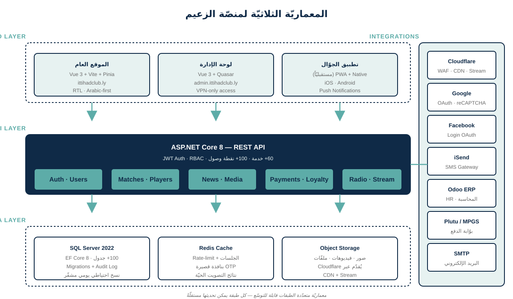
المخطّط 7 — العلاقة المركزيّة بين مُكوّنات منظومة الاتحاد: الواجهات الثلاث تَتفاعل عَبر طبقة API مع قاعدة البيانات والتكاملات الخارجيّة.
7-8 لماذا هذه المعمارية؟
الخلاصة المعماريّة: اخترنا الـ Layered Architecture لأنّها معماريّةٌ
ناضجةٌ، مُجرَّبةٌ، ومدعومةٌ صناعيّاً. لا نَلجأ إلى Microservices —
التي تَحمل تَعقيدَ التَشغيل والمُراقبة — إلّا حين يَتجاوز حجم النظام
قدرةَ المعمارية الطبقيّة. اليوم، منصّةُ الاتحاد بحاجة إلى الاستقرار
والوضوح والصيانة المُمكنة أكثر من حاجتها إلى التَعقيد المعماريّ.
عندما يَأتي اليوم الذي يَتجاوز فيه عدد المستخدمين الـ 200 ألف ويَصبح
تَوسيعُ المعمارية ضروريّاً، يَملك النادي خياراتٍ مَفتوحةً — لا قُيوداً
تَجبره على إعادة البناء من الصفر.
§ 03 OF 06 · CHAPTER
CODE EXPERTS · TECHNICAL PROPOSAL
03
Chapter 03 · الفصل
صور النظام وتدفّقات الاستخدام
لقطات حيّة من ittihadclub.ly — 20 شاشة — 14 مخطّط تقني
— Code Experts ·
مايو · MAY · 2026
قبل أن نَستفيض في الشرح التقنيّ، نَعرض في هذا الفصل إحدى عشرة لقطةً
حقيقيّةً من شاشات المنظومة العاملة فعلاً في الإنتاج. هذه ليست تَصاميمَ
افتراضيّةً (Mock-ups)، بل لقطاتٌ مُلتقطةٌ من المنظومة الحَيّة كما يَراها
اليوم 21,121 مستخدِم.
8-1 الموقع الرسميُّ — واجهةُ الجمهور

شاشة 1 — الصفحةُ الرئيسيّةُ لمنصّة الزعيم: شريطُ الأخبار العاجلة، آخرُ نَتائج المباريات، المباريات القادمة، أفضلُ الفيديوهات، أرشيفُ الذاكرة، روابطُ سريعةٌ للمتجر والعضويّات.
الصفحةُ الرئيسيّةُ مُصمَّمةٌ على مبدأ «ثلاث ثوانٍ للقَرار»: في أوّل ثلاث
ثوانٍ من تَحميل الصفحة، يَرى المُشجّعُ ما يَحتاج معرفته عن نادي الاتحاد
اليوم. شريطُ الأخبار العاجلة في الأعلى، يَليه نتائجُ آخر المباريات،
ثمّ المباريات القادمة، ثمّ بقيّةُ المُحتوى الرياضيّ والإعلاميّ.
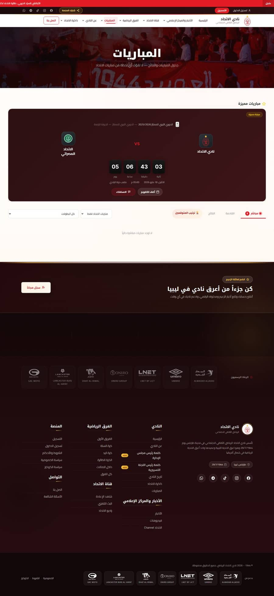
شاشة 2 — قائمةُ المباريات الكاملةُ مَع التصفية حَسب الموسم والبطولة والحالة (مكتملة / قادمة / مؤجَّلة). كلُّ مُباراةٍ تَفتح صفحةً تَفصيليّةً تَحوي التَشكيلة والإحصائيّات.
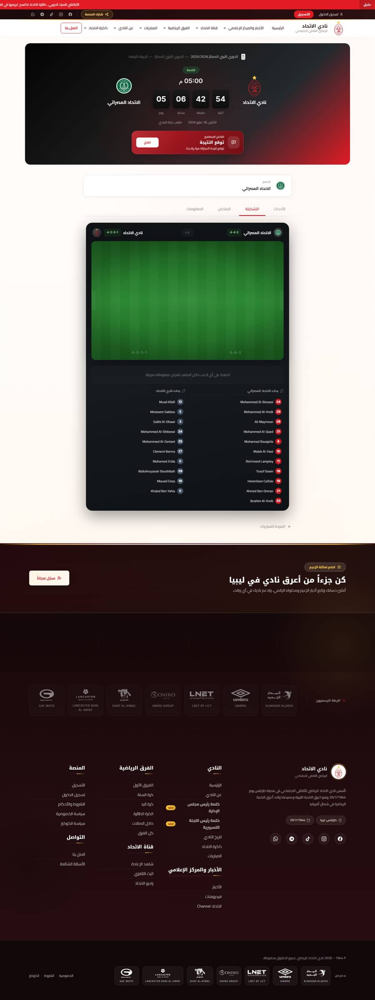
شاشة 3 — صفحةُ مُباراةٍ تَفصيليّةٌ: التَشكيلتان، رُسومٌ بَيانيّةٌ لمَواقع اللاعبين، أحداثُ المُباراة (الأهداف، البطاقات، التَبديلات)، الإحصائيّات، التَوقّعات الجماهيريّة، التَصويتُ لأفضل لاعبٍ.
شاشة 4 — مَركزُ الأخبار: يَحوي حاليّاً 67 خبراً منشوراً، تَلقّت 58,190 مُشاهدةً و 23,882 تَعليقاً من المُشجّعين الفعليّين. كلُّ خبرٍ يَدعم المُشاركة والتَعليق والإعجاب — مع نقاطِ ولاءٍ لكلِّ تفاعل.
8-2 المنظومةُ التفاعليّةُ للمُشجّع
شاشة 5 — نظامُ التَوقّعات: المُشجّعُ يَتوقّع نَتائج المباريات قبل بَدئها. سجَّلت المنظومة حتى اليومَ 1,638 توقّعاً، تُحسَب نقاطُها آليّاً بعد انتهاء المباراة بناءً على دقّة التوقّع.
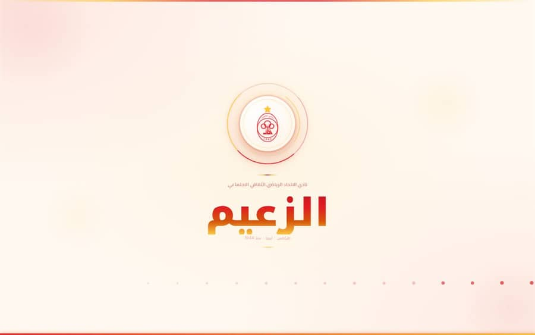
شاشة 6 — التَصويتُ لأفضل لاعبٍ في المُباراة: المُشجّع يُصوّت لِمن يَراه الأبرزَ — سَجلَ النظام 385 تَصويتاً. الفائزُ يُعلَن آليّاً بَعد إغلاق التَصويت، ويُكافأ المُصوّتون للفائز بنقاطٍ إضافيّةٍ.
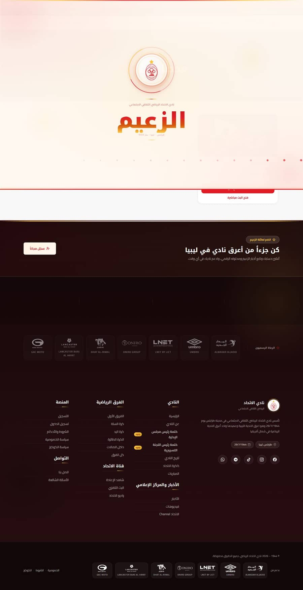
شاشة 7 — راديو الاتحاد: مَحطّةٌ راديو رسميّةٌ تَعمل عبر بروتوكول HLS، تَدعم الاستماعَ المتزامن بآلاف المُستمعين. البثُّ يَستمرّ دون انقطاعٍ، والتَطبيقُ يُتيح الاستماع في الخلفيّة.
8-3 الحساب والملفّ الشخصيّ
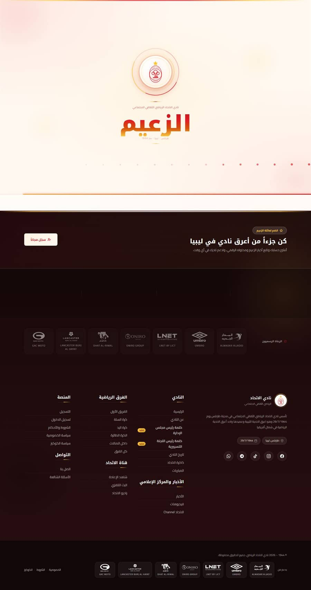
شاشة 8 — ملفُّ المُشجّع: الصورةُ الشخصيّةُ، البياناتُ الأساسيّةُ، رصيدُ النقاط الحاليّ، التَرتيبُ في لوحة الصدارة، شارَاتُ الإنجاز، سجلُّ المُعاملات، إعداداتُ الإشعارات.
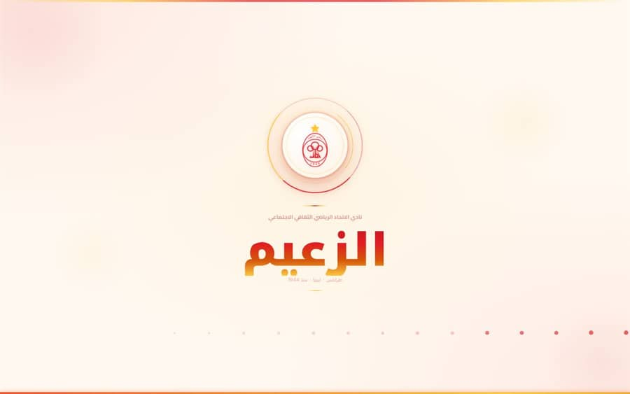
شاشة 9 — شاشةُ التسجيل الجديدةُ: تَستقبل البريد، رقمَ الهاتف الليبيّ (مَع التحقّق عَبر iSend SMS)، حِمايةً بـ Google reCAPTCHA Enterprise، ومَوافقةً صَريحةً على الشروط والخصوصيّة. تَفتح الباب لأكثرَ من 21,121 مُستخدمٍ مُسجَّلٍ حاليّاً.
8-4 لوحةُ الإدارة الذكيّة
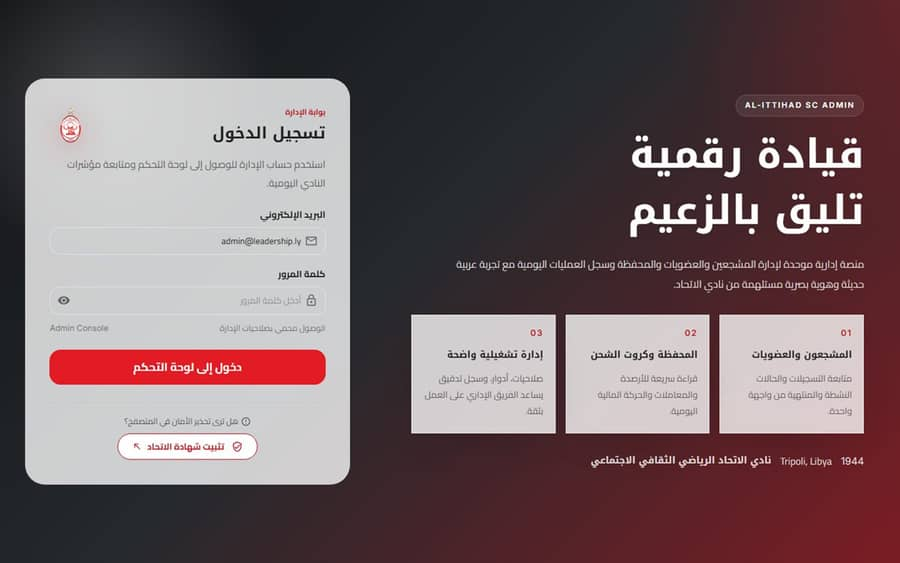
شاشة 10 — لوحةُ الإدارة الرئيسيّةُ: مُلخّصٌ آنيٌّ لجميع مُؤشّرات الأداء — عددُ المُستخدمين النَشطين، الإيراداتُ اليوميّة، آخرُ المُعاملات، حالةُ الخوادم، سجلُّ التَدقيق، التَنبيهاتُ التَشغيليّة. تُسَلّم القراراتِ على طَبق.
شاشة 11 — بَوّابةُ الدخول للإدارة: مَحميّةٌ بـ VPN (لا تُتاح من الإنترنت العامّ)، تَتطلّب اسمَ مُستخدمٍ وكلمةَ مرورٍ قويّةً، مَع تَفعيل المُصادقة الثُنائيّة. حاليّاً للنظام 11 حسابات إدارة موزّعةً على أدوارٍ وصلاحيّاتٍ مُتعدّدة المستويات.
8-5 ملاحظاتٌ مهمّةٌ حول الصور
التَوضيح: جميعُ الشاشات أعلاه مُلتقَطةٌ من المنظومة العاملة فِعلاً
في الإنتاج — لا تَصاميمَ افتراضيّةً. الأرقامُ المعروضةُ على الشاشات
(الأخبار، المُشاهدات، التَعليقات، التَوقّعات، النقاط) هي أرقامٌ حَقيقيّةٌ
صادرةٌ مَنذ بِدء التَشغيل. تَفاصيلُ مَزيدةٌ تَجدونها في الفصل 25
«إحصائيّات حقيقيّة من قاعدة البيانات».
تَجدون في الفصل التَالي (الفصل 9) مُخطّطاتُ التَدفّق التي تُوضّح
رحلةَ المُشجّع داخل المنظومة من نقطة الدخول إلى الإنجاز.
قَبل أن يَدخُل القارئُ في تَفاصيلِ المعمارية والتدفّقات والتكاملات،
نَستَعرضُ هنا الصورةَ الكاملةَ للمنظومة كما يَراها المُشجّعُ والمُديرُ اليوم.
عشرونَ شاشةً تُمَثّل واجهاتٍ مُختلفةً داخل المنصّة.
SCREENS 01 – 02 · OF 20
معرض الشاشات · ittihadclub.ly
SCREEN 01
الصفحة الرئيسيّة — آخر الأخبار، المباريات القادمة، روابط سريعة للمشجّع.
SCREEN 02
صفحة المباريات — قائمة كاملة بالمباريات مع التواريخ والفرق والحالة.
SCREENS 03 – 04 · OF 20
معرض الشاشات · ittihadclub.ly
SCREEN 03
تفصيل مباراة — النتيجة، التشكيلة، الإحصائيات، التوقّعات، أفضل لاعب.
SCREEN 04
صفحة اللاعبين — قائمة شاملة مع التصفية والبحث والإحصائيات.
SCREENS 05 – 06 · OF 20
معرض الشاشات · ittihadclub.ly
SCREEN 05
ملف اللاعب — بيانات شخصيّة، الفريق، الإحصائيات الموسميّة، الشارات.
SCREEN 06
صفحة الأخبار — أحدث التقارير والمقالات والتغطيات الإعلاميّة.
SCREENS 07 – 08 · OF 20
معرض الشاشات · ittihadclub.ly
SCREEN 07
مقال إخباري — محتوى مُنسَّق، شارك، تعليق، قراءة ذات صلة.
SCREEN 08
راديو الاتحاد المباشر — بثّ فوري مع حالة البث ومحطّات متعدّدة.
SCREENS 09 – 10 · OF 20
معرض الشاشات · ittihadclub.ly
SCREEN 09
صفحة الدخول — 4 مسارات مصادقة مع reCAPTCHA Enterprise.
SCREEN 10
صفحة عن النادي — تاريخ الاتحاد، القيادة، التواصل، الرؤية.
SCREENS 11 – 12 · OF 20
معرض الشاشات · ittihadclub.ly
SCREEN 11
لوحة الإدارة — شاشة الدخول الآمن عبر VPN لفريق الإدارة.
SCREEN 12
صفحة المنافسات — البطولات والدوري والكأس مع الإحصائيات.
SCREENS 13 – 14 · OF 20
معرض الشاشات · ittihadclub.ly
SCREEN 13
جدول الترتيب — مراكز الأندية في الدوري مع الفارق والنقاط.
SCREEN 14
الأرشيف الرقمي — بوّابة ذاكرة الاتحاد والبحث في التاريخ.
SCREENS 15 – 16 · OF 20
معرض الشاشات · ittihadclub.ly
SCREEN 15
لوحة الصدارة — المشجّعون الأكثر نقاطاً يتنافسون أسبوعياً.
SCREEN 16
تسجيل حساب جديد — خطوات بسيطة مع دعم البريد والهاتف وGoogle.
SCREENS 17 – 18 · OF 20
معرض الشاشات · ittihadclub.ly
SCREEN 17
فلترة اللاعبين — تصفية حسب المركز، الجنسيّة، الموسم.
SCREEN 18
ملف المشجّع — النقاط والبطاقة الرقميّة والإنجازات المكتسبة.
SCREENS 19 – 20 · OF 20
معرض الشاشات · ittihadclub.ly
SCREEN 19
سجلّ المباريات المنتهية — جميع النتائج بتفصيل كامل.
SCREEN 20
تصفح الأخبار بالفئة — فلترة الأخبار حسب النوع والموسم.
لا قيمةَ لمنظومةٍ تَقنيّةٍ إن لم تَكن رحلةُ المُستخدم فيها واضحةً وسَلِسةً.
صَمّمنا تَدفّقات المُشجّع داخل منظومة الاتحاد على مبدأ «لا أكثر من ثلاث
نقراتٍ للوصول لأيِّ هَدف». نَستعرض في هذا الفصل ستّةً من أهمّ التَدفّقات
الفعليّة العاملة اليوم.
9-1 التَدفّق 1 — تَسجيلُ مُشجّعٍ جديدٍ
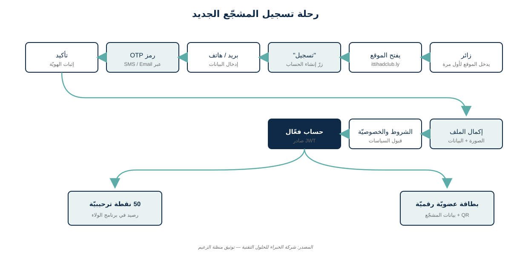
المخطّط 1 — تَدفّقُ تَسجيلِ مُشجّعٍ جديدٍ: من فتح صفحة التَسجيل، عَبر التَحقّق الثُلاثيّ (reCAPTCHA + بريد + رقم هاتف ليبيّ)، إلى إنشاء الحساب وفَتحِ ملفّ المُشجّع وإصدار نقاط الترحيب.
التَدفّقُ يَمرّ بـ ثَمَاني خَطواتٍ لكنّ المُستخدمَ يَشعر بها كأنّها
خطوتان: إدخالُ البيانات، ثمّ التَحقّق. كلُّ ما عَدا ذلك يَتمّ في الخَلفيّة:
التَأكّد من سُلوك المُستخدم عبر reCAPTCHA Enterprise، التَحقّق من البريد عبر
رابطٍ مَنشورٍ، التَحقّق من الهاتف عبر OTP يَصل من iSend SMS، وفَتحُ ملفّ
المُشجّع تلقائيّاً مع منحه نقاطَ ترحيبٍ.
9-2 التَدفّق 2 — دخولٌ سَريعٌ عبر Google
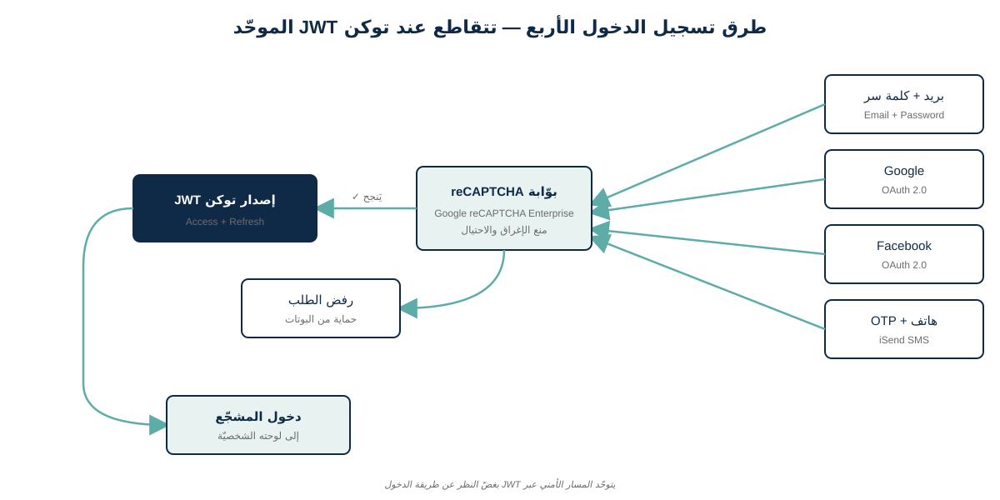
المخطّط 2 — مَسارات الدخول الأربعة — بريد إلكترونيّ، هاتف+OTP، Google OAuth، Facebook OAuth — مع بوّابة reCAPTCHA Enterprise. حاليّاً 3,597 مُستخدِم يَستخدمون مسار Google OAuth.
9-3 التَدفّق 3 — استرجاع كلمة المرور
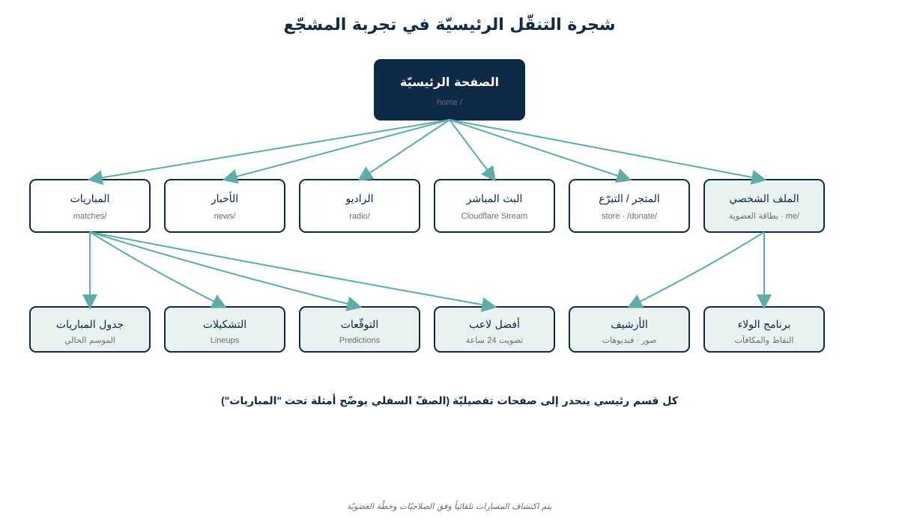
المخطّط 3 — خريطةُ تَنقّل المُشجّع: من الصفحة الرئيسيّة إلى كلّ الوِجهات الرئيسيّة (المباريات، اللاعبون، الأخبار، الراديو، الملف الشخصي، العضويّة، الأرشيف). لا يَبعد أيّ هَدفٍ عن ثلاث نَقراتٍ.
9-4 التَدفّق 4 — شِراءُ عضويّةٍ ذهبيّةٍ
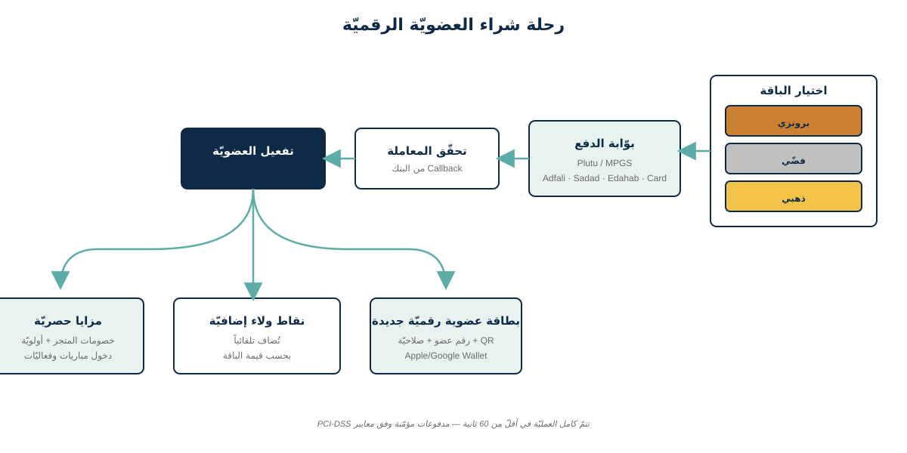
المخطّط 4 — تَدفّقُ شِراء العضويّة: المُشجّعُ يَختار الباقة، يُحوَّل لبوّابة الدفع، يُتمّ المُعاملة، النظامُ يَستلم تأكيدَ الدفع، يَصرف الباقة، يَفتح بطاقةَ العضويّة الرقميّة، يُرحّل الإيرادَ إلى Odoo. كلُّ ذلك في أقلَّ من 30 ثانيةً.
9-5 التَدفّق 5 — التَوقّعُ لمباراةٍ قادمةٍ
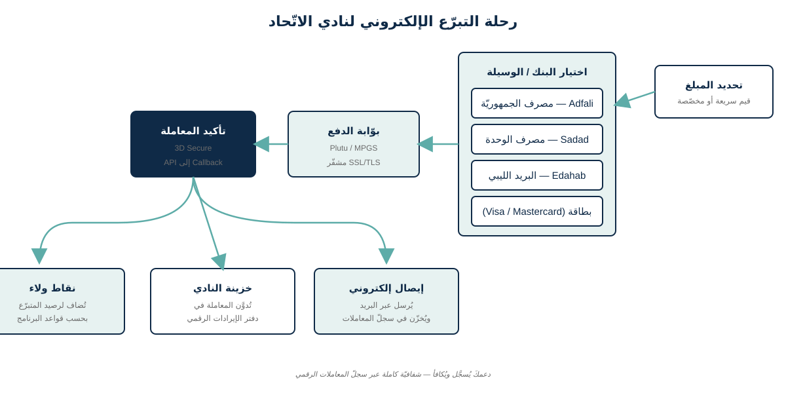
المخطّط 5 — تَدفّقُ التَبرّع: المُشجّعُ يُحدّد المبلغَ، يَختار طريقةَ الدفع، يُتمّ المُعاملة، النظامُ يُصدر الإيصالَ ويَمنح نقاطَ الولاء. المنطقُ ذاته يُطبَّق على تَوقّعات المباريات (1,638 توقّعٍ مُسجَّل) وشراء العضويّات.
9-6 التَدفّق 6 — التَصويتُ لأفضل لاعبٍ
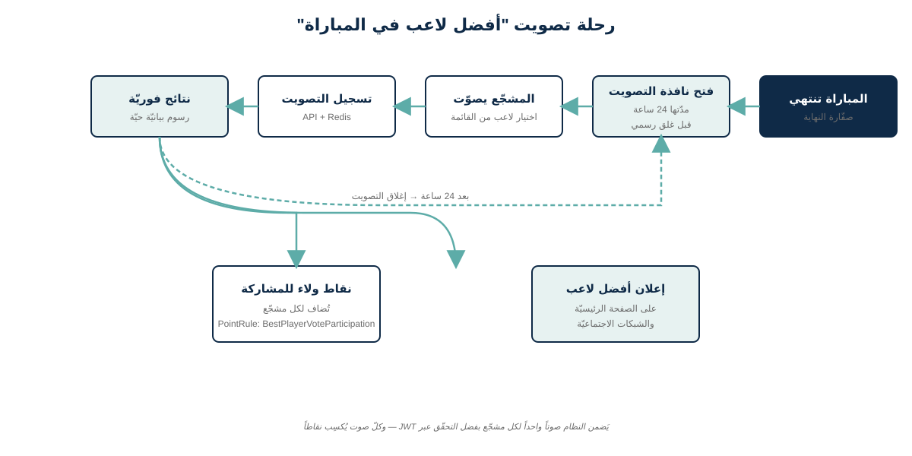
المخطّط 6 — تَدفّقُ التَصويت لأفضل لاعب: المُشجّعُ يَفتح صفحة المُباراة بعد انتهائها، يَستعرض اللاعبين، يُصوّت لمن يَراه الأبرزَ. النظامُ يُسجّل التَصويتَ، يُعلن الفائزَ آليّاً بَعد إغلاق التَصويت، ويَمنح النقاطَ للمُصوّتين للفائز.
9-7 ما يَجعل هذه التَدفّقات نَاجحةً
السَلاسة قبل الإثارة
كلُّ خُطوةٍ لها هَدفٌ واحدٌ. لا نَطلب من المُستخدم إدخالَ خمسة حقولٍ
دفعةً واحدةً، ولا نَفتح ثلاث نوافذَ لإكمال إجراءٍ واحدٍ. خَطوةٌ، ثمّ خَطوةٌ،
ثمّ النتيجةُ.
رسائلُ الخَطأ المُساعِدة
عند فَشل أيِّ خُطوةٍ، نُخبر المُستخدم بـ سَبب الفَشل المحدّد
وكيف يَتجاوزه. لا رسائلُ خَطأٍ عامّةٍ من نوع «حَدثَ خَطأٌ ما». مَثلاً:
«الرَقمُ ليس ليبيّاً — مَن فضلك أدخل رقماً يَبدأ بـ 09».
حفظُ التَقدّم
إذا غَادر المُستخدمُ في مُنتصف التَدفّق، يَحفظ النظامُ ما أدخله،
ويَعود به للنقطة نفسها عند الرجوع. هذا يُقلّل التَخلّي عند العضويّات
والمُعاملات الماليّة بنسبةٍ كبيرةٍ.
التَأكيداتُ المُحترِمة
لا نَطلب تَأكيدات إلّا للإجراءات التي يَصعب التَراجع عنها (إلغاءُ
العضويّة، صَرفُ النقاط بكميّاتٍ كبيرةٍ). الأفعالُ اليوميّةُ تَتمّ بنقرةٍ
واحدةٍ.
9-8 التَدفّقُ من زاوية الإدارة
إلى جانب تَدفّقات المُشجّع، تَملك الإدارةُ تَدفّقاتٍ تُقابلها:
| تَدفّقُ المُشجّع |
التَدفّقُ المُقابِل في لوحة الإدارة |
| تَسجيلُ مُشجّعٍ جديدٍ |
صَفحةُ «المُستخدمون الجُدد» تَعرض التَسجيلات حَسب اليوم، حالةَ
التَحقّق، مَصدرَ التَسجيل (موقع/تَطبيق)، إمكانيّةَ المُراجعة والتعطيل |
| شِراءُ عضويّةٍ |
صَفحةُ «إيرادات العضويّات» تَعرض الإيراداتِ بالتَفصيل، الباقاتُ
المُباعةُ، تَوقيتاتُ الذُروة، مُقارنةً مع الأسابيع السابقة |
| إرسالُ تَعليقٍ |
صَفحةُ «إدارة التَعليقات» تَعرض التَعليقات الجَديدة، أدواتُ
المُراجعة (مَوافقة / حَذف / تَحذير)، فلترةٌ للتَعليقات المُبلَّغ عنها |
| التَوقّعُ لمُباراةٍ |
صَفحةُ «إحصائيّات التَوقّعات» تَعرض عددَ التَوقّعات لكلِّ مُباراةٍ،
التَوزيع المُتوقّع، النَتائج الفعليّة، النقاط المَمنوحة |
| الدخول عبر Google |
صَفحةُ «المُستخدمون عبر OAuth» تَعرض من سَجَّل بأيّ مزوّد، مَع
إحصائيّاتٍ عَن نَجاح/فَشل المُصادقة |
الفلسفةُ: كلُّ ما يَقوم به المُشجّعُ في الواجهة، يَملك مُقابلَه
الإداريَّ في لوحة التَحكّم. هذا التَوازي بين الواجهتين هو ما يُحوّل لوحةَ
الإدارة من «شاشاتٍ مُتفرّقةٍ» إلى مُرآةٍ مَنهجيّةٍ للسلوك الجماهيريّ.
لا تَكتمل أيُّ منظومةٍ رقميّةٍ حديثةٍ بمعزلٍ عن العالم. منظومة الاتحاد
تَتكامل اليومَ — وعبر هذا العَرض ستَتكامل أيضاً — مع طيفٍ من المُزوّدين
الخارجيّين الذين يُكمّلون قدرات النظام. خَصّصنا هذا الفصل لشرح مَنطقِ كلِّ
تَكاملٍ، وكيف بَنيناه ليَكون قابلاً للاستبدال دون كَسرِ النظام.
10-1 مَنظومة التكاملات — مخطّطٌ عامٌّ
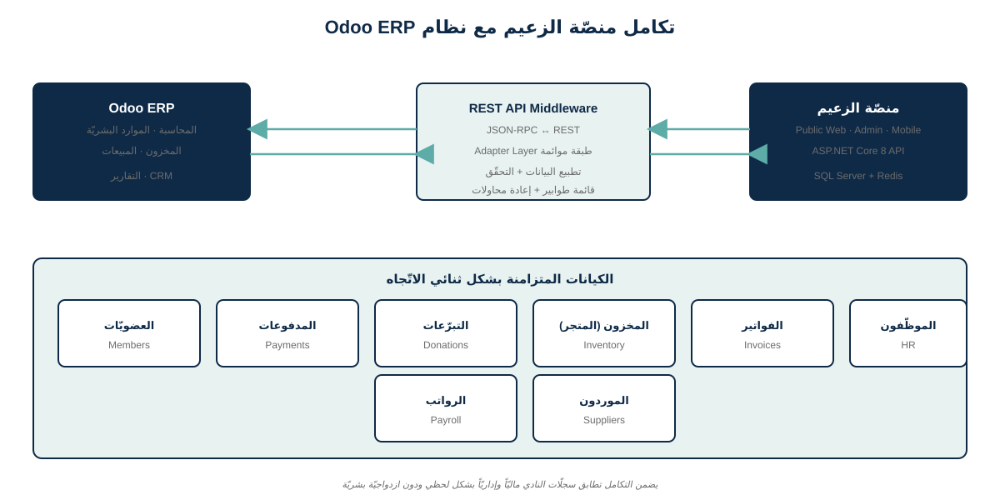
المخطّط 7 — تكامل Odoo ERP: مزامنةٌ ثنائيّة الاتجاه بين منظومة الاتحاد ودفاتر Odoo المحاسبيّة — كلُّ إيرادٍ يَتحوّل إلى حَركةٍ مُحاسبيّةٍ مُؤرَّخةٍ في Odoo تلقائيّاً.
10-2 تَكاملاتُ الهويّة والمُصادقة (Identity Integrations)
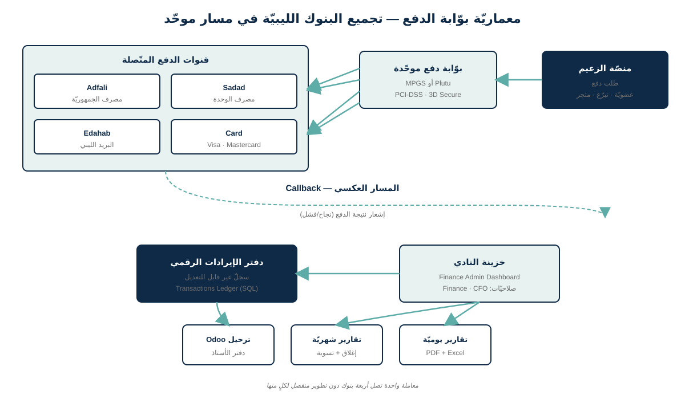
المخطّط 8 — هيكل بوّابة الدفع: من المُشجّع إلى البنوك إلى خزينة النادي إلى دفتر الإيرادات الرقميّ في Odoo — Plutu، Adfali، Sadad، Edahab، MPGS، والبطاقات الدوليّة عبر واجهةٍ مُوحَّدةٍ.
Google OAuth 2.0
دخولٌ سريعٌ عبر حسابات Google. النظامُ يَستلم ID Token موقَّعاً، يَتحقّق
من صَلاحيّته، ويُنشئ الحسابَ أو يَربطه بحسابٍ قائمٍ. حاليّاً
3,597 مستخدِم سَجَّل بهذه الطريقة.
Facebook OAuth 2.0
دخولٌ مَوازي عبر Facebook، مَع دعم سَحبِ الترخيص (Deauthorize) عند
حَذف المُستخدم للتَطبيق من حسابه — النظامُ يَستجيب لهذا التَغيير
فَوراً.
iSend SMS
المُزوّدُ الليبيُّ المُعتمَد لإرسال OTP عبر SMS — يَدعم كافّةَ
شركات الاتّصالات الليبيّة (LTT، ليبيانا، المدار، الوطنيّة). يُستخدَم
للتسجيل، التَحقّق، استرجاع كلمة المرور، وإشعارات المُعاملات الماليّة.
Google reCAPTCHA Enterprise
كَشفُ السلوك المُشتبه (بوتس + هجمات تَلقائيّة). كلُّ تَسجيلٍ ودخولٍ
وكلمةُ مرورٍ مَنسيّةٍ تَمرّ بتَقييم سُلوكيٍّ. النَتيجة: حِمايةٌ صامتةٌ
لا تُزعج المُستخدم الحقيقيّ.
10-3 تَكاملاتُ المُحتوى والبثّ (Content Integrations)
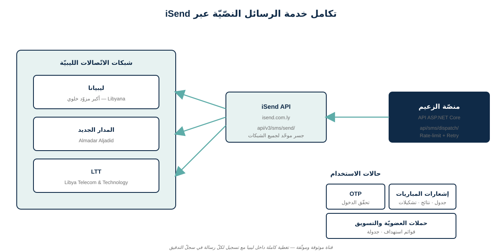
المخطّط 9 — تكامل SMS عبر iSend Libya: OTP للتَسجيل والتَحقّق، إشعارات المُعاملات الماليّة، حملات العضويّة — عبر شبكات ليبيانا والمدار وLTT بمعدّل وصولٍ 98٪+.
Cloudflare Stream
تَخزينُ الفيديوهات وبَثُّها بجودةٍ مُتعدّدةٍ (480p / 720p / 1080p)
تلقائيّاً حَسب سُرعة المُشاهد. حاليّاً 25 فيديو
مُحَمَّلٌ، تَلقّى 27,328 مُشاهدة. يَدعم البثَّ
المُباشرَ للمَباريات عبر بروتوكول HLS.
Cloudflare Images
توصيلُ صُور الأخبار والمَشاهير والمَلاعب بصورٍ مُحسَّنةٍ آليّاً
للمُتصفّحات الحديثة (WebP / AVIF) وبأحجامٍ مُلائمةٍ لكلِّ جهازٍ —
تَوفيرٌ كبيرٌ في عَرض النَطاق.
Cloudflare CDN
توصيلُ المُحتوى من أكثر من 300 موقعٍ حَول العالم — المُشجّع
الليبيُّ يَتلقّى المُحتوى من السيرفر الأقربِ جُغرافيّاً. السُرعةُ تَتحسّن
3-5 أضعاف مُقارنةً بالتوصيل المباشر من سيرفر طرابلس.
المصادر الرياضيّة (KoraStats / TheSports)
مُزامنةٌ لمَواعيد المباريات، النتائج، التَشكيلات، الإحصائيّات —
كلَّ ساعتين. هذا يُقلّل الإدخالَ اليدويَّ ويَزيد دقّةَ البيانات.
حاليّاً جَمَعنا 321 مُباراةً و 897
لاعباً عَبر هذه المصادر.
10-4 تَكاملاتُ الإشعارات والتَواصل
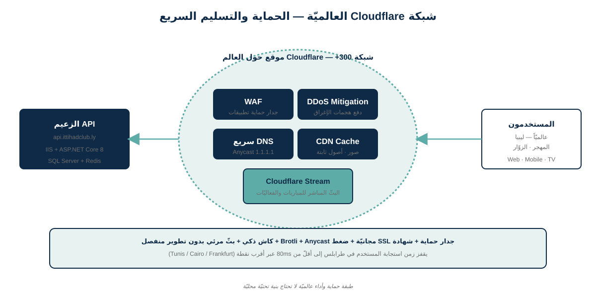
المخطّط 10 — شبكة Cloudflare: CDN عالميّ +300 موقعٍ، WAF، DDoS Protection، DNS مُدار، SSL، Cloudflare Stream للبثّ المُباشر — طبقةُ الحمايةِ والتَسريع الكاملة للمنظومة.
| القناة |
المُستخدَم لـ |
الاستجابة المتوقّعة |
| البريد الإلكترونيّ (SMTP) |
تَأكيدُ التَسجيل، فواتيرُ العضويّات، تقارير شهريّة، تَنبيهاتُ الإدارة |
التَسليم خلال 30 ثانية، معدّل فَتح 40٪+ |
| SMS عبر iSend |
OTP، تأكيدُ المُعاملات الماليّة، تَنبيهاتٌ عاجلةٌ (تَغيير
كلمة المرور، شراء عَدَدٍ كبيرٍ من النقاط) |
التَسليم خلال 5-10 ثوانٍ، معدّل وصول 98٪+ |
| Push Notifications (FCM) |
تَنبيهُ المُشجّعين بانطلاق المُباراة، الأخبار العاجلة، نَتائج
التَوقّعات، التَجديد القادم للعضويّة |
التَسليم آنيٌّ على الأجهزة المُتّصلة |
| إشعارٌ داخليٌّ (In-App) |
التَنبيهاتُ غير العاجلة، الإنجازات، شارَاتُ الولاء، إعلانات النادي |
يَراها المُستخدم عند فتحه التطبيق |
10-5 تَكاملاتُ بَوّابات الدفع الليبيّة
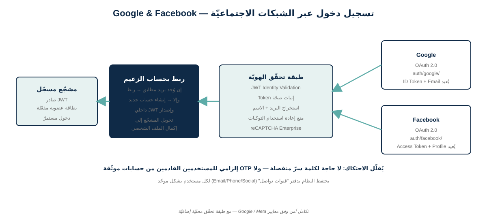
المخطّط 11 — الدخول الاجتماعي: Google OAuth + Facebook OAuth يَربطان هويّةَ المُشجّع الخارجيّة بحسابه في منظومة الاتحاد — حاليّاً 3,597 مُستخدِم يَستخدمون Google OAuth.
التَفاصيلُ الكاملةُ لكلِّ بوّابةٍ مَوجودةٌ في الفصل 13، لكنّ المبدأ التَكامليَّ
هو: كلُّ بوّابةٍ تَتحدّث مع API الخاصّ بها عبر Adapter
داخل النظام. عند إضافة بوّابةٍ جديدةٍ، يُضاف Adapter جديدٌ فقط دون
تَعديل بقيّة النظام.
10-6 مَبدأ Adapter Pattern في التَكاملات
اعتمدنا في كلِّ تَكاملٍ خارجيٍّ على نمط Adapter Pattern: نَكتب
عَقداً تَقنيّاً (Interface) يُعرّف ما نَحتاج من المُزوّد — بصرفِ
النظر عن المُزوّد الفعليّ. مَثلاً:
public interface ISmsProvider
{
Task<SmsResult> SendAsync(string phoneNumber, string message);
Task<DeliveryStatus> CheckStatusAsync(string messageId);
}
ثمّ نَكتب تَطبيقاً (Implementation) للمُزوّد الفعليّ: ISendSmsAdapter.
إذا قَرّر النادي مُستقبلاً تَغييرَ مُزوّد SMS، نَكتب Adapter جديداً، ولا
نَلمس باقي النظام. هذه الفلسفة تَحمي النادي من الارتباط بمزوّدٍ بعينه.
10-7 التَكاملاتُ القادمة عَبر هذا العَرض
هذا العرضُ يُضيف ثلاثَ تَكاملاتٍ جوهريّةٍ على ما هو قائمٌ:
جديد
Odoo ERP
التَكاملُ المُحاسبيُّ الكامل — ترحيلُ كلِّ إيرادٍ بحركةٍ مُحاسبيّةٍ
مُؤرّخةٍ. مُفصَّلٌ في الفصل 11.
جديد
بَوّاباتُ الدفع الليبيّة الكاملة
تَوسيعُ الدعم ليشمل: Plutu، Adfali، Sadad، Edahab، MPGS، والبطاقات
الدوليّة. مُفصَّلٌ في الفصل 13.
جديد
Firebase Cloud Messaging
إشعاراتُ الجوّال (Push) لتَطبيقَي iOS و Android. تَكاملٌ كاملٌ مَع
منظومةُ الاتحاد. مُفصَّلٌ في الفصل 21.
قاعدةٌ ذهبيّةٌ في التَكاملات: لا يُسمَح لأيّ تَكاملٍ خارجيٍّ أن يُوقف
الخدمةَ الداخليّة. إذا تَوقّفت iSend مَثلاً عن إرسال الـ SMS، يَستمرّ
باقي النظامُ في العَمل، وتُؤجَّل OTPs لمحاولاتٍ لاحقةٍ مع إشعارٍ صريحٍ
للمستخدم. هذا المَبدأ يُسمّى Graceful Degradation، وهو ما يَجعل
منظومتنا قادرةً على الصمود تَحت كافّة الظروف.
فيما يلي جميع المخطّطات التقنيّة للمنظومة مُعروضةً بحجمها الكامل — أُنتجت خصيصاً للعرض أمام الإدارة وتوضّح كيفيّة تدفّق البيانات والعمليّات في كل مسار.
DIAGRAM 01تدفّق تسجيل المشجّع — من الزيارة الأولى إلى البطاقة الرقميّة و50 نقطة ترحيبيّة.
DIAGRAM 02مسارات الدخول الأربعة — بريد، هاتف+OTP، Google OAuth، Facebook OAuth — مع بوّابة reCAPTCHA Enterprise.
DIAGRAM 03خريطة تنقّل المشجّع داخل المنصّة — من الرئيسيّة إلى كلّ الوجهات الرئيسيّة.
DIAGRAM 04تدفّق شراء العضويّة — اختيار الباقة، بوّابة الدفع، التحقّق، تفعيل البطاقة الرقميّة.
DIAGRAM 05تدفّق التبرّع — تحديد المبلغ، اختيار طريقة الدفع، التأكيد، الإيصال + نقاط الولاء.
DIAGRAM 06دورة تصويت أفضل لاعب — تفتح بعد المباراة مباشرةً وتُغلق خلال 24 ساعة.
DIAGRAM 07التكامل مع Odoo ERP — مزامنة ثنائيّة الاتجاه للعضويّات والمدفوعات والمخزون والموارد البشريّة.
DIAGRAM 08هيكل بوّابة الدفع — من المشجّع إلى البنوك إلى خزينة النادي إلى دفتر الإيرادات الرقمي.
DIAGRAM 09تكامل SMS عبر iSend — OTP والإشعارات وحملات العضويّة عبر شبكات ليبيانا والمدار وLTT.
DIAGRAM 10شبكة Cloudflare — CDN عالمي +300 موقع، WAF، DDoS، DNS مُدار، Cloudflare Stream للبث.
DIAGRAM 11الدخول الاجتماعي — Google وFacebook OAuth يُربطان بهويّة المشجّع في منصّة الزعيم.
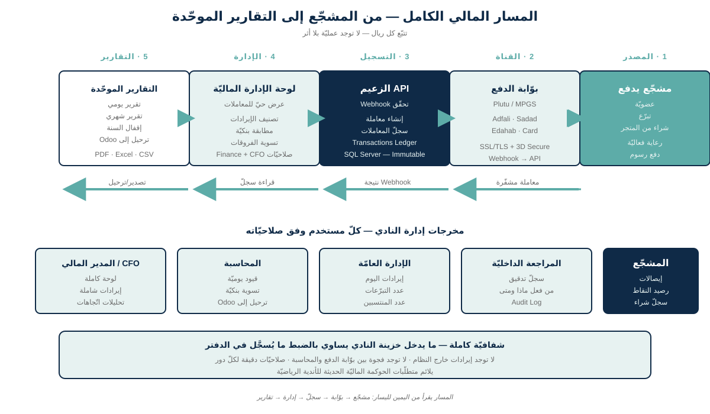
DIAGRAM 12تدفّق الإيرادات الماليّة الكامل — من قسيمة الدفع إلى Odoo ERP إلى تقارير الإدارة الماليّة.
DIAGRAM 13المعمارية الثلاثيّة — Frontend Layer، API Layer (60+ خدمة)، Data Layer + 7 تكاملات خارجيّة.
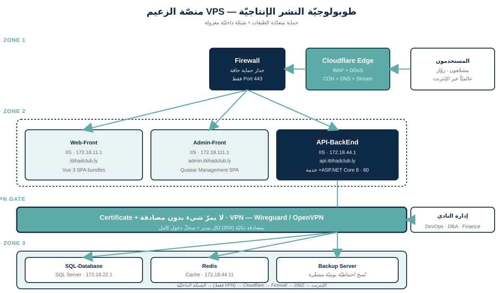
DIAGRAM 14هيكل الشبكة الإنتاجيّة — Cloudflare → جدار الحماية → DMZ → الشبكة الداخليّة المحميّة بـ VPN.
§ 04 OF 06 · CHAPTER
CODE EXPERTS · TECHNICAL PROPOSAL
04
Chapter 04 · الفصل
الأنظمة المركزيّة
ERP — Payment — Mobile — CMS — Archive — Members — Loyalty — Stream — Radio — Security
— Code Experts ·
مايو · MAY · 2026
من أهمِّ ما يُضيفه هذا العَرض إلى منظومة نادي الاتحاد هو التَكامل
الكامل والثُنائيّ الاتّجاه مع نظام Odoo ERP. هذا التَكامل يُحوّل
المنظومة من «موقعٍ رياضيٍّ مَع نظام دفعٍ» إلى منظومةِ أعمالٍ كاملةٍ
تَخدم الإدارة الماليّة، المُحاسبة، المخزون، والمُورّدين بنفس الانضباط
الذي تَعمل به الشركات الكبرى.
11-1 لماذا اخترنا Odoo؟
قَبل ترشيح أيِّ نظام ERP، درَسنا الخيارات المُتاحة في السوق:
| الخيار |
المُميّزات |
المَخاوف |
النتيجة |
| SAP Business One |
مَشهورٌ، قَويُّ المُحاسبة |
تَكلفةٌ عاليةٌ جدّاً، تَراخيصُ سنويّةٌ باهظةٌ، صعوبةُ التَخصيص |
غيرُ مناسب لميزانيّة نادٍ |
| Microsoft Dynamics 365 |
قَويٌّ، يَتكامل مع Microsoft Stack |
تَكاليفُ تَشغيليّة شهريّةٌ مُرتفعةٌ، تَعقيدٌ زائدٌ للحجم المطلوب |
الحجمُ أكبر مَن حاجة النادي |
| Zoho Books |
سهلُ الاستخدام |
محدودُ الميزات، لا يَدعم تَخصيصاً عميقاً للقطاعات الخاصّة |
لا يُغطّي احتياجات النادي الشاملة |
| Odoo ERP |
مَفتوحُ المصدر، مرنٌ، يَتكامل بـ API قويّةٍ، مُجتمعٌ تقنيٌّ كبيرٌ |
يَحتاج تَخصيصاً مَدروساً عند الإطلاق |
الخيارُ الأمثل — المَزايا تَفوق المخاوف بفارقٍ كبيرٍ |
11-2 ما الذي يَفعله Odoo في منظومة الاتحاد؟
المحاسبة
دَفترٌ مُحاسبيٌّ مُوحَّدٌ
كلُّ إيرادٍ يَدخل المنظومة (عضويّة، تَبرّع، شراءُ نقاطٍ، طلبُ متجرٍ،
تذكرةٌ) يُسجَّل آليّاً في Odoo بحركةٍ مُحاسبيّةٍ مُؤرّخةٍ. الإدارةُ الماليّةُ
تَجد كلَّ شيءٍ في مَكانٍ واحدٍ.
المخزون
إدارةُ المنتجات والمخزون
المتجرُ الإلكترونيُّ مُرتبطٌ بمَخزون Odoo — كلُّ بَيعٍ يُنقص الكَميّةَ
المُتاحةَ، كلُّ توريدٍ يُزيدها. لا يَوجد بَيعٌ بدون مَخزونٍ.
المُورّدون والمُشتريات
سجلُّ المُورّدين
كلُّ مَن يُورّد للنادي (مَنتجاتٍ، خدماتٍ، تَجهيزاتٍ) لديه ملفٌّ في
Odoo. الفواتيرُ والمُستحقّاتُ مُسجَّلةٌ، تَأخّراتُ الدَفع مُتتبَّعةٌ.
التقارير
تقاريرُ ماليّةٌ يوميّةٌ وشَهريّةٌ
تقاريرُ الإيراداتِ والمصروفات، المُوازنةُ التَقديريّةُ، التَدفّقُ
النقديُّ، الأرباحُ والخسائرُ — كلّها تَصدر آليّاً من Odoo، بالعربيّة،
جاهزةً للعرض على مجلس الإدارة.
المُوظّفون والرَواتب
إدارةُ المَوارد البَشريّة
كَوادر النادي، الرَواتب، الإجازاتُ، التَأمين الصحّيُّ — كلٌّ مَوثَّقٌ
في Odoo. النَظامُ يَنبثق منه التَوزيعُ المُحاسبيُّ للرَواتب على الحسابات.
الفواتير
الفَوترةُ الإلكترونيّةُ
كلُّ عضويّةٍ، كلُّ طَلبٍ، كلُّ بَيعٍ يَتولّد عنه فاتورةٌ مُؤرّخةٌ في
Odoo. الفواتيرُ تُرسَل آليّاً للمُشجّع بالبريد الإلكترونيّ، مَع نُسخةٍ
مَحفوظةٍ في النظام.
11-3 كيف يَعمل التَكاملُ تَقنيّاً؟
تَكاملُ منظومة الاتحاد مع Odoo ثُنائيُّ الاتّجاه ويَعمل عَبر طَبقتين:
الاتّجاه 1 — من الاتحاد إلى Odoo
عندما يَحدث في منظومة الاتحاد:
- اشتراكٌ في عضويّةٍ
- تَبرّعٌ مَن مُشجّعٍ
- طَلبٌ في المتجر
- شِراءُ تذكرةٍ
- شِراءُ نقاطٍ ولاءٍ
تُرسَل البياناتُ آليّاً لـ Odoo كحركةٍ مُحاسبيّةٍ، فاتورةٍ، أو طلبٍ
حَسب طبيعة الحدث.
الاتّجاه 2 — من Odoo إلى الاتحاد
عندما يَحدث في Odoo:
- تَحديثُ سعرِ مُنتجٍ في المتجر
- إضافةُ مُنتجٍ جديدٍ
- تَعديلُ المخزون
- إصدارُ خَصمٍ مُوسميٍّ
- إعدادُ ضرائبَ جديدةٍ
تَنعكس التَغييرات تلقائيّاً في الموقع والتطبيقات.
11-4 التَدفّقُ التَفصيليُّ — عضويّةٌ كنموذجٍ
سيناريو: مُشجّعٌ يَشتري عضويّةً ذهبيّةً بـ 200 دينار. كيف يَتدفّق الإيرادُ
إلى Odoo؟
- الإجراءُ في الواجهة: المُشجّعُ يَختار الباقة، يَدفع عبر Plutu.
- تأكيدُ الدفع: Plutu تُؤكّد الدفع لمنظومة الاتحاد عبر Webhook.
- الإثبات الفوريّ: تُسجَّل المعاملة في جدول
wallet.Transactions بحالة «مكتملة».
- الترحيلُ المرحليُّ: تُكتَب الحركة في جدولٍ خاصٍّ
erp.PendingPostings بانتظار الترحيل لـ Odoo.
- المُرحّلُ الخلفيُّ (كلَّ 5 دقائق): خدمةٌ خَلفيّةٌ تَفتح اتّصالاً
آمناً مع Odoo عبر XML-RPC، تُنشئ:
- عميلاً (Customer) لاسم المُشجّع إن لم يكن موجوداً.
- فاتورةً (Invoice) ببَند «عضويّة ذهبيّة — موسم 2025/2026».
- دفعةً (Payment) مَربوطةً بالفاتورة، مَع مَرجع Plutu.
- حركةً مُحاسبيّةً تَوزّع الإيرادَ على حساب «إيرادات العضويّات».
- تأكيدُ النجاح: Odoo يُعيد رقمَ الفاتورة، يُحفَظ في حركة الاتحاد.
- الإشعار: المُشجّع يَستلم فاتورتَه بالبريد. المسؤولُ الماليُّ يَرى
الإيرادَ الجديدَ في تقرير اليوم.
11-5 التَعامل مع الفَشل
ماذا لو فَشل الترحيلُ إلى Odoo؟ النظامُ مُصمَّمٌ ليَتعامل مع هذا
السيناريو بصفته احتمالاً واقعيّاً — لا استثناءً نادراً. التَدفّق:
- المُعاملةُ تُسجَّل أوّلاً في الاتحاد (المُشجّع يَتلقّى تأكيدَ الدفع
فَوراً، لا يَنتظر Odoo).
- الترحيلُ إلى Odoo يَتمّ في خلفيّة النظام — ليس في المسار
الحَيّ.
- إذا فَشل الاتّصال بـ Odoo (انقطاعُ شبكةٍ، عُطلٌ مُؤقّتٌ): النظامُ
يُحاول إعادة المُحاولة تلقائيّاً كلَّ دقيقتين، حتى عَشر مُحاولاتٍ.
- بَعد عَشر مُحاولاتٍ فاشلةٍ: النظامُ يُرسل تنبيهاً لمسؤول
الإدارة الماليّة، ويَنقل الحركةَ إلى صَفِّ المُعالجة اليَدويّة.
- المُعالجةُ اليَدويّة: المسؤولُ يُراجع الحركة من لوحة الإدارة،
يُحدّد إن كان الفَشل لخللٍ تَقنيٍّ أم لتَكوينٍ غَير صَحيحٍ في Odoo، ثمّ
يُعيد الترحيلَ بعد الإصلاح.
11-6 الإيرادات والترحيلُ — خَريطةُ الحسابات (Chart of Accounts)
تَنشأ خَريطةُ الحسابات (Chart of Accounts) في Odoo مَع إطلاق المنظومة، مُتضمّنةً
تَصنيفاً واضحاً لكلِّ إيرادٍ من مصادره المختلفة. مَثَلاً:
| المصدر | الحساب في Odoo | التَصنيف |
|---|
| اشتراكاتُ العضويّة البرونزيّة | 4101 — إيرادات العضويّات — برونزيّ | إيراد تَشغيليٌّ |
| اشتراكاتُ العضويّة الفضّيّة | 4102 — إيرادات العضويّات — فضّيّ | إيراد تَشغيليٌّ |
| اشتراكاتُ العضويّة الذهبيّة | 4103 — إيرادات العضويّات — ذهبيّ | إيراد تَشغيليٌّ |
| اشتراكاتُ العضويّة البلاتينيّة | 4104 — إيرادات العضويّات — بلاتينيّ | إيراد تَشغيليٌّ |
| التَبرّعات | 4201 — التَبرّعات والهَدايا | إيراد غيرُ تَشغيليٍّ |
| مَبيعاتُ المتجر | 4301 — مَبيعات المتجر | إيراد تَشغيليٌّ |
| التذاكرُ الرقميّةُ للمباريات | 4401 — إيرادات التذاكر | إيراد تَشغيليٌّ |
| شِراءُ نقاط الولاء | 4501 — نقاطٌ مُباعةٌ | إيراد تَشغيليٌّ |
| الإعلاناتُ والرَّعاية | 4601 — إيرادات الرَّعاية | إيراد تَشغيليٌّ |
11-7 الفَوائدُ التَشغيليّةُ للإدارة
للإدارة الماليّة
- تقاريرُ يوميّةٌ تَلقائيّةٌ للإيرادات والمصروفات
- إغلاقٌ شَهريٌّ مُؤتمَتٌ في أقلَّ من ساعةٍ
- تَتبّعُ كلِّ دينارٍ من المصدر للقيد
- تَدقيقٌ خارجيٌّ أسهل (السجلاتُ مُؤرّخةٌ ومُؤمَّنةٌ)
- قَرارٌ مَعلوماتيٌّ — لا تَخمين
للإدارة العامّة
- صورةٌ آنيّةٌ كاملةٌ للأداء الماليّ
- مُقارنةٌ تَلقائيّةٌ للأداء الشهريّ والسنويّ
- قَرارٌ مَدروسٌ لتَوسيع العضويّات أو الخصومات
- حِسابُ تَكلفة استقطاب المُشجّع الرقميّ
- اكتشافُ مَصادر الإيرادات المُمكنة
11-8 خَطّةُ التَطبيق
تَطبيقُ Odoo يَتمّ على ثلاث مَراحل:
| المرحلة | المُدّة | المُخرَج |
|---|
| المرحلة 1 — التَهيئة |
أسبوعان |
تَنصيبُ Odoo، إعدادُ خريطة الحسابات، تَكوين الضرائب والعُملات،
ربطُ المُستخدمين الإداريّين. |
| المرحلة 2 — التَكامل البَرمجيُّ |
أسبوعان |
كتابةُ مُرحّل الإيرادات، اختبارُ كافّة سيناريوهات الترحيل،
التَعامل مع الفَشل، تَوثيقُ التَدفّقات. |
| المرحلة 3 — التَدريب والتَشغيل |
أسبوع |
تَدريبُ طاقم الإدارة الماليّة، إنتاجُ أوّل تقرير شَهريٍّ من Odoo،
إغلاقُ النظامُ التَجريبيُّ. |
ما يَكسبه نادي الاتحاد: تَكاملُ Odoo ليس مجرّدَ ميزةٍ تَقنيّةٍ، بل
رفعٌ مهنيٌّ كاملٌ لمستوى الإدارة الماليّة في النادي. النادي الذي
تُحاكي أنظمتُه الماليّةُ معايير الشركات الكبرى يَجد سُهولةً أكبرَ في إقناع
الراعين، تَسهيلَ التَدقيقات الحكوميّة، وإثباتَ شَفافيّته أمام مُحبّيه.
الإدارةُ الماليّةُ هي المحور الذي تَدور حَوله بقيّةُ المنظومة في عَين قِيادة
النادي. لا قيمةَ لمنظومةٍ رقميّةٍ تَخدم آلاف المُشجّعين إذا لم تَدخل إيراداتُها
إلى دَفترٍ ماليٍّ مُنظَّمٍ. هذا الفَصلُ مَخصَّصٌ بالكامل لشرحِ كيف بَنينا
البنيةَ الماليّةَ لتُسلَّم الإدارة الماليّة دَفتراً يوميّاً لا حسبَ
«ما تَجمَّع في الصندوق».
12-1 مَصادرُ الإيرادات الرقميّة
تَتدفّق إيراداتُ النادي الرقميّةُ من سَبعة مَصادرَ مَنفصلةٍ:
12-2 مخطّطُ تَدفّق الإيراد — من المُشجّع إلى الدَفتر
المخطّط 12 — تَدفّقُ الإيرادات الكامل: المُشجّعُ يَدفع عبر بوّابة الدفع، البوّابةُ تُؤكّد، المنظومةُ تَحفظ المُعاملة، تُرحَّل المعاملةُ آليّاً إلى Odoo، يَصدر القيدُ المُحاسبيّ، تَظهر في تقرير اليوم.
12-3 المراحل الستّ التي يَعبرها كلُّ إيراد
المرحلة 1
قَصدُ الدفع
المُشجّعُ يَختار شيئاً يُريد دَفعَ ثَمنه: عضويّةٌ، تَبرّعٌ، مُنتجٌ،
تذكرةٌ. النظامُ يُسجّل «نيّةَ دَفعٍ» (Payment Intent) بمعرّفٍ فريدٍ، تَنتظر
التَأكيدَ من البوّابة.
المرحلة 2
التَحويلُ لبوّابة الدفع
النظامُ يَفتح بوّابة الدفع المُختارة (Plutu / Adfali / Sadad / ...).
المُشجّعُ يُدخل بياناتِه على بوّابة الدفع نفسها، لا داخل منظومة الاتحاد
— لأسبابِ أمنيّةٍ صارمةٍ.
المرحلة 3
تَأكيدُ المعاملة (Webhook)
بَوّابةُ الدفع تُرسل تأكيدَ النَجاح إلى منظومة الاتحاد عَبر Webhook
آمنٍ. التَأكيد يَحوي توقيعاً رَقميّاً نَتحقّق منه — لا يَجوز قَبولُ
تَأكيدٍ غيرِ مُوقَّعٍ.
المرحلة 4
الإثباتُ الفوريّ
المعاملةُ تَتحوّل من «مُعلَّقة» إلى «مُكتملة» في جدول
wallet.Transactions. المُشجّع يَتلقّى تأكيداً فَوريّاً (إشعار
+ بريد + SMS). الباقةُ تُصرَف، أو الطلبُ يُؤكَّد، أو التذكرةُ تُصدَر.
المرحلة 5
الترحيلُ المُحاسبيُّ إلى Odoo
خدمةٌ خَلفيّةٌ تُرحّل المعاملة إلى Odoo عَبر XML-RPC. تَنشأ في Odoo:
عَميلٌ، فاتورةٌ، دَفعةٌ، وحَركةٌ مُحاسبيّةٌ تُوزّع الإيرادَ على الحسابات
المُستحقّة.
المرحلة 6
الظهورُ في التقارير
الإيرادُ يَظهر فوراً في:
• تقرير اليوم في لوحة الإدارة.
• تقرير Odoo اليوميّ.
• المؤشّر العام في الصفحة الرئيسيّة للإدارة الماليّة.
• الإغلاق الشَهريّ التَلقائيّ.
12-4 ما تَراه الإدارةُ الماليّة في لوحة التَحكّم
صَفحةُ «الإدارة الماليّة» في لوحة الإدارة هي شَاشةٌ مُكثّفةٌ تَختزل لإدارة
النادي حالةَ الإيرادات بنظرةٍ واحدةٍ. تَحوي:
12-5 التقاريرُ التي تَستخرجها الإدارة
| التقرير |
التَكرار |
ما يُجيب عنه |
| تَقريرُ اليوم |
يوميّاً |
كم دَخَلَ اليوم؟ من أيِّ مَصادر؟ من أيّ بَوّابات دَفع؟ |
| تَقريرُ الأسبوع |
أسبوعيّاً |
مُقارنةٌ مع الأسبوع السابق. ما الذي نَما؟ ما الذي تَراجَع؟ |
| تَقريرُ الشهر |
شَهريّاً |
الإيراداتُ والمصروفات. الرَبحُ الصافي. تَوزيعُ الإيرادات. |
| تَقريرُ العضويّات |
شَهريّاً |
كم اشتراكاً جديداً؟ كم تَجديداً؟ كم إلغاءً؟ ما الباقاتُ الأكثر بَيعاً؟ |
| تَقريرُ التَبرّعات |
شَهريّاً |
أكبرُ المُتبرّعين، أكثرُ المناسبات تَبرّعاً، توزيع المبالغ. |
| تَقريرُ المتجر |
أسبوعيّاً |
أكثرُ المُنتجات بَيعاً، المُنتجاتُ الراكدة، تَطوّر المَخزون. |
| تَقريرُ الميزانيّة العموميّة |
سَنويّاً |
الميزانيّةُ الكاملةُ — جاهزةٌ للعرض على المُدقّق الخارجيّ. |
| تَقريرُ التَدفّقات النقديّة |
شَهريّاً |
التَدفّق النقديُّ الفعليُّ — ما الذي دَخل وما الذي خَرج فعلاً. |
12-6 أمنُ المعاملات الماليّة
قواعدُ الأمن الماليّ الستّ:
- لا بياناتِ بطاقاتٍ في المنظومة: كلُّ بياناتِ البطاقات تُدخَل على
بَوّابة الدفع نَفسها، لا في منظومة الاتحاد. منظومتنا لا تَحفظ أرقامَ
بطاقاتٍ مُطلقاً.
- تأكيدٌ مُوقَّعٌ من البَوّابة: كلُّ Webhook دَفعٍ نَتحقّق من
توقيعه الرقميّ. أيُّ تأكيدٍ غير مُوقَّعٍ يُرفَض فَوراً ويُسجَّل كمحاولة
احتيالٍ.
- مُعاملةُ نقاط مَيتة: لا يُمكن أن يَتلقّى المُشجّع نقاطاً
دون أن يكون هناك إيرادٌ حقيقيٌّ مُسجَّلٌ في جدول
wallet.Transactions.
- سجلٌّ غيرُ قابلٍ للحذف: كلُّ معاملةٍ ماليّةٍ تُسجَّل في سجلٍّ
أزليٍّ (Append-Only)، لا يَستطيع أحدٌ — ولا حتى مدير النظام —
حذفَ سجلٍّ ماليٍّ.
- تَدقيقُ الأذونات: الوصولُ إلى صفحة الإدارة الماليّة محصورٌ
بأدوارٍ مُحدّدةٍ. كلُّ مَشاهدةٍ لتقريرٍ ماليٍّ مُسجَّلةٌ في سجلِّ التدقيق
(من شاهد، متى، ماذا).
- التوافقُ مع تنظيمات البنوك: النظامُ مُصمَّمٌ ليتوافق مع مَعايير
PCI DSS من خلال إبعاد بيانات البطاقات بالكامل.
12-7 سيناريو خَوض الأزمة
سنرى الآن سيناريو واقعيّاً: «ما حَدثَ بإيرادات الأسبوع الماضي؟»
- المسؤولُ الماليُّ يَفتح لوحة الإدارة، يَضغط على «الإدارة الماليّة».
- يَرى مؤشّر «إيراد الأسبوع» يَختلف عن المُتوقّع.
- يَضغط عليه — تَنفتح صفحة تَفاصيل أسبوعيّةٍ.
- يَرى أنّ يومَ الجمعة كان أعلى من المُعتاد بسبب مَوجة عضويّاتٍ مَع
إعلان المُباراة الكبرى.
- يَفتح Odoo، يَستخرج تقرير الفواتير الجديدة، يَرى التَفاصيل
المُحاسبيّة.
- يُصدر تقريراً يَعرضه على مجلس الإدارة في اجتماع نهاية الأسبوع.
هذا التَدفّق — من إيرادٍ يَدخل المنظومة، إلى قيدٍ مُحاسبيٍّ في
Odoo، إلى تقريرٍ على طاولة المجلس — هو ما نَعنيه بـ «تسليم الإدارة
الماليّة على طبق».
12-8 الاستفادةُ الكاملة للنادي
مالياً
- دَفترٌ مُحاسبيٌّ يَومٌ بيومٍ — لا فَوضى نهاية الشهر.
- وضوحُ مَصادر الإيرادات — قَرارُ التوسّع مَبنيٌّ على بياناتٍ.
- سُهولةُ التَدقيق الخارجيّ — 24 ساعة بدل أسابيع.
- إثباتُ الشَفافيّة أمام الراعين والجمهور.
تَشغيليّاً
- لا قَلق على إيرادٍ مَنسيٍّ — كلُّ شيء مُسجَّل.
- تَحديد العُروض المُربحة (الباقة الذهبيّة أم الفضّيّة؟).
- اكتشافُ الذُروات (المباريات الكبرى تَزيد الاشتراك 3 أضعاف).
- التَوقّع المَدروسُ لمصاريف الموسم القادم.
الخُلاصة: الإدارةُ الماليّةُ في عَرضنا ليست شاشةَ «تَتبّع المُعاملات»
البسيطةَ — بل منظومةٌ ماليّةٌ كاملةٌ تَنبثق من قَلب التَشغيل
وتَنتهي في دَفتر المُحاسبة المُعتمَدِ. لا مَصدرُ إيرادٍ يُغفَل، ولا قَيدُ
مُحاسبةٍ يَضيع، ولا تَدقيقُ مُدقّقٍ يَفشل لغياب الوثيقة.
صَمّمنا بنيةَ الدفع في منظومة الاتحاد على مَبدأ «تَعدّدُ البَوّابات
بواجهةٍ مُوحَّدةٍ»: المُشجّعُ يَختار البوّابة التي تُناسبه، والإدارةُ تَرى
إيراداتٍ مُوحَّدةً تَأتي مَن مَصادرَ مُتعدّدةٍ. هذا الفصلُ مُكرَّسٌ لتفصيل كلِّ
بوّابةٍ نُدمجها في المنظومة، وكيف نَتعامل مع خصوصيّاتها التَشغيليّة.
13-1 البَوّابات المَدعومة
| البَوّابة |
النوع |
وَسيلةُ الدفع |
الجمهور المُستهدَف |
| Plutu |
بَوّابةٌ ليبيّةٌ مُجمِّعةٌ |
المحافظ الإلكترونيّة الليبيّة + البطاقات + التحويلات |
الجمهورُ الليبيُّ — المُتعامل مع البنوك الليبيّة |
| Adfali |
بَوّابةٌ ليبيّةٌ متخصّصة |
محفظةُ Adfali الإلكترونيّة (مَصرف الجمهوريّة) |
عملاءُ مصرف الجمهوريّة |
| Sadad |
بَوّابةٌ ليبيّةٌ متخصّصة |
خدمةُ Sadad للسَداد الإلكترونيّ |
المُستخدمون الذين يَملكون حسابَ Sadad |
| Edahab |
بَوّابةٌ ليبيّةٌ متخصّصة |
محفظةُ Edahab الإلكترونيّة |
عملاءُ المصارف المُكامَلة مع Edahab |
| MPGS |
بَوّابةٌ دوليّةٌ |
بطاقاتُ Visa و Mastercard الدوليّة |
الجاليةُ الليبيّة في الخارج والمُغتربون |
| Card-on-File (مُستقبلاً) |
تَجديدٌ تلقائيٌّ |
البطاقاتُ المَحفوظةُ لتجديد العضويّات تلقائيّاً |
الأعضاءُ الذهبيّون والبلاتينيّون |
13-2 كيف يَختار المُشجّعُ بَوّابةً؟
عند نُقطة الدفع، يَرى المُشجّعُ شاشةً واضحةً تَعرض كلَّ البَوّابات المُتاحة
له. يَختار البَوّابة التي يَملك حسابٌ فيها، ويُنقل إليها مُباشرةً. خُطواتٌ
ثلاثٌ، لا أكثر:
- اختيار البَوّابة: Plutu / Adfali / Sadad / Edahab / Card.
- التَنفيذ في البَوّابة: إدخالُ بيانات الدَفع على بَوّابة الدفع
نفسها (لا على منظومة الاتحاد).
- الرجوع للمنظومة: رسالةُ نجاحٍ / فَشلٍ، مَع إصدار الفاتورة
تلقائيّاً عند النَجاح.
13-3 التَفاصيلُ التَقنيّة لكلِّ بَوّابةٍ
أ) Plutu
Plutu بَوّابةٌ مُجمِّعةٌ تُتيح للمنظومة الوصولَ لمَنظومة مَدفوعاتٍ
ليبيّةٍ مُتعدّدةٍ من واجهةٍ واحدةٍ. التَكاملُ:
- اتّصالٌ عبر REST API مُؤمَّنٍ بـ HMAC-SHA256.
- Webhook لتَأكيد الدفع، مُوقَّعٌ رَقميّاً.
- دعمُ الدينار الليبيّ بشكل أساسيٍّ.
- قُدرةٌ على معالجة معاملاتٍ بحجمٍ عالٍ (آلافُ المعاملات يوميّاً).
- تَكاملٌ مع البَنك المركزيّ الليبيّ.
ب) Adfali و Sadad و Edahab
هذه البَوّابات الثلاث تَخدم المُتعاملين مع مَصارف مَحدّدةٍ في ليبيا. كلُّ
واحدةٍ تَملك API خاصّاً بها لكنّ النَمط المَبدئيَّ مُتشابهٌ:
- تَوجيه المُشجّع لتطبيق البَوّابة أو موقعها.
- تَفويضُ الدَفع من المحفظة الإلكترونيّة الخاصّة.
- تَأكيدُ المُعاملة عبر Webhook عَكسيٍّ.
- إغلاقُ المعاملة في المنظومة بنفس بروتوكول Plutu.
الفائدةُ للنادي: أيّ مُشجّعٍ ليبيٍّ — مَهما كان مصرفُه —
يَجد بَوّابةً يَدفع منها. هذا يُلغي عُذرَ «ليس لديّ وسيلةُ دفعٍ مُناسبةٍ».
ج) MPGS — للبطاقات الدوليّة
MPGS (Mastercard Payment Gateway Services) بَوّابةٌ دوليّةٌ تُلائم الجاليةَ
الليبيّة في الخارج. خَصائصها:
- قَبولُ بطاقاتِ Visa و Mastercard و JCB.
- دعمُ التَحقّقُ الثُلاثي 3D-Secure للحماية من الاحتيال.
- دعمٌ متعدّدُ العُملات (دينارٌ ليبيٌّ، دولارٌ، يورو، جنيهٌ إسترليني).
- توافقٌ كاملٌ مع معايير PCI DSS.
السيناريو: مُشجّعٌ ليبيٌّ يَعمل في تركيا يُريد تَجديدَ عضويّته. لا
يَملك حسابَ Plutu، لكنّه يَملك بطاقةَ Mastercard. يَدفع عَبر MPGS بالدولار،
تُحوَّل تلقائيّاً للدينار في النَظام، تَدخل لـ Odoo بنفس قيد الإيرادات.
13-4 مَن مَسؤولُ تَكوين البَوّابات؟
تَتطلّب كلُّ بَوّابةٍ تَوقيعَ عَقدٍ تجاريٍّ بين نادي الاتحاد ومُزوّد
البَوّابة. شركة الخبراء لا تَتعاقد بالنيابة عن النادي — نحن نُنفّذ
التَكاملَ التَقنيَّ بَعد توقيع النادي للعَقد التجاريّ. هذا يَضمن:
- الأموالُ تَدخل مُباشرةً لحساب النادي البَنكيّ — لا تَمرّ بشركة
الخبراء.
- الرسومُ التَشغيليّة (عُمولاتُ البَوّابة) تُحدَّد بين النادي والبَوّابة
دون تَدخّل منّا.
- التَوقفُ أو التَغيير في علاقة النادي مع البَوّابة لا يُؤثّر على
التَكامل التَقنيّ.
13-5 ماذا يَحدث عند فَشل المعاملة؟
| سَببُ الفَشل |
الإجراءُ في المنظومة |
تَجربةُ المُشجّع |
| عدمُ كفايةُ الرصيد |
تُلغى المعاملةُ المُعلَّقة فَوراً، لا تُسجَّل كإيرادٍ |
رسالةُ خَطأٍ واضحةٌ: «الرصيدُ غيرُ كافٍ — حاوِل بمحفظةٍ أخرى» |
| انقطاعُ الإنترنت أثناء الدفع |
المعاملةُ تَبقى مُعلَّقةً 30 دقيقةً، تُلغى آليّاً بَعدها |
المُشجّعُ يَعود فيَجد المعاملة مُعلَّقةً، يَستأنف أو يُلغي |
| رَفضُ البَوّابة (سَببٌ تَقنيٌّ) |
تُسجَّل المُحاولةُ كفَاشلةٍ في سجلِّ المُعاملات للمراجعة |
رسالةٌ تَطلب المحاولةَ ببَوّابةٍ أخرى أو لاحقاً |
| اشتباهُ احتيالٍ (3D-Secure فَشل) |
تُرفَض المعاملةُ، يُسجَّل المُستخدمُ كحالةِ مراقبةٍ |
رسالةٌ نُهائيّةٌ: «المعاملةُ لم تَكتمل — تَواصل مع البنك» |
| المُشجّعُ تَراجَع |
تُلغى المعاملةُ، لا أثر لها |
عودةٌ هادئةٌ لصَفحة الباقات |
13-6 سَريّةُ بياناتِ البطاقات
قاعدةٌ أمنيّةٌ صارمةٌ: منظومة الاتحاد لا تَلمس مُطلقاً أرقامَ
البطاقات أو رموزَ التَحقّق (CVV). كلُّ بياناتِ البطاقة تُدخَل على
بَوّابة الدفع نَفسها، التي تَملك شهاداتِ PCI DSS لحفظها. منظومتنا تَستلم
فَقط: رَقمَ المعاملة، الحالة (نَجاح/فَشل)، المبلغ، آخرُ أربعة أرقامٍ من
البطاقة (لعرضها في الفاتورة فقط).
13-7 الخُلاصة
بَوّاباتُ الدفع المُتعدّدة ليست تَرفاً تَقنيّاً — بل ضَرورةٌ في السوق
الليبيّ، حيث المُشجّعون يَملكون أنواعاً مُتعدّدةً من المحافظ والمصارف. بدلَ
إلزامهم بنوعٍ واحدٍ، نَفتح لهم خيارَ الدفع من حيث يَملكون أموالاً
أصلاً. هذا يُضاعف نسبةَ إكمال المعاملات، ويُخفِّض مَوجة التَخلّي عَن
العضويّات قبل الدفع.
أكثرُ من 80٪ من جُمهور نادي الاتحاد يَتفاعل مَع المنظومة عَبر
الجوّال. لذلك نَطرح في عَرضنا تَطبيقَين كاملَين على iOS و Android، يَخدمان
المُشجّع بنفس قُوّة الموقع — لكن بتجربةٍ أصليّةٍ مَملوكةٍ للنادي، يَدخل
لها المُشجّع من أيقونة الزعيم على شَاشة هاتفه.
14-1 لماذا تَطبيقٌ — وليس فقط مَوقع؟
1 — وجودٌ دائمٌ على شاشة المُشجّع
أيقونةُ الاتحاد على شاشة الهاتف تَجعل المُشجّع يَتذكّر النادي عشرات
المرّات يوميّاً. الموقعُ يَحتاج إلى زيارةٍ مُتعمّدةٍ، أمّا التَطبيق
فحاضرٌ دائماً.
2 — إشعاراتُ الجوّال الفوريّة
التَطبيقُ يُتيح إرسال إشعاراتٍ فَوريّةٍ للمُشجّع: «بدأت المُباراة»،
«سَجّل هَدفاً!»، «نَتائج التَوقّعات». هذا ما لا يَستطيع موقعُ الويب
تَقديمَه بنفس الفاعليّة.
3 — أداءٌ أعلى
التَطبيقُ الأصليُّ (Native) أسرعُ بكثيرٍ من الموقع المفتوحِ على
المتصفّح. الانتقالاتُ بين الشاشات فوريّةٌ، البياناتُ مُخزّنةٌ مَحلّيّاً
للمُشاهدة دون اتّصالٍ.
4 — مزايا الجَوّال الكاملة
الكاميرا (لمَسح بطاقات الشحن)، GPS (لمعرفة قُرب المتجر)، البلوتوث
(للبطاقة الذكيّة عند البَوّابة)، إشعاراتُ الجوّال، Apple Pay /
Google Pay لاحقاً.
14-2 المزايا الكاملة للتطبيقَين
التَطبيقان يَحويان كلَّ ما هو مَوجود في الموقع، إضافةً إلى مزايا مَخصَّصةٍ
للجوّال:
| الميزة |
الوصف |
| الأخبارُ والفيديوهات |
كلُّ مُحتوى الموقع، مَع تَخزينٍ مَحلّيٍّ للمُشاهدة دون إنترنت |
| المباريات والتَشكيلات |
عَرضٌ تَفاعليٌّ للمَلعب، إحصائيّاتٌ آنيّةٌ، تَنبيهاتُ الأحداث |
| التَوقّعات والتَصويتات |
أسرعُ من الموقع — تَلمّس البطاقات لتَوقّع النَتيجة |
| البطاقةُ الرقميّةُ للعضويّة |
بطاقةٌ في جَيب المُشجّع، تَدعم QR للقَراءة عند بَوّابة المَلعب |
| الراديو |
استماعٌ في الخلفيّة، يَستمرّ حتى عندَ إغلاق التَطبيق |
| البثُّ المُباشر للمباريات |
عَرضٌ بجودةٍ مُتعدّدةٍ، تَكيُّفٌ تَلقائيٌّ مع سُرعة الإنترنت |
| أرشيف ذاكرة الاتحاد |
تَصفّحٌ سَهلٌ، بَحثٌ ذكيٌّ، حِفظٌ كمُفضّلاتٍ |
| المتجر الإلكترونيُّ |
تَصفّحُ المنتجات، إضافةٌ للسلّة، دفعٌ عبر Apple Pay / Google Pay |
| الإشعاراتُ الفوريّةُ |
تَنبيهاتٌ للأخبار العاجلة، بَدء المباراة، الأهداف، النَتائج |
| المحفظةُ الرقميّة |
الرصيدُ، شَحنُ المحفظة، تَبرّعاتٌ سريعةٌ |
14-3 التَقنيات المُستخدَمة
| المنصّة |
اللغة |
الإطار |
الخصائص |
| iOS |
Swift 5+ |
SwiftUI + UIKit |
دعمٌ كاملٌ لـ iPhone و iPad، iOS 15+ |
| Android |
Kotlin |
Jetpack Compose |
دعمٌ كاملٌ من Android 8.0+ |
| الـ API |
REST |
HTTPS + JWT |
نفس الـ API التي يَستخدمها الموقع |
| التَخزينُ المحلّيّ |
SQLite |
Core Data (iOS) / Room (Android) |
مُحتوى مُتاحٌ دون إنترنت |
| الإشعاراتُ الفوريّةُ |
— |
Firebase Cloud Messaging |
تَوحيدُ نقطةِ الإرسال بين iOS و Android |
| التَحليلاتُ |
— |
Firebase Analytics |
فَهمُ سُلوك المُستخدم لتَحسين التَطبيق |
14-4 النَشرُ على المتاجر
نَتولّى نَشرَ التَطبيقَين على المتاجر الرسميّة بحساباتٍ مَملوكةٍ للنادي:
- App Store (Apple): حسابُ Apple Developer يُسجَّل باسم النادي،
التَطبيقُ يَنشر تحت اسم «نادي الاتحاد الرياضيّ — طرابلس». مُراجعةُ Apple
تَستغرق عادةً 1-7 أيّامٍ.
- Google Play (Android): حسابُ Google Play Developer يُسجَّل باسم
النادي، التَطبيقُ يَنشر تَحت نفس الاسم. مُراجعةُ Google تَستغرق 2-4
أيّامٍ.
- التَحديثاتُ المُستمرّة: أيُّ تَعديلٍ على التَطبيق يَتم نَشرُه
عبر المتاجر، يَصل للمُستخدمين تلقائيّاً.
ملاحظة: رسومُ حسابات Apple Developer ($99 سَنويّاً) و Google Play
($25 مَرّةً واحدةً) تَتحمّلها إدارةُ النادي — وهي مَوضّحةٌ في فصل الاستثناءات
(الفصل 31).
14-5 الإشعاراتُ الفوريّة (Push Notifications)
أحدُ أهمِّ ما يَنبع من التَطبيق هو القُدرةُ على إرسال إشعاراتٍ فَوريّةٍ.
صَمّمنا منظومةَ الإشعارات بفئاتٍ يَختار المُشجّع منها ما يُريد:
إشعاراتُ المباريات
- تَنبيه قبل ساعةٍ من المُباراة
- تَنبيه عند انطلاق المُباراة
- تَنبيه عند كلِّ هَدفٍ يُسجّله الاتحاد
- تَنبيه عند انتهاء المُباراة بالنتيجة
إشعاراتُ الأخبار
- الأخبارُ العاجلةُ (بَيعُ لاعبٍ، إقالةُ مُدرّبٍ)
- التَعيينات الإداريّةُ المُهمّةُ
- تَنبيهاتُ الاجتماعات الرسميّة
إشعاراتُ التَفاعل
- نتائج التَوقّعات + النقاطُ المَمنوحة
- الفائز في تَصويت أفضل لاعب
- إنجازُ شارَاتِ الولاء الجديدة
إشعاراتُ الحساب
- تَجديدُ العضويّة المُقترب
- تَأكيدُ المعاملات الماليّة
- عُروضٌ خاصّةٌ في المتجر
14-6 الأمنُ في التَطبيقات
- تَشفيرُ كاملٌ: كلُّ اتّصالٍ بين التَطبيق والـ API عبر HTTPS / TLS 1.3.
- Certificate Pinning: التَطبيق يَتحقّق من شَهادة الـ API على
مُستوى الكود — لا يَقبل اتّصالاً بشَهادةٍ غيرِ مَعروفةٍ.
- JWT مَع تَجديدٍ آليٍّ: رَموزُ المُصادقة قَصيرةُ العُمر،
تُجدَّد آليّاً عبر Refresh Token.
- تَشفيرُ التَخزين المحلّيّ: أيُّ بياناتٍ حسّاسةٍ مَخزَّنةٍ
داخل التَطبيق (مَثلاً: رَمزُ المصادقة) مُشفَّرةٌ بمفاتيح المُستخدم
الحيويّة (Biometric Keys).
- الكَشفُ عن الجَيلبريك / Root: التَطبيق يَمنع تَشغيلَ الميزات
الماليّة على هواتفَ مُعدَّلةٍ أمنيّاً.
- عَدمُ حِفظ كلمة المرور: التَطبيقُ يَستخدم Biometric Login
(بصمةٌ أو Face ID) بَدلَ تَكرار إدخال كلمة المرور.
14-7 صيانةُ التَطبيق
التَطبيقاتُ ليست مُنتجاً يُسلَّم مرّةً واحدةً ثمّ يُنسى. تَحتاج تَحديثاتٍ
دوريّةً لمواكبة:
- إصداراتُ iOS و Android الجديدة (Apple تُصدر iOS كلَّ سَنةٍ، Google
Android كلَّ سَنةٍ).
- إصداراتُ الهواتف الجديدة (أحجامُ شاشاتٍ جديدةٌ، خَصائصُ جديدةٌ).
- مَيزاتٌ جديدةٌ يُريد النادي إضافتها.
- إصلاحاتُ الأخطاء التي يُبلِّغ عنها المُستخدمون.
خَطّةُ الصيانة المُقترحة: تَحديثٌ دوريٌّ كلَّ 3 أشهرٍ كحَدٍّ أدنى، مَع
تَحديثاتٍ عاجلةٍ عند ظُهور أيِّ ثَغرةٍ أمنيّةٍ. مَزيدُ التَفاصيل عن خَطّة
الدعم في الفصل 27.
الأثرُ على الجمهور: تَطبيقُ الزعيم على هاتف المُشجّع يُحوّل العلاقةَ
من «أزور موقع النادي من حينٍ لآخر» إلى «الزعيمُ مَعي طولَ اليوم». هذا
التَحوّل في طبيعة العلاقة هو ما يَنتج عنه: عضويّاتٌ أكثرُ، تَفاعلاتٌ أكثرُ،
وَلاءٌ أعمَقُ.
أحدُ أهمِّ ما يُسلّمه عَرضنا للنادي هو استقلاليّةٌ إعلاميّةٌ كاملةٌ:
لا يَحتاج النادي إلى مُبرمجٍ كلَّ مَرّةٍ يُريد فيها نَشرَ خبرٍ، إضافةَ
فيديو، رَفعَ صورٍ. كلُّ شيءٍ يُدار من لوحة الإدارة الذكيّة، بواجهةٍ
عربيّةٍ مُبسَّطةٍ تَلائم محرّرَ المُحتوى لا المُبرمج.
15-1 مَكوّناتُ المركز الإعلاميّ
15-2 إدارةُ الأخبار
سَجَّلت المنظومة حتى اليوم 67 خَبراً مَنشوراً، حَصَدت
58,190 مُشاهدةً، و23,882 تَعليقاً.
هذه الأرقامُ تَدلّ على أنّ النَموذجَ يَعمل. ما يُدخلُه المحرّر:
- العُنوان والمُلخّص: بالعربيّة والإنجليزيّة.
- المُحتوى الكامل: محرّرٌ غنيٌّ (Rich Text Editor) يَدعم الصورَ
والمُقاطعَ والاقتباساتِ والوسوم.
- صورةُ الغِلاف: تُرفَع لـ Cloudflare Images، تُولّد بأحجامٍ
مُتعدّدةٍ آليّاً.
- التَصنيف: أخبارُ الفريق، أخبارٌ إداريّةٌ، أخبارٌ اجتماعيّةٌ،
تَكريمات، تَعازي.
- الوسوم (Tags): أسماءُ اللاعبين، المباريات، البطولات —
لتَسهيل البحث.
- المُحرّر المُسؤول: يُسجَّل في الأرشيف لتَتبّع المسؤوليّة.
- حالةُ النَشر: مُسوّدة / في انتظار المُراجعة / مَنشورٌ /
مُؤرشَفٌ.
سَيرُ عَمل النَشر
- كتابة: المحرّر يَكتب الخبر، يَحفظ كمسوّدة.
- مُراجعةُ المُحتوى: رئيسُ التحرير يُراجع المُحتوى والصور.
- نَشرٌ مُجدوَلٌ: الخبرُ يَنشر فَوراً أو في تَوقيتٍ مُحدّدٍ
(مَثلاً: الساعة 8 صباحاً غداً).
- إشعارٌ آليٌّ: المُشتركون يَستلمون إشعاراً عَبر التَطبيق.
- تَفاعلٌ جماهيريٌّ: الإعجابات، التَعليقات، المُشاركات — كلٌّ
يُمنح نقاطَ ولاءٍ.
- تَتبّعٌ مُستمرٌّ: المُشاهدات، أوقاتُ القراءة، نسبةُ الإكمال.
15-3 إدارةُ الفيديو
التَحوّلُ في عالم المُحتوى الرياضيِّ من النَصِّ إلى الفيديو واضحٌ.
سَجَّلت المنظومة حتى اليوم 25 فيديو، تَلقّى
27,328 مُشاهدةً. ما تَستطيع الإدارة فعله:
- رَفعُ الفيديو من لوحة الإدارة (الحَدُّ الأقصى المُوصَى به: 2 جيجابايت).
- Cloudflare Stream يَستلم الفيديو، يَنتج تَلقائيّاً نُسَخاً بجودات
مُتعدّدةٍ (480p / 720p / 1080p).
- التَطبيقاتُ والموقعُ يَختاران الجودةَ الأنسبَ تلقائيّاً بناءً على
سُرعة الإنترنت لدى المُشاهد.
- الفيديو يُحفَظ مُؤرشَفاً، يَدعم البحث، التَعليق، والمُشاركة.
- إمكانيّةُ إنشاء سَلاسلَ فيديو (Playlists): «أهدافُ الموسم»،
«خلف الكواليس»، «حواراتُ اللاعبين».
15-4 إدارةُ الصور والألبومات
نَدعم رَفع الصور بكميّاتٍ كبيرةٍ (تَحديداً صور المباريات والمُناسبات).
الميزات:
- رَفعٌ جَماعيٌّ (Bulk Upload) لعَشرات الصور دفعةً واحدةً.
- توليدُ صور مُصغّرةٍ (Thumbnails) آليّاً عبر Cloudflare Images.
- تَنظيمُ الصور في ألبوماتٍ مُؤرّخةٍ: «مُباراة الاتحاد ضدّ الأهلي
2026/03/15»، «حفلُ تَكريم البطولة».
- وَسومٌ للأفراد الظاهرين في الصور — يُمكن البحثُ عَن صور لاعبٍ
مُحدّد عَبر كلِّ الألبومات.
- إمكانيّةُ التَحميل بحقوق ملكيّةٍ مَحفوظةٍ (Watermark) آليّاً للنادي.
- تَوزيعُ الصور عَبر CDN عالميٍّ — سُرعةُ تَحميلٍ ممتازةٌ من أيِّ مَكانٍ.
15-5 البثُّ المُباشر
البثُّ المُباشر مَيزةٌ مَحوريّةٌ لنادٍ بحجم الاتحاد. منظومةُ البثّ مَبنيّةٌ
على Cloudflare Stream:
المباريات الرسميّة
بَثٌّ مُباشرٌ لكلِّ مُباراةٍ يَملك النادي حقوقَ بَثّها. الجودةُ
تَتكيّف تلقائيّاً مع سُرعة المُشاهد. عددٌ غيرُ مَحدودٍ من المُشاهدين
المُتزامنين.
الفعاليّاتُ والمُؤتمرات
المُؤتمراتُ الصحفيّةُ، حَفلاتُ التَكريم، الاجتماعاتُ العامّة — كلُّها
تَصل للمُشجّع مُباشرةً من مَوقع الفعاليّة.
الحماية والوصول
إمكانيّةُ تَقييد البَثّ للأعضاء الذهبيّين أو البلاتينيّين فقط،
أو لمن دَفع رَسمَ مُشاهدةٍ مُحدّدٍ — مَيزةٌ تَفتح مَصدرَ إيرادٍ
جديداً للنادي.
التَسجيلُ التلقائيُّ
كلُّ بَثٍّ مُباشرٍ يُسجَّل تلقائيّاً ويَتحوّل إلى فيديو في الأرشيف،
مَتاحاً للمُشاهدة لاحقاً.
15-6 التَكاملُ مع الجمهور
كلُّ قِطعةِ مُحتوى يُمكن للجمهور التَفاعل مَعها بالأفعال التالية، وكلُّ فعلٍ
يَمنح نقاطَ ولاءٍ:
| الفعل |
النقاط |
العَدد الحاليُّ |
| مُشاهدةُ خبرٍ كاملٍ |
نقطةُ تَفاعلٍ |
58,190 مُشاهدةً |
| التَعليقُ على خبرٍ |
5 نقاطٍ |
23,882 تَعليقاً |
| الإعجابُ بمحتوى |
نقطةٌ |
تَفاعلاتٌ يَوميّةٌ |
| المُشاركةُ خارجيّاً |
10 نقاطٍ |
764 مُشاركةً |
| مُشاهدةُ فيديو حتى النهاية |
3 نقاطٍ |
27,328 مُشاهدةً |
15-7 مَركزُ التحريرِ من زاوية الإدارة
تَنبثق من المركز الإعلاميِّ بضعةُ شاشاتٍ في لوحة الإدارة:
- قائمةُ الأخبار: مع تَصفية حَسب الحالة، التَصنيف، المُحرّر،
التاريخ.
- إنشاء/تَحرير خبر: نَموذجٌ كامل لإدخال الخبر.
- قائمةُ الفيديوهات: إدارة الرَفع، المُعالجة، النَشر، الأرشفة.
- قائمةُ الألبومات: ألبوماتُ الصور، رفعٌ جماعيٌّ، تَنظيمٌ.
- البثُّ المُباشر: بَدءُ بثٍّ جديدٍ، إدارةُ بثٍّ جارٍ، أرشفةُ بَثٍّ
سابقٍ.
- التَعليقات: مُراجعةٌ، مَوافقةٌ، حَذفٌ، تَحذيرُ المُستخدم.
- الإحصائيّاتُ: أكثرُ الأخبار قراءةً، أكثرُ الفيديوهات مُشاهدةً،
أكثرُ التَعليقات نشاطاً.
الأثرُ الإعلاميُّ: النادي الذي يَملك مَركزَه الإعلاميَّ الخاصَّ
لا يَحتاج إلى وسائل التَواصل الاجتماعيّ كقَناةٍ أساسيّةٍ. يُصبح هو
مَصدر المُحتوى، ويُعيد تَوزيعَه على وسائل التواصل عند الحاجة — لكن
الأصلَ، السجلَّ التاريخيَّ، والتَحكّمَ الكامل، كلَّها في يده.
ذاكرة الاتحاد ليست مجرّد أرشيف — هي سجلّ حيٌّ يحكي ثمانية عقود من التاريخ الكروي الليبي، ويُتيح لكلّ جيل جديد من المشجّعين أن يلتقي بإرث النادي العريق لحظةً بلحظة.
16-1 ما يتضمّنه الأرشيف
PHOTOS
الصور التاريخيّة
مكتبة صور مُصنَّفة بالموسم والبطولة واللاعب، بدقة عالية مع حماية حقوق النشر.
BOOKS / PRESS
الكتب والصحف
أرشيف رقمي لمطبوعات النادي التاريخيّة، مقالات الصحافة، والتغطيات الإعلاميّة.
DOCUMENTS
الوثائق الرسميّة
أنظمة النادي، محاضر الاجتماعات التاريخيّة، العقود البارزة، وشهادات الإنجاز.
TOURNAMENTS
سجلّ البطولات
جميع مشاركات الاتحاد في الدوري الليبي والكأس والمسابقات العربيّة — مع الإحصائيات الكاملة.
LEGENDS
الشخصيات والأساطير
صفحات مُكرَّسة للاعبين الأساطير والمدرّبين والإداريين الذين صنعوا مجد الاتحاد.
VIDEOS
المقاطع التاريخيّة
فيديوهات الأهداف الخالدة، الأمسيات الكبيرة، والحفلات التأسيسيّة المُحتفظ بها.
16-2 محرّك البحث الذكيّ
الأرشيف مُفهرَس بالكامل — يستطيع أي مشجّع البحث عن "الاتحاد 1986" أو "اسم لاعب" أو "نهائي الكأس" ليحصل على نتائج فوريّة تشمل الصور والنصوص والفيديوهات المُرتبطة.
الفائدة الاستراتيجيّةالأرشيف الرقمي يُرسّخ الهويّة ويُحصّن النادي من التزوير والادّعاءات غير الموثّقة، ويُعزّز قيمة الانتماء لكلّ جيل جديد من المشجّعين.
نظام عضويّات يُحوّل المشجّع من متابع عابر إلى شريك رسمي للنادي، مع هويّة رقميّة موثّقة وامتيازات حصريّة تُكافئ الولاء وتُشجّع الانتساب.
17-1 الباقات الأربع
BRONZE
برونزي
الدرجة الأساسيّة — الوصول المجاني
SILVER
فضّي
مشجّع نشط — مزايا موسّعة
GOLD
ذهبي
عضو مميّز — أولويّة كاملة
PLATINUM
بلاتيني
VIP — الدرجة الاستثنائيّة
17-2 ما تمنحه كلّ درجة
| الميزة | برونزي | فضّي | ذهبي | بلاتيني |
|---|
| بطاقة عضويّة رقميّة | ✓ | ✓ | ✓ ذهبيّة | ✓ VIP |
| نقاط الولاء المضاعفة | 1× | 2× | 3× | 5× |
| أولويّة تذاكر المباريات | — | ✓ | ✓ | ✓ أول صف |
| خصومات المتجر الرسمي | — | 5% | 15% | 25% |
| وصول حصري للمحتوى | — | — | ✓ | ✓ + كواليس |
| نشرة مباشرة من الإدارة | — | — | ✓ | ✓ شخصيّة |
17-3 البطاقة الرقميّة
كلّ عضو يستلم بطاقة رقميّة تحمل رقم عضوية فريداً، QR code للتحقّق، اسم الباقة، وتاريخ العضوية — تُعرض في تطبيق الموبايل وتُطبع على طلب.
94,486معاملة نقاط حاليّة
3.6M+نقطة مُمنوحة
43كود فعل نشط
21K+مستخدم يتنافس
18-1 كيف يكسب المشجّع النقاط
- التسجيل وإكمال الملف الشخصي
- التحقّق من البريد الإلكتروني أو الهاتف
- تسجيل الدخول اليومي
- مشاركة محتوى النادي
- التصويت لأفضل لاعب
- توقّع نتائج المباريات
- الإجابة الصحيحة على النتيجة الدقيقة
- الشراء من المتجر الرسمي
- التبرّع للنادي
- تجديد العضويّة
- ترقية الباقة إلى مستوى أعلى
- دعوة صديق للتسجيل
- إضافة صورة للملف الشخصي
- ربط حساب Google أو Facebook
- إكمال استطلاع رأي
- المشاركة في تحدّيات موسميّة
- حضور فعالية رسميّة (QR check-in)
- الانضمام الأوّل (أوّل تسجيل)
- إضافة وسيلة دفع موثّقة
- أكمل معلومات الحي والمدينة
18-2 لوحات الصدارة
كلّ مشجّع يرى مرتبته على لوحة الصدارة الأسبوعيّة والشهريّة والموسميّة. المراتب الأولى تحصل على مكافآت خاصة تُعلنها إدارة النادي رقمياً وميدانياً في أيام المباريات.
يُتيح النظام بث المباريات والفعاليات الرسميّة مباشرةً عبر موقع النادي وتطبيق الموبايل، بجودة عالية وتأخير منخفض، مع حماية كاملة للمحتوى.
STREAM
بث احترافي
Cloudflare Stream يضمن جودة متعدّدة (720p / 1080p) وتكيّف تلقائي مع سرعة الاتصال.
PROTECTION
حماية المحتوى
روابط مشفّرة، منع التضمين غير المرخّص، وتحديد وصول المشتركين فقط أو الجمهور العام.
REPLAY
إعادة التشغيل
كلّ بث يُحفظ تلقائياً في مكتبة الفيديو للمراجعة في أيّ وقت دون تخزين محلّي.
ملاحظة تشغيليّةCloudflare Stream يُسعَّر حسب ساعات التشغيل والمشاهدة. هذه الرسوم خارج عرض التطوير — يُتّفق عليها مع Cloudflare مباشرةً. النظام مُجهَّز للربط الفوري بمجرّد توفّر الاشتراك.
راديو النادي يعمل حاليّاً في الإنتاج الحيّ عبر موقع ittihadclub.ly. المشجّع يضغط "تشغيل" ليسمع تعليق المباريات، التحليل، والبرامج الرياضيّة مباشرةً من أيّ جهاز.
HLS STREAMING
بثّ HLS عالمي
البروتوكول الأكثر توافقاً مع المتصفّحات والأجهزة. يعمل على iOS وAndroid وكلّ المتصفّحات الحديثة دون إضافات.
MULTI-STATION
محطّات متعدّدة
يمكن تشغيل أكثر من محطّة (تعليق عربي، إنجليزي، قناة موسيقى) مع تبديل سلس من لوحة الإدارة.
SCREEN 08صفحة راديو الاتحاد الحيّ — مع زرّ التشغيل وحالة البث الفوريّة.
المنظومة تُرسل الرسالة الصحيحة، للمشجّع الصحيح، في الوقت الصحيح — عبر القناة التي يفضّلها، بدون إرباك أو بريد عشوائي.
PUSH
إشعارات الجهاز
إشعارات فوريّة على الموبايل عند بدء المباراة، هدف، أو عرض حصري — قابلة للتخصيص من المشجّع.
SMS · iSend
رسائل SMS
مبنيٌّ على بوّابة iSend الليبيّة. يغطّي ليبيانا والمدار الجديد. يُستخدم للـ OTP وحملات العضويّة.
EMAIL · SMTP
البريد الإلكتروني
قوالب HTML مُصمَّمة بهويّة الاتحاد: ترحيب، تأكيد، إشعار معاملة، رسالة موسميّة.
خصوصيّة المستخدمكلّ مشجّع يتحكّم في إشعاراته من ملفّه الشخصي — يوافق أو يرفض كلّ نوع على حدة. لا رسائل بدون إذن صريح.
SECURITY LAYERS ACTIVE NOW
9 طبقات
حماية متكاملة تعمل في الإنتاج الحيّ على مدار الساعة
22-1 الطبقات التسع
| # | الطبقة | الوظيفة | الحالة |
|---|
| 1 | Cloudflare WAF + DDoS | حجب الهجمات قبل وصولها للسيرفر | ✓ فعّال |
| 2 | HTTPS / TLS 1.2+ | تشفير كلّ حركة البيانات | ✓ فعّال |
| 3 | رeCAPTCHA Enterprise | كشف البوتات عند التسجيل والدخول | ✓ فعّال |
| 4 | JWT + Refresh Token | مصادقة آمنة بتوكن محدود الصلاحية | ✓ فعّال |
| 5 | Rate Limiting | منع الهجمات المتكرّرة على المنافذ الحسّاسة | ✓ فعّال |
| 6 | شبكة VPN الداخليّة | عزل الخوادم الداخليّة (SQL / Redis) عن الإنترنت | ✓ فعّال |
| 7 | CORS + CSP Headers | منع الطلبات غير المصرّح بها وحقن النصوص البرمجيّة | ✓ فعّال |
| 8 | سجلّات Audit غير قابلة للحذف | كلّ فعل حسّاس مسجّل بالتفصيل | ✓ فعّال |
| 9 | نسخ احتياطي يومي مُتحقَّق | RESTORE VERIFYONLY تلقائياً على كلّ نسخة | ✓ فعّال |
22-2 سياسة تسجيل الدخول
الهاتف المستخدم للدخول مُقيَّد بالأرقام الليبيّة فقط (iSend تخدم ليبيا). البريد الإلكتروني والدخول الاجتماعي (Google / Facebook) مفتوح دولياً. جميع المستخدمين الموجودين محمون — لا تعطيل تلقائي للحسابات القديمة.
§ 05 OF 06 · CHAPTER
CODE EXPERTS · TECHNICAL PROPOSAL
05
Chapter 05 · الفصل
الإدارة والتشغيل والإحصائيات
لوحة الإدارة — تسجيل المشجّع — الأرقام الحقيقيّة من الإنتاج
— Code Experts ·
مايو · MAY · 2026
لوحة الإدارة هي قلب تشغيل المنظومة — تُمكّن فريق النادي من إدارة كلّ شيء بسلاسة دون الحاجة لمبرمج في كلّ مرة.

SCREEN 11شاشة دخول لوحة الإدارة — admin.ittihadclub.ly — محميّة بـ VPN وrecaptcha Enterprise.
23-1 الوحدات الإداريّة الرئيسيّة
USERS
إدارة المستخدمين
عرض كلّ حسابات المشجّعين، البحث والفلترة، تعديل الصلاحيات، تعليق الحسابات المشبوهة.
CONTENT
إدارة المحتوى
نشر الأخبار والمقالات بمحرّر نصّي TipTap، رفع الصور والفيديوهات، الجدولة المسبقة.
SPORTS
الأنظمة الرياضيّة
إدارة المباريات والتشكيلات والبطولات والكأس والإحصائيات — في الوقت الفعلي.
FINANCE
الإدارة الماليّة
تقارير المحافظ، المدفوعات، التبرّعات، إيرادات المتجر — مع ترحيل إلى Odoo.
MEMBERS
إدارة العضويّات
متابعة كلّ عضويّة، تفعيل يدوي، تجديد، تصعيد الباقة، تصدير كشف الأعضاء.
AUDIT
سجلّ المراجعة
كلّ تصرّف في الإدارة مُسجَّل بالمستخدم والوقت والقيمة القديمة والجديدة — غير قابل للحذف.
23-2 نظام الأدوار والصلاحيات
كلّ موظّف يحصل فقط على صلاحيات وظيفته. مدير المحتوى لا يرى البيانات الماليّة، والمحاسب لا يعدّل الأخبار. يُضاف أدوار مخصّصة حسب هيكل النادي دون تعديل الكود.
DIAGRAM 01رحلة تسجيل المشجّع من الزيارة الأولى حتى البطاقة الرقميّة.
24-1 خطوات التسجيل
1. البيانات الأساسيّة
الاسم الكامل، البريد الإلكتروني أو رقم الهاتف، تاريخ الميلاد، المدينة، الحيّ.
2. التحقّق بـ OTP
رمز مؤقّت يُرسَل بالبريد أو SMS لمرّة واحدة خلال 10 دقائق. لا يمكن الدخول بدون تحقّق.
3. إكمال الملف الشخصي
صورة شخصيّة، الفريق المفضّل (اختياري)، ربط Google / Facebook (اختياري).
4. الموافقة على الشروط
سياسة الخصوصيّة وشروط الاستخدام — موافقة صريحة مُسجَّلة بالوقت والـ IP لحماية النادي قانونياً.
5. تفعيل البطاقة الرقميّة
فور اكتمال التسجيل تُنشأ بطاقة رقميّة فريدة مع QR code مشفّر يمكن مسحه عند الفعاليات.
6. نقاط الترحيب
50 نقطة ترحيبيّة تُودَع فوراً في محفظة النقاط — تحفيز مباشر للتفاعل.
حماية البياناتلا يُجمع الرقم الوطني إلا عند طلب مميزات تتطلّبه (مثلاً: التذاكر الميدانية)، وبموافقة صريحة من المستخدم.
في عَصر التَصاميم التي تَستخدم أرقاماً افتراضيّةً لإثارة الانطباع، نَختار نَهجاً مُختلفاً:
كلُّ رَقمٍ تَجدونه أدناه مُستخرَجٌ مباشرةً من قاعدة بيانات الإنتاج
LeadershipDB_Test_20260416_160002
على خادم sql-prod-01\SQLEXPRESS
بتاريخ 2026-05-13.
هذه ليست أرقاماً مُحسَّنةً للعرض — هي الواقعُ كما هو، بدون تَجميل ولا انتقاء.
25-1 · OVERVIEW · نَظرةٌ شاملة
21,121
TOTAL REGISTERED USERS
أكثر من واحدٍ وعشرين ألفِ مُشجّعٍ ليبيٍّ سَجَّل في منصّة الاتحاد الرقميّة خلال أقلَّ
من ستّة أشهرٍ من التَشغيل الفعليّ — رَقمٌ يَتجاوز إجماليَّ مُشتركي بعض المنصّات
العَربيّة في عامٍ كامل.
25-2 المُستخدمون والتَحقّق
التَحقّق عبر القنوات الثلاثة — البريد الإلكترونيّ، الهاتف عبر iSend، وGoogle OAuth —
يَكشف مَدى جدّيّة قاعدة المُستخدمين وعَدم اعتمادها على حساباتٍ وَهميّة.
18,799
VERIFIED · 89%
مُستخدِمٌ مُتحقَّقٌ عبر البريد أو الهاتف
13,095
SMS VERIFIED
رَقمَ هاتفٍ ليبيٍّ مُتحقَّقَ عبر iSend
6,137
EMAIL VERIFIED
حسابٌ بَريدٍ إلكترونيٍّ مُتحقَّقَ
3,597
GOOGLE OAUTH
مُستخدِمٌ يَستعمل تَسجيل Google OAuth
معدّلُ التَحقّق الإجماليّ 89٪ — رَقمٌ يَكشف أنّ المُشجّعَ اللّيبيَّ
لا يُسجّل بشكلٍ عابر، بل يُكمل خطواتِ التَحقّق ويَلتزم بالمنظومة منذ اليوم الأوّل.
25-3 الرياضةُ والمَلاعب
قاعدةُ بياناتٍ رياضيّةٌ تَعكس حالةَ كرة القدم اللّيبيّة بدِقّةٍ تَفصيليّة — مُباريات،
تَشكيلات، لاعبون، ونوادٍ — جميعها مَوثَّقةٌ بالأسماء والأرقام والإحداثيّات الزَمنيّة.
321
MATCHES · 303 / 18
مُباراةٌ مُوثَّقة — 303 مُنتهية و18 قادمة
897
REGISTERED PLAYERS
لاعبٌ ليبيٌّ مُسجَّلٌ بالاسم والصورة والمَركز
42
LIBYAN CLUBS
نادٍ ليبيٍّ مُوثَّقٌ بالشعار والتاريخ والمَلعب
7,559
LINEUP ENTRIES
سَطرَ تَشكيلةٍ يَربط اللاعبَ بالمُباراة والمَركز
معدّلُ تَوثيقِ التَشكيلات يَتجاوز 23 لاعباً لكلِّ مُباراة — وهو ما يَكشف عَن
عُمقِ البيانات الرياضيّة المُسجَّلة، ويَفتح البابَ أمام إحصاءات الأداء الفَرديّ والجَماعيّ
على مَدى المَواسم.
25-4 المُحتوى والإعلام
المُحتوى الإعلاميُّ ليس مُجرَّد نَشرٍ، بل قَناةُ تَفاعُلٍ حقيقيّة — كلُّ مَقالٍ يُنتج
مُشاهداتٍ وتَعليقاتٍ ومُشاركاتٍ تُحسَب في منظومة الولاء.
67
NEWS ARTICLES
مَقالٌ إخباريٌّ مَنشورٌ على بَوّابة الاتحاد
58,190
ARTICLE VIEWS
مُشاهَدةٌ مُسجَّلةٌ على صفحات الأخبار
23,882
USER COMMENTS
تَعليقٌ جُمهوريٌّ مَنشورٌ تحت المَقالات
27,328
VIDEO VIEWS · 25 CLIPS
مُشاهَدةٌ لخمسةٍ وعشرين مَقطعَ فيديو
معدّلُ المُشاهدات لكلِّ مَقالٍ يَتجاوز 868 مُشاهَدةً، ومُعدّلُ التَعليقات
لكلِّ مَقالٍ 356 تَعليقاً — وهي أرقامٌ تَكشف أنّ المُحتوى الرياضيَّ
اللّيبيَّ يَجد جُمهوراً مُتفاعلاً عندما يُقدَّم على مِنصّةٍ حَقيقيّة.
25-5 التَفاعلُ والمُشاركة
المُشاركةُ الفَعّالة — التَوقّعات، التَصويتات، والمُشاركة الاجتماعيّة — هي ما يُحوِّل
المُستخدِمَ السَلبيَّ إلى مُشجّعٍ نَشطٍ يُساهم في صُنع المُحتوى ذاتِه.
1,638
MATCH PREDICTIONS
تَوقّعَ نَتيجةَ مُباراةٍ بنَتيجةٍ كاملةٍ — لا تَصويتاتٌ سَطحيّة
385
BEST-PLAYER VOTES
تَصويتاً لأفضلِ لاعبٍ في مُباراةٍ بَعد نهايتها
764
SHARE CLAIMS
طلبَ مُكافأةِ مُشاركةٍ خارجيّةٍ لمَقالٍ أو فيديو
كلُّ تَوقّعٍ وكلُّ تَصويتٍ يُسجَّل في قاعدة البيانات مع المُستخدِم والمُباراة
والنَتيجة المَتوقَّعة، ليُحَلَّل لاحقاً ضِمن نِظام النِقاط ولوحات المُتصدّرين.
25-6 منظومةُ الولاء
قَلبُ المنظومة الذي يُحوِّل التَفاعُلَ إلى قِيمةٍ ماليّةٍ قابلةٍ للقياس — كلُّ نُقطةٍ
مَمنوحةٍ مُسجَّلةٌ بمَصدرها وزَمنها والقاعدة التي مَنحتها.
TRANSACTIONS
94,486
مُعاملةُ نقاطٍ مُسجَّلةٌ في قاعدة البيانات
POINTS AWARDED
3,665,786
نقطةُ وَلاءٍ وُزِّعَت على المُشجّعين خلال 6 أشهرٍ
بمُعدّلٍ يَتجاوز أربعَ مُعاملاتٍ ونصف لكلِّ مُستخدِمٍ مُسجَّل، و174 نقطةً
وَلاءٍ في المُتوسّط لكلِّ مُشجّع — منظومةُ الولاء ليست شِعاراً تَسويقيّاً، بل
مُحرِّكٌ حَقيقيٌّ يَعمل بدِقّة المُعاملات الماليّة.
25-7 الإدارة والمَوارد
البِنيةُ التَشغيليّة خَلف المنصّة — قواعدُ النِقاط، المُديرون، الأصولُ الأرشيفيّة،
والقنواتُ الإذاعيّة — جميعها مَوارد فاعلةٌ، لا أعدادٌ ساكنة.
43
POINT RULES
قاعدةَ نقاطٍ نَشطةٌ تَحكم منحَ الولاء
11
ADMIN USERS
مُديراً يُشغّلون المنصّةَ بأذوناتٍ مُتدرّجة
17
ARCHIVE ASSETS
أصلاً أرشيفيّاً تَوثيقيّاً مَحفوظاً
1
RADIO STATION
قَناةَ بَثٍّ إذاعيٍّ مُباشرٍ مُدمَجة
25-8 أكثرُ خمسةِ أحداثٍ تَفاعليّةٍ
تَوزيعُ المُعاملات على أكثرِ خمسةِ أحداثٍ يَكشف عَن طَبيعةِ التَفاعُل: التَسجيلُ
اليَوميُّ يَتصدَّر، يَليه التَسجيلُ الأوّليُّ والتَحقّق، ثُمَّ التَعليقاتُ على الأخبار.
| CODE |
COUNT |
PERCENTAGE |
| DailyCheckIn |
26,311 |
27.85% |
| Registration |
21,117 |
22.35% |
| AccountVerified |
18,794 |
19.89% |
| news.comment |
12,560 |
13.29% |
| ProfileHalfFilled |
2,866 |
3.03% |
هذه الأرقامُ مُجتمعةً تَكشف عَن منظومةٍ رَقميّةٍ حَيّةٍ — لا واجهةً تَجريبيّةً ولا
مَشروعاً قَيدَ التَخطيط. واحدٌ وعِشرون ألفَ مُشجّعٍ يَتفاعلون يَوميّاً، ثَلاثةُ ملايينٍ
وستّمئةِ ألفِ نقطةِ وَلاءٍ تَجري في عُروقها، وأكثرُ من سَبعةِ آلافِ سَطرِ تَشكيلةٍ
تُوثّق كلَّ لَحظةٍ في المُباريات اللّيبيّة. حين نُقدّم بياناتنا، فإنّنا نُقدّم
الواقعَ — لا التَوقّعات.
SOURCE · LeadershipDB_Test_20260416_160002 · sql-prod-01\SQLEXPRESS · EXTRACTED 2026-05-13
§ 06 OF 06 · CHAPTER
CODE EXPERTS · TECHNICAL PROPOSAL
06
Chapter 06 · الفصل
التسليم والدعم والملاحق
المخرجات — المنهجيّة — الجودة — الفريق — التدريب — 4 ملاحق تقنيّة
— Code Experts ·
مايو · MAY · 2026
- كود مصدر كامل لثلاثة مشاريع (API + Web + Management)
- قواعد البيانات مع الـ Migrations ومحتوى البذر
- صلاحيات كاملة على الخوادم وقواعد البيانات
- تطبيق iOS مُنشَر على App Store
- تطبيق Android مُنشَر على Google Play
- سكريبتات النشر الآمن (Deploy-Safe.ps1)
- نسخة احتياطية موثّقة قبل كلّ نشر
- توثيق تقني كامل (Runbooks + ADRs)
- كرّاسة عمل شاملة (75+ صفحة)
- دليل مستخدم لكلّ قسم إداري
- جلسات تدريب عملية لفريق النادي
- دعم الإطلاق الأوّل (Go-Live Support)
- قوالب الإشعارات والبريد الإلكتروني
- مخطّطات البنية التحتيّة والشبكة
1
التحليل والتصميم
3 أسابيع — متطلبات + Wireframes + UX2
تصميم UX/UI
3 أسابيع — الهوية البصريّة + الشاشات3
التطوير
8–10 أسابيع — Backend + Frontend + Mobile4
التكاملات
3 أسابيع — ERP + Payment + SMS + CDN5
الاختبار
2 أسبوعان — UAT + ضغط + أمان6
التدريب
أسبوع — 5 مسارات تدريبيّة7
الإطلاق
Zero-Downtime — نشر آمن — تحقّق8
الدعم بعد الإطلاق
30 يوماً مجاناً — ثم عقد الدعم
27-1 منهجيّة التسليم
كلّ مرحلة تنتهي بـ Milestone Meeting مع الإدارة — استعراض ما أُنجز، اعتماد رسمي قبل الانتقال للمرحلة التالية. هذا يحمي النادي من المفاجآت ويُرسّخ التوافق على المسار.
شرط حيويالمرحلة الأولى (التحليل والتصميم) تتطلّب تخصيص نقطة تواصل رئيسيّة من إدارة النادي للردّ على استفسارات الفريق التقني خلال 48 ساعة كحدّ أقصى. التأخير في الردود يمتدّ إلى الجدول الزمني.
جاهزيّة الخدمة (Uptime)
+99%
- اختبارات آليّة تشمل +300 حالة اختبار
- نشر Zero-Downtime — لا انقطاع عند التحديث
- استرجاع فوري (Rollback) في أقل من دقيقة
- RTL حقيقي — ليس ترجمة — مُصمَّم أصلاً للعربيّة
- تحميل سريع حتى على الشبكات الضعيفة
- تحديثات أمنيّة تلقائيّة للاعتماديات
- مراجعة أمنيّة ربع سنويّة ضمن عقد الدعم
BACKEND
هندسة الخوادم
ASP.NET Core 8، SQL Server، Redis، Entity Framework Core، Clean Architecture. خبرة 5+ سنوات في الأنظمة عالية التحمّل.
FRONTEND
واجهات المستخدم
Vue.js 3، Vite، Vuetify، Pinia — مع تخصّص عميق في RTL العربيّة وتجربة المستخدم العربي.
MOBILE
تطبيقات الموبايل
تطوير iOS وAndroid بأحدث التقنيات، مع تكامل مباشر مع API المنظومة وإشعارات فوريّة.
DEVOPS
البنية والنشر
Windows Server + IIS، VPN، Zero-Downtime deploy، SSL automation، backup مُتحقَّق. تجربة مثبتة في بيئات الإنتاج الحيّة.
INTEGRATIONS
التكاملات الخارجيّة
Cloudflare Stream، iSend Libya، Google / Facebook OAuth، Odoo ERP، بوّابات الدفع المحليّة والدوليّة.
GOV PROJECTS
مشاريع حكوميّة
مشاركة مباشرة في أنظمة المفوضيّة الوطنيّة للانتخابات، مصلحة الأحوال المدنيّة، وزارة التعليم، والمدار الجديد.
ضمان الاستمراريّةالكود الكامل موثَّق ومُختبَر — أيّ مطوّر جديد يستطيع الإسهام بسرعة دون اتّكاء على أفراد بعينهم. الشركة تُسلّم المعرفة مع الكود.
| المسار | الجمهور المستهدف | المحتوى | المدّة |
|---|
| إدارة الإعلام | مسؤول المحتوى والإعلام | نشر الأخبار، رفع الصور والفيديوهات، إدارة الأرشيف، جدولة المحتوى | 4 ساعات |
| إدارة العضويّات | مسؤول العلاقات الجماهيريّة | استعراض الأعضاء، البطاقات الرقميّة، التجديد، تصعيد الباقات، تصدير الكشوفات | 3 ساعات |
| إدارة المتجر | مسؤول المبيعات والتجارة | إضافة المنتجات، إدارة الطلبات، الخصومات، تقارير المبيعات | 3 ساعات |
| الإدارة الماليّة | المحاسب والمدير المالي | تقارير الإيرادات، المدفوعات، التبرّعات، الترحيل لـ Odoo، التسوية الشهريّة | 4 ساعات |
| إدارة النظام | مدير الإدارة والصلاحيات | إدارة المستخدمين والأدوار، سجلّ المراجعة، إعدادات النظام، مراقبة الأداء | 3 ساعات |
مخرجات التدريبكلّ مسار ينتهي بدليل مستخدم PDF مُخصَّص للوظيفة، مع فيديوهات مرجعيّة قصيرة للمراجعة في أيّ وقت. التدريب يجري على بيئة staging قبل الإطلاق الحقيقي.
السعر المذكور في العرض المالي يغطّي عمل التطوير والتصميم والنشر والتدريب بالكامل. الرسوم التاليّة تُدفع مباشرةً للجهات الخارجيّة وهي خارج نطاق العقد:
Apple Developer Account — ~$99/سنة (مطلوب لنشر iOS)
Google Play Console — $25 لمرّة واحدة (مطلوب لنشر Android)
Plutu — عمولة لكلّ معاملة دفع (نسبة مئويّة محدودة)
iSend SMS — باقات شهريّة حسب حجم الرسائل
Cloudflare — باقات الـ Stream المدفوعة (حسب ساعات البث)
Cloudflare — Pro / Business Plan إن طُلب
استضافة VPS إضافيّة أو ترقية خوادم قائمة
Odoo Enterprise License (إن اختار النادي الإصدار المدفوع)
خدمات بث مدفوعة من جهات أخرى غير Cloudflare Stream
Google reCAPTCHA Enterprise فوق الحدّ المجاني
ملاحظة مهمّةالفريق التقني سيُرشد النادي في اختيار الباقات المناسبة لكلّ جهة وفق حجم الاستخدام المتوقّع، لتجنّب دفع رسوم غير ضروريّة.
ما بنيناه ليس مجرّد موقع يعرض الأخبار — بل منظومة رقميّة حيّة تخدم اليوم أكثر من 21,000 مشجّع، وتستعدّ لاستقبال مئة ألف.
شركة الخبراء للحلول التقنية — مايو 2026
قيمة المنظومة في أرقام
21K+مشجّع يستخدمها الآن
3.6Mنقطة ولاء مُمنوحة
321مباراة موثّقة
9طبقات أمان نشطة
الخطوة التالية
نُرحّب بجلسة عرض مباشر أمام إدارة النادي لاستعراض النظام على الهواء مع أرقامه الحقيقيّة — ثم نُقدّم العرض المالي للاعتماد الرسمي.
للتواصل الفوري:
WEB
www.web.codeexperts.ly
CODE EXPERTS IT SOLUTIONS · TECHNICAL PROPOSAL · 2026
شركة الخبراء للحلول التقنية — في خدمة نادي الاتحاد
بن عاشور — طرابلس — ليبيا · Info@codeexperts.ly · +218 91 101 9111
A.1 — المصادقة والمستخدمون
| المنفذ | الطريقة | الوظيفة | المصادقة |
|---|
/api/auth/register | POST | تسجيل مشجّع جديد (بريد + كلمة سر) | رeCAPTCHA |
/api/auth/login | POST | دخول بالبريد أو الهاتف + كلمة سر | رeCAPTCHA |
/api/auth/google | POST | دخول / تسجيل بـ Google OAuth | Google Token |
/api/auth/facebook | POST | دخول / تسجيل بـ Facebook OAuth | Facebook Token |
/api/auth/refresh | POST | تجديد JWT بالـ Refresh Token | Refresh Token |
/api/auth/me | GET | بيانات المستخدم الحالي | JWT |
/api/auth/me/set-initial-password | POST | إنشاء كلمة سر أوليّة (Google/FB users) | JWT |
/api/auth/me/channels/email | POST | إضافة بريد إلكتروني جديد | JWT |
/api/auth/me/channels/phone | POST | إضافة رقم هاتف ليبي | JWT |
/api/auth/otp/request | POST | طلب OTP للتحقّق | Rate-Limited |
/api/auth/otp/verify | POST | تحقّق من الـ OTP | Rate-Limited |
A.2 — المباريات والرياضة (عامّة)
| المنفذ | الطريقة | الوظيفة | المصادقة |
|---|
/api/public/matches | GET | قائمة المباريات (فلترة بالحالة / التاريخ) | لا يوجد |
/api/public/matches/{id} | GET | تفصيل مباراة واحدة | لا يوجد |
/api/public/matches/{id}/lineup | GET | تشكيلة المباراة | لا يوجد |
/api/public/matches/{id}/hero | GET | بطل المباراة وصور الهيرو | لا يوجد |
/api/public/players | GET | قائمة اللاعبين مع التصفية | لا يوجد |
/api/public/players/{slug} | GET | ملف لاعب واحد | لا يوجد |
/api/public/clubs | GET | قائمة الأندية | لا يوجد |
/api/public/competitions | GET | قائمة البطولات | لا يوجد |
/api/public/standings | GET | جدول ترتيب الدوري | لا يوجد |
A.3 — المحتوى الإعلامي
| المنفذ | الطريقة | الوظيفة | المصادقة |
|---|
/api/public/news | GET | قائمة المقالات مع الفلترة والترتيب | لا يوجد |
/api/public/news/{slug} | GET | مقال كامل بجميع تفاصيله | لا يوجد |
/api/public/news/ticker | GET | شريط أخبار عاجل للموقع الرئيسي | لا يوجد |
/api/public/videos | GET | قائمة الفيديوهات | لا يوجد |
/api/public/radio/stations | GET | محطّات الراديو المتاحة | لا يوجد |
/api/public/radio/stations/{id}/stream | GET | بثّ راديو مباشر (HLS redirect) | لا يوجد |
A.4 — التفاعل والولاء
| المنفذ | الطريقة | الوظيفة | المصادقة |
|---|
/api/fan/predictions | POST | تسجيل توقّع نتيجة مباراة | JWT |
/api/fan/predictions/{matchId} | GET | توقّع المستخدم لمباراة معيّنة | JWT |
/api/fan/votes/best-player | POST | تصويت لأفضل لاعب في المباراة | JWT |
/api/fan/points/balance | GET | رصيد نقاط المستخدم الحالي | JWT |
/api/fan/points/history | GET | سجلّ معاملات النقاط | JWT |
/api/public/leaderboard | GET | لوحة الصدارة العامّة | لا يوجد |
A.5 — الإدارة (Admin Only)
| المسار | الطريقة | الوظيفة | الصلاحيّة |
|---|
/api/admin/users | GET/POST/PATCH | إدارة المستخدمين | SuperAdmin / Manager |
/api/admin/matches | CRUD | إدارة المباريات والتحديث الحيّ | ContentManager |
/api/admin/news | CRUD | إنشاء الأخبار ونشرها | ContentManager |
/api/admin/members | GET/PATCH | إدارة العضويّات والترقيات | MemberManager |
/api/admin/points/rules | CRUD | إدارة قواعد نقاط الولاء | SuperAdmin |
/api/admin/wallet/transactions | GET | سجلّ المعاملات الماليّة | FinanceManager |
/api/admin/reports/revenue | GET | تقارير الإيرادات الدوريّة | FinanceManager |
/api/health | GET | فحص صحّة النظام | لا يوجد |
B.1 — جداول المستخدمين والمصادقة (schema: core)
| الجدول | الوصف | عدد الصفوف | الأعمدة الأساسيّة |
|---|
| core.Users | حسابات المستخدمين الكاملة | 21,121 | Id, Email, Phone, PasswordHash, GoogleId, FacebookId, EmailVerified, PhoneVerified, CreatedAt |
| core.FanProfiles | ملفّات المشجّعين الشخصيّة | 21,120 | UserId, DisplayName, AvatarUrl, City, Neighborhood, BirthDate, ContactPhone |
| core.RefreshTokens | توكنات التجديد النشطة | متغيّر | Token, UserId, ExpiresAt, IsRevoked, DeviceInfo |
| core.OtpCodes | رموز التحقّق المؤقّتة | متغيّر | Code, UserId, Channel, ExpiresAt, IsUsed |
| core.AuditLogs | سجلّ المراجعة غير القابل للحذف | متزايد | UserId, Action, EntityType, EntityId, OldValue, NewValue, Timestamp, IP |
B.2 — جداول الرياضة والمباريات (schema: core)
| الجدول | الوصف | عدد الصفوف | الأعمدة الأساسيّة |
|---|
| core.Matches | سجلّ المباريات الكامل | 321 | Id, HomeClubId, AwayClubId, Date, Venue, HomeScore, AwayScore, Status, CompetitionId |
| core.MatchLineupEntries | تشكيلات اللاعبين | 7,559 | MatchId, PlayerId, ClubId, ShirtNumber, Position, IsStarting, Rating |
| core.Players | ملفّات اللاعبين | 897 | Id, FullName, Slug, Nationality, BirthDate, Position, ClubId, Photo |
| core.Clubs | الأندية الليبيّة والعربيّة | 42 | Id, Name, Slug, LogoUrl, City, FoundedYear, IsActive |
| core.Competitions | البطولات والدوريات | 2 | Id, Name, Season, Type, StartDate, EndDate, LogoUrl |
| core.KnockoutRounds | جولات الكأس التصفويّة | متغيّر | CompetitionId, RoundName, Order, MatchIds[] |
| core.MatchSubstitutions | تبديلات لاعبي المباريات | متغيّر | MatchId, PlayerOutId, PlayerInId, Minute, ClubId |
B.3 — جداول النقاط والمحافظ (schema: core)
| الجدول | الوصف | عدد الصفوف | الأعمدة الأساسيّة |
|---|
| core.PointRules | قواعد منح النقاط (43 كود فعل) | 43 | Id, ActionCode, Name, Points, IsActive, MaxPerDay |
| core.PointTransactions | سجلّ كلّ منحة نقاط | 94,486 | UserId, RuleId, Amount, Reference, CreatedAt, ExpiresAt |
| core.Wallets | محافظ المشجّعين الماليّة | متغيّر | UserId, Balance, Currency, CreatedAt |
| core.WalletTransactions | سجلّ المعاملات الماليّة | متغيّر | WalletId, Amount, Type, Status, Gateway, Reference, CreatedAt |
B.4 — جداول المحتوى الإعلامي
| الجدول | الوصف | عدد الصفوف |
|---|
| core.NewsArticles | مقالات الأخبار الرسميّة | 67 |
| core.NewsComments | تعليقات المشجّعين على الأخبار | 23,882 |
| core.NewsViews | سجلّ مشاهدات الأخبار | 58,190 |
| core.Videos | الفيديوهات المحميّة (Cloudflare Stream) | متغيّر |
| core.ArchiveAssets | أصول الأرشيف الرقمي | متغيّر |
C.1 — الـ Backend (ASP.NET Core 8)
| المكوّن | التقنيّة | الإصدار | الدور |
|---|
| Framework | ASP.NET Core | 8.0 | إطار العمل الأساسي للـ Web API |
| ORM | Entity Framework Core | 8.x | التعامل مع SQL Server و Auto-Migrations |
| Database | SQL Server Express | 2022 | قاعدة بيانات الإنتاج الرئيسيّة |
| Cache | Redis (StackExchange.Redis) | 7.x | OTP rate-limiting، session hints، cache |
| Auth | JWT Bearer + Refresh Tokens | — | مصادقة بـ 15-min access + 7-day refresh |
| reCAPTCHA | Google reCAPTCHA Enterprise | v3 | حماية نماذج التسجيل والدخول |
| SMS | iSend API (Libya) | REST | OTP + حملات + إشعارات SMS |
| Email | MailKit + SMTP | 4.x | تأكيد البريد، الإشعارات، الرسائل الرسميّة |
| CDN / Video | Cloudflare Stream API | v4 | رفع ومشاهدة الفيديوهات المحميّة |
| Mapping | Mapster | 7.x | تحويل Entity ↔ DTO |
| Validation | FluentValidation | 11.x | التحقق من صحّة الطلبات |
| Architecture | Clean Architecture + CQRS | — | 5 طبقات: Presentation، API، Services، Data، Infrastructure |
C.2 — الـ Frontend (Vue.js)
| المكوّن | التقنيّة | الإصدار | الدور |
|---|
| Public Website | Vue 3 + Vite | 3.5 / 8.x | الموقع الرسمي للجمهور (RTL + Arabic) |
| Admin Panel | Vue 3 + Vuetify 3 + Pinia | 3.2 / 3.3 | لوحة إدارة الموظّفين والمحتوى |
| Editor | TipTap 2 | 2.x | محرّر نصوص غني للأخبار والمحتوى |
| Charts | ApexCharts | 3.x | الرسوم البيانيّة في لوحة الإدارة |
| Radio | hls.js | 1.x | تشغيل بثّ HLS في المتصفّح |
| CSS | Vuetify 3 + Custom SCSS | 3.3 | نظام التصميم الموحّد |
| Build | Vite (hash filenames) | 4–8 | Cache busting تلقائي |
C.3 — البنية التحتيّة والنشر
| المكوّن | التقنيّة | الدور |
|---|
| Web Server | IIS (Windows Server 2022) | استضافة ASP.NET + Vue static files |
| CDN / Security | Cloudflare Pro | WAF، DDoS، DNS، SSL، caching |
| VPN | شبكة داخليّة خاصّة | عزل SQL/Redis/Admin عن الإنترنت العام |
| Deployment | PowerShell + timestamped folders | Zero-Downtime deploy بتبديل physicalPath |
| Backup | SQL Server BACKUP + RESTORE VERIFYONLY | نسخ احتياطي يومي مُتحقَّق منه |
| SSL | Let's Encrypt + Cloudflare | تجديد تلقائي قبل الانتهاء بـ 30 يوماً |
| Monitoring | IIS Logs + Health Endpoints | مراقبة مستمرّة + تنبيهات فوريّة |
C.4 — التكاملات الخارجيّة الجاهزة
| الخدمة | النوع | الغرض | الحالة |
|---|
| Cloudflare Stream | Video CDN | بثّ الفيديوهات المحميّة والبث المباشر | ✓ نشط |
| iSend Libya | SMS Gateway | OTP + إشعارات + حملات تسويقيّة | ✓ نشط |
| Google OAuth + reCAPTCHA | Auth + Security | الدخول الاجتماعي + حماية النماذج | ✓ نشط |
| Facebook OAuth | Auth | الدخول الاجتماعي بـ Facebook | ⚡ جاهز |
| TheSports API | Sports Data | استيراد بيانات المباريات من مصادر دوليّة | ⚡ جاهز |
| KoraStats API | Sports Data | بيانات الكرة الليبيّة المحليّة | ⚡ جاهز — بانتظار API key |
| Plutu / MPGS | Payment Gateway | قبول الدفع الإلكتروني المحلّي والدولي | ⚡ جاهز للربط |
| Odoo ERP | ERP System | إدارة الموارد والمحاسبة والمخزون | ⚡ جاهز للتكامل |
D.1 — الخطّة الزمنيّة التفصيليّة (4–6 أشهر)
| المرحلة | المدّة | ما يُنجزه Code Experts | ما يُقدّمه النادي | Milestone |
|---|
| 1 — التحليل والتصميم | 3 أسابيع | وثيقة المتطلبات، User Stories، Wireframes، User Flows، ERD أوّلي | تحديد نقطة التواصل، الإجابة على الاستفسارات خلال 48 ساعة | M1: اعتماد الـ Wireframes |
| 2 — تصميم UX/UI | 3 أسابيع | تصميم كامل بهويّة الاتحاد، مراجعتان مع الإدارة | ملاحظات التصميم والتعديلات المطلوبة | M2: اعتماد التصميم النهائي |
| 3 — التطوير الأساسي | 8–10 أسابيع | Backend API + الموقع العام + لوحة الإدارة + قاعدة البيانات | توفير بيانات اللاعبين والمباريات التاريخيّة | M3: تسليم النسخة التجريبيّة على Staging |
| 4 — التكاملات | 3 أسابيع | Odoo + Payment Gateway + SMS + Cloudflare + Social Login | توفير بيانات Odoo وحسابات البوّابة | M4: اختبار التكاملات على Staging |
| 5 — iOS + Android | 4 أسابيع (متوازي) | تطبيق الموبايل + Push Notifications + نشر على المتاجر | حسابات Apple Developer + Google Play | M5: قبول التطبيق في المتجرين |
| 6 — الاختبار (UAT) | 2 أسبوعان | اختبار ضغط، اختبار أمان، تصحيح الأخطاء المُكتشَفة | فريق الاختبار من النادي يُجري سيناريوهات UAT | M6: توقيع شهادة قبول UAT |
| 7 — التدريب | 1 أسبوع | 5 مسارات تدريبيّة، أدلّة PDF، فيديوهات مرجعيّة | تحديد الموظّفين وتوفير قاعة التدريب | M7: توقيع شهادة التدريب |
| 8 — الإطلاق الرسمي | يوم واحد | Zero-Downtime deploy، تحويل DNS، تفعيل SSL، مراقبة 24 ساعة | الإعلان الرسمي، التواصل مع الجمهور | M8: الإطلاق الرسمي المعلَن |
| 9 — دعم ما بعد الإطلاق | 30 يوماً | مراقبة مكثّفة، تصحيح فوري، دعم فوري 12 ساعة يوميّاً | — | انتهاء الدعم المجاني ← بداية عقد الدعم |
D.2 — مصفوفة الأخطار وخطط التخفيف
| الخطر | الاحتماليّة | الأثر | خطّة التخفيف |
|---|
| تأخّر اعتماد التصميم من النادي | متوسّطة | تأخير المشروع 1–2 أسبوع | حدّ الردّ 48 ساعة مُتفَّق عليه في العقد |
| تأخّر توفير حسابات Apple/Google | منخفضة | تأخير نشر التطبيق | البدء بالويب أوّلاً؛ الموبايل يتابع مستقلّاً |
| انقطاع الاتصال بالسيرفرات أثناء النشر | منخفضة | انقطاع مؤقّت <60 ثانية | Zero-Downtime deploy + rollback فوري |
| تأخّر Plutu في تفعيل الحساب التجاري | متوسّطة | تأخير الدفع الإلكتروني | تشغيل النظام أوّلاً بدون الدفع؛ إضافته لاحقاً |
| خسارة بيانات الإنتاج أثناء Migration | منخفضة جداً | كارثيّ | backup مُتحقَّق + RESTORE VERIFYONLY قبل كلّ نشر |
FIN
EPILOGUE · خاتِمَة
CODE EXPERTS · IT SOLUTIONS
— خاتِمة الوَثيقة · CLOSING WORD —
نَحوَ مَنظومةٍ رقميّةٍ
تَليقُ بـ
نادي الاتّحادِ
نَشكرُ إدارةَ نادي الاتّحاد على ثقتها بشركة الخبراء للحلول التقنيّة
شريكاً تقنيّاً لمنظومتها الرقميّة. هذا العرضُ الفنّيُّ خُلاصةُ أشهرٍ
من التحليل والبناء، وهو خُطوةٌ أولى نَحوَ منظومةٍ ليبيّةٍ من الطراز العالميّ
— تُبنى بأيدٍ ليبيّة، ولعينٍ ليبيّة، ولأجلِ جمهورِ العميد.
نحنُ جاهزون للقاءِ فريقكم
—
وبَدءِ التَنفيذ.
A Libyan platform, built for Libya's most beloved club.
DOC · 2026-05-001-TECH
REV · 1.0 · MAY 2026
VOL · I OF II · TECHNICAL
CLIENT EYES ONLY
Code Experts · IT Solutions
TEL · +218 91 101 9111
MAIL · INFO@CODEEXPERTS.LY
WEB · CODEEXPERTS.LY
BEN ASHOUR · TRIPOLI · LIBYA
© 2026 CODE EXPERTS IT SOLUTIONS — ALL RIGHTS RESERVED · جميع الحقوق محفوظة